Course: Augmented & Virtual Reality (AR/VR) · Semester VII
End-Semester Examination (ESE) · Project Report
NEON BREACH
3D Arena Shooter | AR/VR End-Semester Project
One Unity 6 project, four game modes — Shooter · Archery · Parachute · Rat Shooter (plus a bonus Farm Sniper scene) Desktop · Split-screen co-op · PC VR through OpenXR · Mixed reality on Meta Quest
Submitted by
Yash Sawant MIS 642402009 Shivprakash Chavan MIS 612302059
Under the guidance of
Shubhagi Tamsekar Ma’am
Academic Year 2026–27 · November 2026
AbstractQQMK0001QQ
NEON BREACH is an immersive first-person game project built in Unity 6 (6000.5.5f1) for the Augmented and Virtual Reality course. It addresses a common weakness of student XR projects: a single demonstration scene that runs on one device, ignores comfort and performance, and cannot be evaluated without the headset it was built for. The project delivers four game modes in one code base, all launched from one main menu: a wave-based neon arena Shooter, an Archery range with physically simulated arrows and wind, a 3,000 m Parachute skydive with a canopy landing, and a cartoon Rat Shooter; a bonus Farm Sniper level is included as a standalone scene. All of them share one player, input, audio and user-interface framework.
The AR/VR layer is built on the OpenXR standard through Unity's XR Plug-in Management. The XR Hands package provides articulated hand tracking with gesture recognition (pinch and open palm), and AR Foundation with Unity's Meta OpenXR package provides a mixed-reality "breach" mode, in which the virtual arena disappears and enemies spawn along the player's real room boundary. A single PlayerInputState abstraction lets keyboard and mouse, gamepads, tracked controllers and bare hands drive identical gameplay code. VR comfort is designed in: a speed-driven tunnelling vignette, snap or smooth turning about the head, a seated mode, room-scale head following and no camera shake. A custom HRTF-style binaural spatializer (Woodworth interaural time difference, level difference and head-shadow filtering), controller haptics, NavMesh-driven enemy AI, quadratic-drag free-fall physics and arrow ballistics complete the feature set. Every model, texture, sound and level is generated procedurally in C# (123 scripts, about 31,000 lines).
During the preparation of this report the project was audited against the ten ESE criteria. Four gaps were found and fixed: the XR loader was not enabled, a Run-In-Background setting failed XR project validation, number keys mapped to the wrong Input System keys, and VR mode logged a field-of-view warning. The complete VR input and rendering pipeline was then verified end to end, without a headset, using the OpenXR Mock Runtime and the conformance-automation extension. A final polish pass then made small, verified improvements without rebuilding anything: an archery trajectory guide that uses the arrows' exact flight model, fade transitions on every mode start and on the results screen, and animated hover feedback for every button and mode card. All four modes were re-tested after these changes with no errors or warnings. Measured results on the development PC show average frame times of 2.5–3.3 ms (about 300–400 FPS) in every mode, well inside the 11.1 ms budget of a 90 Hz headset. The report documents the requirements, the literature, the architecture, the XR implementation, tracking and spatial registration, the generated assets, the user experience, the advanced features, testing, results and the demonstration plan, with real screenshots, Unity Editor captures and source listings as evidence.
Keywords: Virtual Reality, Mixed Reality, OpenXR, Unity 6, XR Hands, AR Foundation, hand tracking, spatial audio (HRTF), cybersickness, procedural content generation, NavMesh AI, game physics.
AcknowledgementQQMK0002QQ
We express our sincere gratitude to our project guide, Shubhagi Tamsekar Ma’am, for her guidance, encouragement and valuable feedback at every stage of this work. Her suggestions on the scope of the project, on immersive interaction and on the evaluation criteria shaped both the system and this report.
We thank the faculty and staff of COEP Technological University for the Augmented and Virtual Reality course, which introduced us to the theory of tracking, registration and immersive interaction that this project puts into practice, and for the laboratory and computing facilities made available to us.
We also acknowledge the open standards and documentation that made the project possible: the Khronos Group's OpenXR specification, and Unity Technologies' documentation for XR Plug-in Management, OpenXR, XR Hands, AR Foundation, the Input System and AI Navigation.
Finally, we thank our families and friends for their constant support throughout the semester.
Yash Sawant (MIS 642402009) Shivprakash Chavan (MIS 612302059)
Figure 1.1 The four game modes, the bonus Farm Sniper scene and the VR view, all captured from the running project (Unity 6000.5.5f1, Play mode, 1920×1080). The VR frame was rendered through the real OpenXR pipeline with the OpenXR Mock Runtime (see Chapter 5).15
Figure 1.2 The project open in the Unity 6 Editor: the NeonBreach scene hierarchy (left), the generated neon arena in the Scene view (centre), the Player's components in the Inspector (right) and the project's own Neon Breach menu in the menu bar.16
Figure 3.1 Milgram and Kishino's reality–virtuality continuum [2] and where the modes of NEON BREACH sit on it.24
Figure 3.2 Software layers between the game and the headset. Swapping the runtime at the bottom does not require any change to the game code above it.26
Figure 4.1 Layered architecture of NEON BREACH. Every input device writes into one PlayerInputState; gameplay systems never query a device directly.32
Figure 4.2 Simplified class diagram of the shared framework (fields and methods abridged).33
Figure 4.3 Order of operations within one frame. Reading input once and storing it in a struct ensures every system sees the same input for the whole frame.34
Figure 4.4 Input data flow. All four readers write into the same structure; each consumer reads it without knowing which device produced it.35
Figure 4.5 The game state machine implemented in GameManager.35
Figure 4.6 Scenes and navigation. Shooter, Archery and Parachute share one scene and switch at runtime; the other two games are separate scenes.36
Figure 4.7 Sequence of a runtime mode switch.37
Figure 4.8 NeonBreach scene hierarchy in edit mode (Player expanded).38
Figure 4.9 GameManager components in edit mode: GameManager, WaveManager (16 spawn points), HUD, Tutorial and VRMenuDriver.38
Figure 4.10 Runtime hierarchy with the VR rig active (OpenXR Mock Runtime): tracked hands, wrist display, laser, comfort vignette, VR menu panel and pointer, NavMesh object, enemies.39
Figure 4.11 GameManager at runtime: ModeManager, WindSystem, ArcheryMode and ParachuteMode have been added.39
Figure 4.12 Player Inspector: CharacterController (radius 0.35 m, height 1.8 m), PlayerController references and tuning (walk 5.5 m/s, sprint 9.5 m/s, gravity −26 m/s², dash 21 m/s), and the VRRig component.40
Figure 4.13 Component structure of the Rat Shooter.41
Figure 4.14 Rat Shooter states (enum RatState).42
Figure 4.15 RatShooter scene hierarchy (Environment expanded).42
Figure 4.16 Component structure of the Farm Sniper. Its states are Title → Briefing → Playing ⇄ Paused → Victory | GameOver (enum FarmState).43
Figure 4.17 FarmSniper scene hierarchy: Sun, Environment, Rat Burrows, the Farmer (player) with its tracking space, the game manager and the rat template.43
Figure 5.1 XR Plug-in Management (Windows tab) after the fix: OpenXR is the active plug-in provider and Initialize XR on Startup is enabled.47
Figure 5.2 OpenXR settings: single-pass instanced rendering, five enabled interaction profiles, and the Hand Tracking Subsystem and Meta Hand Tracking Aim features.48
Figure 5.3 XR Plug-in Management → Project Validation after the fixes: Issues (0) of Checks (12). Before the fix it reported that Run In Background must be enabled to avoid head-locked rendering when focus is lost.49
Figure 5.4 Desktop window while an OpenXR headset (Mock Runtime) was active: the VR-only Mixed Reality Passthrough toggle and the "VR headset detected" message appear automatically.50
Figure 5.5 VR main menu after the pointer and trigger switched MIXED REALITY to ON (OpenXR Mock Runtime).55
Figure 5.6 MR mode running: the arena is hidden and the camera clears to transparent black; an enemy 2.5 m away inside the registered room, with the tracked weapon and wrist display. On a Quest, the black region shows the passthrough camera image.55
Figure 5.7 Frames rendered from the tracked head pose during the Mock Runtime session. All content, poses and interactions are the real game responding to OpenXR input; the only simulated part is the device itself.59
Figure 6.1 Tracking pipeline: from sensor data to the poses of the camera and hands in the game world.60
Figure 6.2 The room model produced by BuildRoom for the 3.5 × 3.5 m fallback room recorded during verification, computed with the same algorithm: boundary (dashed), wall colliders (grey) and spawn points 0–11 (magenta). On a Quest the user's own boundary polygon replaces the square.65
Figure 7.1 Neon Grid arena rendered from the saved scene (Editor).70
Figure 7.2 Plan view: central platform, symmetric cover, pillars and corner towers.70
Figure 7.3 Foundry arena in play.70
Figure 7.4 Neon Grid at the start of wave 1, with the player's pistol viewmodel.70
Figure 7.5 Shield Tank and its energy shield71
Figure 7.6 Primitive-built enemies flashing white on hit during the slow-motion power-up71
Figure 7.7 Cartoon mouse knocked out by a headshot71
Figure 7.9 Zoomed view of the 20 m target in round 3 (wind 6.6 m/s).71
Figure 7.10 The procedurally generated parachute world at three altitudes.72
Figure 7.11 Rat Shooter farmyard rendered from the saved scene (Editor).72
Figure 7.12 Side view: barn, silo, windpump, garden and the farmhouse porch.72
Figure 7.13 Farm Sniper level (Editor render; crops are planted at runtime).73
Figure 7.14 Plan view: fields, roads, pond, farmhouse, barn and silo.73
Figure 7.15 Grenade explosion74
Figure 7.16 Slow-motion tint and the power-up banner74
Figure 7.17 Victory screen with confetti74
Figure 8.1 Main menu captured on 27 Nov 2026 after the polish pass: four game-mode buttons with best scores (Rat Shooter in its gold accent), tutorial, leaderboard, settings, help and quit; mission set-up panel on the right.78
Figure 8.2 Pause menu with the pointer over SETTINGS: glow, accent bar and highlighted label (27 Nov 2026).79
Figure 8.3 Archery results screen with the new mode-card panels (Shooter, Archery, Parachute) and best scores.79
Figure 8.4 Navigation flow between the menus and the four game modes.80
Figure 8.5 Parachute start, first frame: black (mean brightness 3.0 of 255).81
Figure 8.6 0.25 s later: the island scene fading in (brightness 48.1).81
Figure B.14 MR mode in the Mock Runtime: the arena is hidden for passthrough (black, as the mock device has no camera feed).110
Figure B.15 Unity Editor with the project open.110
List of TablesQQMK0005QQ
Table 1.1 The four game modes of NEON BREACH and the bonus Farm Sniper scene14
Table 1.2 Gaps found during the ESE audit and the improvements made17
Table 1.3 Improvements made in the final polish pass17
Table 2.1 Frame-time budgets of common headset refresh rates19
Table 2.2 Project objectives, success criteria and achieved results20
Table 2.3 Stakeholders and their needs21
Table 2.4 Functional requirements, implementing modules and verification status21
Table 2.5 Non-functional requirements and how they are met22
Table 3.1 Comparison of XR tracking technologies25
Table 3.2 Unity technologies used by NEON BREACH and their role26
Table 3.3 Comparison of NEON BREACH with existing VR/MR applications29
Table 3.4 How the literature informed the design of NEON BREACH29
Table 4.1 Modules, responsibilities and code metrics (counted from the project on 22 Nov 2026)32
Table 4.2 Script execution order (lower runs earlier in each frame)34
Table 4.3 Persistent data keys (PlayerPrefs)44
Table 4.4 Design patterns in the code base44
Table 5.1 OpenXR features enabled for the Windows (Standalone) target48
Table 5.2 XR controller mapping (CommonUsages to game actions)52
Table 5.3 Camera systems and how each behaves in VR53
Table 5.4 Results of the OpenXR Mock Runtime verification (22 Nov 2026)58
Table 6.1 Registration check: injected tracking-space poses, predicted and measured world positions62
Table 6.2 Hand-tracking geometry and thresholds64
Table 6.3 Physics layers67
Table 6.4 Spatial queries used by the game68
Table 6.5 Spatial interaction capabilities and their verification status68
Table 7.1 Asset inventory of the project and how each asset type is produced69
Table 7.2 Characters and how they are modelled and animated70
Table 7.3 Weapon models and their statistics (from WeaponLibrary)71
Table 7.4 Visual effects74
Table 7.5 Measured optimisations (same camera pose, Ultra quality)75
Table 7.6 Rendering statistics per scene, measured on 22 Nov 2026 (Unity Editor, Play mode, 1920×1080, Ultra quality)75
Table 8.1 Main-menu entries and what each one does78
Table 8.2 HUD elements of the four game modes81
Table 8.3 Default controls for keyboard and mouse, gamepad and VR controllers84
Table 8.4 Review of the interface against Nielsen's usability heuristics85
Table 9.1 Advanced features and their verification status86
Table 9.2 Enemy types and their behaviour89
Table 10.1 Development and test environment (measured) and requirements93
Table 10.2 Technologies and tools used to build and verify the project94
Table 10.3 The most important scripts and their responsibilities95
Table 10.4 Test plan and results97
Table 10.5 Bugs and issues found and fixed during the ESE preparation98
Table 11.1 Set-up checklist for the demonstration100
Table 11.2 Fifteen-minute demonstration script101
Table 11.3 Features to demonstrate, expected outcome and rehearsal result (27 Nov 2026)101
Table 11.4 Where each evaluation criterion is evidenced during the demonstration102
Table 12.1 Average frame time per mode on the development PC103
Table 12.2 Outcome against the main objectives104
Table A.1 Calls used in the OpenXR Mock Runtime verification108
List of Code ListingsQQMK0006QQ
Listing 4.1 ModeManager.SwitchTo – tearing down one mode and building the next (Assets/Scripts/Modes/ModeManager.cs, lines 166-195)36
Listing 5.1 Package manifest: the XR, input and navigation packages used by the project (Packages/manifest.json, lines 1-22)45
Listing 5.2 Editor tool that assigns the OpenXR loader and enables the required OpenXR features (Assets/Scripts/Editor/ProjectMenu.cs, lines 29-66)46
Listing 5.3 Headset detection in VRRig (Assets/Scripts/VR/VRRig.cs, lines 27-28)49
Listing 5.4 VRRig.Start and MakeHand – building the tracked hands, wrist display, banner, laser and comfort vignette (Assets/Scripts/VR/VRRig.cs, lines 62-93)50
Listing 5.5 VRRig.Read – translating XR controllers into the shared input state (Assets/Scripts/VR/VRRig.cs, lines 200-264)51
Listing 5.6 HandTracking.UpdateHand – joint reading, pinch hysteresis, open-palm detection and the aim pose (Assets/Scripts/VR/HandTracking.cs, lines 83-119)53
Listing 5.7 Util.SetFov – the guard added during the audit (Assets/Scripts/Core/Util.cs, lines 8-15)54
Listing 5.8 MixedReality.Enable – hiding the arena, building the room and enabling passthrough (Assets/Scripts/VR/MixedReality.cs, lines 36-78)54
Listing 5.9 Haptics.PulseXR and Haptics.OnShot (Assets/Scripts/Core/Haptics.cs, lines 30-37,69-75)56
Listing 5.10 VRMenu.LateUpdate – hand-ray selection, hover highlight and click with haptic confirmation (Assets/Scripts/VR/VRMenu.cs, lines 193-226)56
Listing 5.11 DesktopInput.ToKey after the fix (Assets/Scripts/Player/DesktopInput.cs, lines 23-31)57
Listing 6.1 Unity-to-OpenXR position conversion in the OpenXR plug-in (Library/PackageCache/com.unity.xr.openxr@58837b2992e0/Runtime/NativeTypes/Core/XrVector3f.cs, lines 52-57)61
Listing 6.2 Unity-to-OpenXR rotation conversion in the OpenXR plug-in (Library/PackageCache/com.unity.xr.openxr@58837b2992e0/Runtime/NativeTypes/Core/XrQuaternionf.cs, lines 59-65)61
Listing 6.3 VRRig.ApplyPose and VRRig.Track – applying tracked poses with height calibration (Assets/Scripts/VR/VRRig.cs, lines 361-396)61
Listing 6.4 PlayerController.FollowHead – keeping the collision capsule under the tracked head (Assets/Scripts/Player/PlayerController.cs, lines 570-585)63
Listing 6.5 PlayerController.DoLook (VR branch) – snap or smooth turn about the head (Assets/Scripts/Player/PlayerController.cs, lines 220-235)63
Listing 6.6 MixedReality.RoomPolygon and BuildRoom – boundary query, wall colliders and spawn points (Assets/Scripts/VR/MixedReality.cs, lines 105-123,125-194)65
Listing 6.7 Layer masks and the runtime collision matrix (Assets/Scripts/Core/Layers.cs, lines 21-37)67
Listing 8.1 Shared neon button with the new hover glow and accent bar (Assets/Scripts/UI/HUD.cs, lines 228-252)79
Listing 8.2 Fade-in transition used on every mode start and on return to the menu (Assets/Scripts/UI/HUD.cs, lines 122-143)80
Listing 9.1 Arrow.Predict: the same flight model as a real arrow, used by the trajectory guide (Assets/Scripts/Modes/Arrow.cs, lines 47-81)87
Listing 9.2 Free-fall vertical dynamics driven by the body position's terminal velocity (Assets/Scripts/Modes/ParachuteController.cs, lines 253-263)88
Listing 9.3 How a mouse reacts to a gunshot: panic on near misses, startle on distant shots (Assets/RatShooter/Scripts/Mice/MouseAI.cs, lines 465-490)90
Rubric-to-Evidence MapQQMK0007QQ
This report is organised around the ten ESE evaluation criteria. Each criterion has its own chapter (Chapters 2–11), which starts on a new page and opens with an evidence box listing the strongest evidence it contains. The table below lets an examiner jump straight to that evidence.
Problem statement and motivation (11.1 ms VR frame budget, cybersickness, device fragmentation); 9 measurable objectives; 24 functional and 10 non-functional requirements with verification status; scope and expected outcomes
Layered architecture, module decomposition, class relationships, frame execution order, game state machine, mode-switching sequence, data flow, scene hierarchies captured from the Unity Editor
OpenXR configuration (gap found and fixed), 7 enabled OpenXR features, VR rig, controller mapping, XR Hands gestures, AR Foundation MR mode, haptics, world-space VR UI; end-to-end VR verification with the OpenXR Mock Runtime and real VR frames
Coordinate systems and the OpenXR↔Unity handedness conversion; transform chain with measured registration values; height calibration, room-scale head following, snap turn about the head; MR boundary registration (walls, spawn points, NavMesh); collision layers and raycasting
Main menu and navigation flow, HUDs of all four game modes, polish-pass hover animation, fade transitions and archery trajectory guide, 8-step tutorial, 6 settings tabs, 4 languages, VR laser-pointer menu and wrist display, controls for 3 device types, usability-heuristic review
Feature matrix that separates verified, verified in the Mock Runtime, needs hardware and planned; ballistics and free-fall physics equations; NavMesh AI; binaural audio mathematics; comfort system; haptics; camera systems
Measured hardware and software environment, tools, code metrics, important scripts, methodology, build steps, test plan with 25 test cases and their observed results, bugs fixed, limitations
Demo set-up checklist, execution procedure, a timed 15-minute script, features to show in each mode with expected outcomes and rehearsal results, a criterion-to-demo mapping, technical talking points and a contingency plan
How to read the status labels. Throughout the report, features are marked with one of four labels:
VERIFIED ran and was checked in this project (Editor Play mode or an automated test);
VERIFIED (MOCK XR) ran through the real OpenXR pipeline using Unity's OpenXR Mock Runtime, which simulates a headset and controllers;
NEEDS HARDWARE implemented and compiled, but its final check needs a physical headset (for example, the passthrough camera feed);
PLANNED a future improvement that is not implemented.
AbbreviationsQQMK0008QQ
Term
Meaning
Term
Meaning
AR / VR / MR / XR
Augmented / Virtual / Mixed / Extended Reality
HMD
Head-mounted display
OpenXR
Khronos Group's royalty-free standard API for XR runtimes and devices
DoF
Degrees of freedom (3DoF orientation, 6DoF orientation + position)
AR Foundation
Unity's cross-platform AR framework (sessions, camera, planes)
XR Hands
Unity package exposing 26 tracked joints per hand
HRTF
Head-related transfer function
ITD / ILD
Interaural time / level difference
NavMesh
Navigation mesh used for AI path-finding
AGL
Altitude above ground level
FOV
Field of view
ADS
Aim down sights
IMGUI
Unity's immediate-mode GUI system
HUD
Heads-up display
CC
Unity CharacterController (capsule collider with move-and-slide)
FR / NFR
Functional / non-functional requirement
SPI
Single-pass instanced stereo rendering
MR mode
The project's mixed-reality "breach" mode
PlayerPrefs
Unity's persistent key–value store (settings, scores)
Virtual reality (VR) places the user inside a computer-generated world. A head-mounted display (HMD) renders a separate image for each eye, and a tracking system measures where the head and hands are, so that the image changes exactly as the user moves. Augmented and mixed reality (AR/MR) keep the real world visible and register virtual content to it. Since 2019 the industry has converged on OpenXR, a royalty-free standard from the Khronos Group, which lets one application run on headsets from Meta, Valve, HTC, Microsoft and others. Consumer standalone headsets such as the Meta Quest 3 combine inside-out 6DoF tracking, controller-free hand tracking and colour passthrough cameras, so the same device supports both VR and MR.
Building a good XR application involves more than placing a camera in a 3D scene. The frame rate must stay at the display's refresh rate (72–120 Hz), because dropped frames and artificial motion cause cybersickness. Input must work with whatever the user holds, or with bare hands. Interfaces must exist in 3D space, because a flat 2D overlay does not work inside a headset. Sound must be spatialised so that the user can locate threats, and in MR the virtual content must be registered to the real room.
1.2 Project OverviewQQMK0011QQ
NEON BREACH is a Unity 6 project that implements these requirements in a set of games that share one technical foundation. The project has four game modes, all started from one main menu. The main scene contains three of them (Shooter, Archery and Parachute), which the player can switch between at any time; the fourth, Rat Shooter, lives in its own scene and is loaded from the menu. A bonus Farm Sniper level is a further standalone scene opened from the Editor's Neon Breach menu. All of them reuse the same input, audio and settings systems. Table 1.1 summarises the games and Figure 1.1 shows them running.
Table 1.1 – The four game modes of NEON BREACH and the bonus Farm Sniper sceneQQMK0012QQ
Game
Scene
Core experience
Main XR / technical highlights
Shooter
NeonBreach.unity
Endless waves of six enemy types in a neon arena; three weapons, grenades, an upgrade shop between waves, power-ups, a boss every fifth wave, two arenas and two-player split-screen co-op
Figure 1.1 – The four game modes, the bonus Farm Sniper scene and the VR view, all captured from the running project (Unity 6000.5.5f1, Play mode, 1920×1080). The VR frame was rendered through the real OpenXR pipeline with the OpenXR Mock Runtime (see Chapter 5).QQMK0013QQ
1.3 Platforms and Play ModesQQMK0014QQ
Desktop (Windows): keyboard and mouse with fully rebindable keys, or a gamepad; an immediate-mode GUI HUD.
Local co-op: two players in split screen (player 1 on keyboard and mouse, player 2 on a gamepad), each with a separate camera viewport and HUD.
PC VR through OpenXR: any OpenXR runtime (Meta Quest Link, SteamVR, Windows Mixed Reality) with Oculus/Meta Touch, Valve Index or HTC Vive controllers, or controller-free hand tracking.
Meta Quest mixed reality: an Android build with passthrough, in which the arena is hidden and enemies spawn along the player's real room boundary.
The game decides the mode at runtime. If an OpenXR head device is present, the VR rig activates; otherwise the same scene plays on the desktop. No separate VR build or scene is needed.
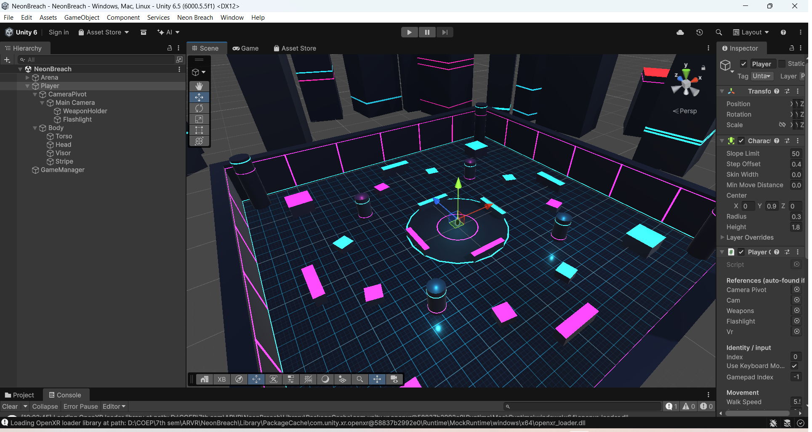
Figure 1.2 – The project open in the Unity 6 Editor: the NeonBreach scene hierarchy (left), the generated neon arena in the Scene view (centre), the Player's components in the Inspector (right) and the project's own Neon Breach menu in the menu bar.QQMK0015QQ
1.4 Key ContributionsQQMK0016QQ
One input abstraction for four input methods. Keyboard and mouse, gamepad, OpenXR controllers and XR Hands gestures all fill one PlayerInputState, so every game mode works on every device without device-specific gameplay code.
VR comfort by design. A tunnelling vignette driven by speed and turn rate, snap turns with a blink, rotation about the head, seated-mode height calibration, room-scale head following and no camera shake in VR.
Mixed-reality breach mode. The real play-area boundary becomes invisible walls, enemy spawn points and a runtime NavMesh, so virtual enemies move through the user's real room.
A custom binaural spatializer. Interaural time difference (Woodworth model), level difference and head-shadow low-pass filtering, implemented in an audio-thread DSP filter.
Physically based mini-games. Arrow ballistics with quadratic drag and wind, and skydiving with body-position-dependent terminal velocity, canopy flight and flare.
Fully procedural content. Every model, texture, material, sound, music loop and level is generated in C#; the repository contains no imported art or audio.
Measured performance. Every mode runs at 2.5–3.3 ms per frame on the development PC, well inside a 90 Hz VR budget, after measured optimisations such as GPU instancing and removing shadows from emissive parts.
1.5 Improvements Made During the ESE AuditQQMK0017QQ
As the task required, the whole project was inspected against the ten evaluation criteria before this report was written. Four gaps were found; each was fixed and re-verified before it is documented as working (Table 1.2).
Table 1.2 – Gaps found during the ESE audit and the improvements madeQQMK0018QQ
Gap found
Criteria affected
Improvement implemented and verification
The XR loader list was empty and every OpenXR feature was disabled, so VR could not start until the user ran a manual set-up step
4, 5, 8
Created the XR settings and ran the project's own Configure OpenXR features tool: OpenXR is the loader, with 5 controller profiles, Hand Tracking Subsystem and Meta Hand Tracking Aim enabled. OpenXR project validation: 0 issues (Chapter 5).
XR Project Validation warned that Run In Background was off, which causes head-locked rendering when the headset's system menu takes focus
4, 9
Enabled PlayerSettings.runInBackground; validation now reports 0 issues in 12 checks (Figure 5.3).
Number keys 1–9 mapped to the wrong Input System keys (1/2/3 → Shift/Shift/Alt), breaking weapon selection and shop quick-buy
7, 9
Fixed the key mapping in DesktopInput.ToKey; keys 2, 3 and 1 verified to select the rifle, the scatter cannon and the pistol (Chapter 10).
In VR, switching modes logged "Cannot set field of view on camera … while VR is enabled"
4, 8
Added Util.SetFov, which skips FOV writes while the camera renders in stereo; VR mode switching now produces 0 warnings, and the desktop sprint FOV still changes from 87° to 94°.
In addition, the VR pipeline, which previously had only been compile-checked, was executed end to end with Unity's OpenXR Mock Runtime. Simulated head and controller poses and button presses were injected through the OpenXR conformance-automation extension, and the resulting VR frames, haptic events and registration values were recorded (Section 5.12).
1.6 Final Polish Pass (27 Nov 2026)QQMK0019QQ
After the audit, the project was inspected once more for small improvements that would make it more polished without changing its gameplay, scenes or assets. Five changes were made (Table 1.3); each was compiled, played and captured in the running Editor, and two of them were corrected after the first test showed a problem (Chapter 10).
Table 1.3 – Improvements made in the final polish passQQMK0020QQ
Improvement
Mode / area
What changed and how it was verified
Archery trajectory guide
Archery (C7, C8)
New Arrow.Predict runs the arrow's exact flight model (gravity, drag, wind, raycasts); ArcheryMode.UpdateGuide draws it as a dotted arc from the arrow tip while the bow is drawn. Verified: 15–16 points ending on the range floor at 36–43 m; 3.1 ms per frame (Figure 8.16)
Fade transitions
All modes (C7)
HUD.FadeIn on every mission, tutorial, mode start and return to menu. Verified frame by frame: brightness 3.0 → 48.1 → 128.3 at 0 / 0.25 / 1.0 s (Figure 8.5)
Fading results screen
Archery, Parachute (C7)
Results fade in over 0.5 s instead of appearing at once (Figure 8.8)
Button hover animation
All menus (C7)
Pulsing glow and accent bar on every neon button, matching the Rat Shooter button (Figure 8.2)
Animated mode cards
Pause, results (C7)
Each mode card sits on a panel that brightens and pulses on hover (Figure 8.3)
The Shooter, Parachute and Rat Shooter already provided the feedback listed in the task (enemy hit flash and knock-back, hit markers and damage numbers, wave banners, a deployment prompt inside the deploy window, landing-accuracy scoring, mice that stop, run, change direction and flee from near misses, cartoon eliminations, weapon recoil and high scores in every mode), so their gameplay code was left unchanged to avoid risk; Chapters 8 and 9 document these features.
1.7 Organisation of the ReportQQMK0021QQ
Chapter 1 introduces the project. Chapters 2–11 each address one ESE criterion, in rubric order: problem definition and requirements (Ch. 2), literature survey (Ch. 3), system architecture and design (Ch. 4), AR/VR technology implementation (Ch. 5), tracking, registration and spatial understanding (Ch. 6), 3D modelling, assets and environment (Ch. 7), interaction and UI/UX (Ch. 8), advanced AR/VR features (Ch. 9), technical documentation (Ch. 10) and the final demonstration (Ch. 11). Chapter 12 presents results and discussion, Chapter 13 concludes and Chapter 14 describes future scope. The references follow; Appendix A lists the OpenXR Mock Runtime verification procedure and Appendix B is a screenshot gallery.
Formal problem statement and motivation backed by the VR frame-time budget (Table 2.1).
Nine measurable objectives with success criteria and achieved results (Table 2.2).
24 functional requirements (Table 2.4) and 10 non-functional requirements (Table 2.5), each traced to code and to its verification status.
Scope boundaries, constraints, assumptions and expected outcomes.
2.1 Problem StatementQQMK0023QQ
Design and implement an immersive, real-time 3D application in Unity that delivers several distinct VR interactions (shooting, archery and free-fall flight) and a mixed-reality mode from one code base; that runs on a desktop PC, on PC VR headsets through the OpenXR standard and on a Meta Quest in passthrough; that accepts keyboard and mouse, gamepad, tracked controllers and bare-hand gestures through a single input model; and that stays within the frame-time budget of a 90 Hz headset while following established VR-comfort guidelines.
2.2 MotivationQQMK0024QQ
Four practical problems motivated the project:
Device fragmentation. Vendor SDKs tie an application to one headset family, and student projects often work only on the headset they were developed with. OpenXR removes most of this lock-in, but the application must still be designed so that its gameplay does not depend on a particular controller layout, or on controllers at all.
Cybersickness. A mismatch between visual motion and the vestibular sense causes nausea in a large share of users (LaViola [4]). Artificial locomotion, smooth rotation, camera shake and low frame rates all make it worse. Comfort therefore has to be part of the design, not a later patch.
A hard real-time budget. A headset must receive a new stereo frame every refresh. Missing that deadline produces judder, which is itself a sickness trigger. The budget is the reciprocal of the refresh rate (Table 2.1).
Evaluating XR without a headset. Headsets are scarce in teaching labs. A project that can be demonstrated and tested on a normal PC, and whose XR code can be exercised by automated or simulated input, is far easier to evaluate, debug and present.
Comfortable locomotion, natural aiming with the hand, readable world-space UI, haptic and spatial-audio feedback, play with or without controllers
Examiner / course instructor
A project that can be demonstrated on a PC, clear evidence for each criterion, measurable results
Developers (the team)
Modular code, Inspector-tunable parameters, automated tests, reproducible scene builds
2.6 Functional RequirementsQQMK0031QQ
Table 2.4 lists the functional requirements, the modules that implement them and how each was verified. The verification labels are defined in the Rubric-to-Evidence Map.
Table 2.4 – Functional requirements, implementing modules and verification statusQQMK0032QQ
ID
Requirement
Implemented in
Status
FR1
A main menu offering every game, the tutorial, the leaderboard, settings, help and quit
HUDMenus.DrawMenu
Verified
FR2
Endless waves of growing size; snipers from wave 3, tanks from wave 4, a boss every 5th wave
WaveManager
Verified
FR3
Six enemy types with distinct AI (grunt, gunner, drone, boss, sniper, shield tank)
Enemy
Verified
FR4
Three weapons with fire, reload, aim-down-sights and switching; grenades; melee
WeaponSystem, Grenade
Verified
FR5
An upgrade shop between waves (5 upgrades, 3 supply items) paid with earned credits
Two arenas (Neon Grid, Foundry) and three difficulty levels
ArenaManager, DifficultyInfo
Verified
FR8
Local split-screen co-op with a gamepad for player 2; downed partners revive after the wave
GameManager, HUD
Verified (without a physical gamepad)
FR9
Archery: hold to draw, release to shoot, gravity/drag/wind ballistics, 3 × 10 arrows, ring scoring, streak and moving-target bonuses
ArcheryMode, Arrow, ArcheryTarget, WindSystem
Verified
FR10
Parachute: plane exit, free fall with speed control, 12 rings, deploy window below 2,000 m, auto-deploy at 300 m, canopy with brakes and flare, scored landing
Mixed reality: hide the arena, show passthrough, convert the room boundary into walls, spawn points and a NavMesh
MixedReality, ArenaManager
Logic verified; passthrough needs hardware
FR20
Haptic feedback per weapon, on damage and on nearby explosions (controllers and gamepad)
Haptics
Verified (Mock XR)
FR21
Binaural spatial audio for 3D sounds (or a vendor spatializer if one is installed)
BinauralFilter, Sfx
Implemented, desktop audio
FR22
An interactive tutorial of 8 steps that adapts to the input device
Tutorial
Verified
FR23
Settings in 6 tabs (gameplay, graphics, audio, controls, VR, language), key rebinding and 4 languages, saved between sessions
HUDMenus, KeyBindings, Loc, GameSettings
Verified
FR24
A top-10 leaderboard, lifetime statistics and post-game analytics (death heat map, damage over time, kills per enemy type, accuracy per weapon)
Stats, HUDGameOver
Verified
2.7 Non-Functional RequirementsQQMK0033QQ
Table 2.5 – Non-functional requirements and how they are metQQMK0034QQ
ID
Quality
Requirement
How it is met / measured
NFR1
Performance
Average frame time below 11.1 ms in every mode on the development PC
2.5–3.3 ms measured with the built-in profiler counters (Table 12.1)
NFR2
Comfort
No camera motion that the user did not cause; vignette during artificial motion; snap-turn option
Shake, recoil and head bob are disabled in VR; vignette and blink (Section 9.7)
NFR3
Portability
Vendor-neutral XR; automatic desktop fallback
OpenXR with 5 controller profiles; VRRig.Active falls back to desktop when no head device exists
NFR4
Usability
A first-time player can learn every control in-game
8-step tutorial, F1 help overlay, a How to Play page, key hints on the HUD
NFR5
Accessibility
Adjustable controls and comfort
Key rebinding, mouse sensitivity, invert Y, FOV, seated mode, vignette strength, 4 languages
NFR6
Maintainability
Modular, documented, tunable code
3 namespaces, 123 scripts with summary comments; Inspector-exposed tuning, e.g. 60+ skydive parameters (Figure 10.1)
NFR7
Reliability
No errors or exceptions during normal play
Automated smoke test; 0 errors and 0 warnings in the console after the verification runs (Chapter 10)
NFR8
Footprint and licensing
No third-party assets; small repository
All content procedural; the Assets folder is about 41 MB, including the generated meshes
NFR9
Compatibility
Unity 6000.5.5f1, Built-in Render Pipeline, Input System
Compiles against both input back-ends; Windows player builds; Android/Quest needs the Android Build Support module
NFR10
Persistence
Settings and progress survive restarts
PlayerPrefs keys for settings, bindings, per-mode high scores, leaderboard and statistics (Table 4.3)
2.8 Constraints and AssumptionsQQMK0035QQ
No physical headset was available during the ESE preparation. VR features were therefore verified with the OpenXR Mock Runtime, which exercises the real OpenXR code path but has no lenses, cameras or hand tracking. Features that depend on real sensors are labelled needs hardware.
The development machine has only the Windows build module installed. A Quest (Android) build requires installing Android Build Support and re-running the project's OpenXR configuration tool for the Android tab.
Development used Unity 6000.5.5f1 with the Built-in Render Pipeline. A custom post-processing shader replaces URP's volume system.
All performance figures come from the development PC (Intel Core i7-13650HX, NVIDIA GeForce RTX 4060 Laptop GPU). A mobile headset GPU is slower, so the large margin under 11.1 ms is intentional.
2.9 Expected OutcomesQQMK0036QQ
A playable, demonstrable project with four game modes (and a bonus scene) that runs on a standard Windows PC without additional hardware.
A VR-ready build that runs on any OpenXR headset with controllers or hands, and a Quest MR mode.
Measured evidence that the project meets its real-time and comfort requirements.
Documentation, diagrams and screenshots that allow the system to be evaluated, maintained and extended.
Survey of the foundations of XR: head-mounted displays, the reality–virtuality continuum, augmented-reality registration (Figure 3.1).
Tracking technologies compared (Table 3.1) and the OpenXR runtime architecture (Figure 3.2).
Research on cybersickness, VR interaction, spatial hearing, navigation AI, procedural generation and rendering, each mapped to a design decision in NEON BREACH (Table 3.4).
Comparison with existing commercial VR/MR applications (Table 3.3); 36 references.
3.1 Evolution and Definitions of XRQQMK0038QQ
Sutherland's 1968 head-mounted three-dimensional display [1] established the core idea that VR still relies on: a display mounted on the head whose image is updated from tracked head pose, so that virtual objects appear fixed in space. Milgram and Kishino [2] placed real and virtual environments at the two ends of a reality–virtuality continuum. Augmented reality adds virtual objects to a predominantly real view, augmented virtuality adds real elements to a virtual world, and mixed reality covers the whole range between the two extremes. Azuma's survey [3] defined AR by three properties: it combines real and virtual, it is interactive in real time, and it is registered in 3D. Registration, keeping virtual content aligned with the real world, is the central technical problem of AR.
flowchart LR
RE["Real environment"] --- AR["Augmented reality"] --- AV["Augmented virtuality"] --- VE["Virtual environment"]
MR1["NEON BREACH MR breach mode (passthrough + virtual enemies)"] -.-> AR
VR1["NEON BREACH VR modes (arena, range, sky)"] -.-> VE
DT["NEON BREACH desktop mode"] -.-> VE
Figure 3.1 – Milgram and Kishino's reality–virtuality continuum [2] and where the modes of NEON BREACH sit on it.QQMK0039QQ
3.2 Tracking TechnologiesQQMK0040QQ
Tracking measures the pose (position and orientation) of the head, the controllers and the hands. Welch and Foxlin's review [9] shows that no single sensor is sufficient. Inertial measurement units (IMUs) are fast but drift, and optical systems are drift-free but slower and can be occluded. Practical trackers therefore fuse the two. 3DoF trackers report orientation only; 6DoF trackers add position, which is what makes leaning, crouching and room-scale walking possible. Outside-in systems use external base stations or cameras (Valve Lighthouse, Oculus Rift CV1). Inside-out systems use cameras on the headset itself with visual-inertial odometry or SLAM (Meta Quest, Windows Mixed Reality). The same cameras also make controller-free hand tracking possible: MEgATrack [10] showed real-time articulated tracking of 26-joint hand skeletons from the Quest's monochrome cameras, the technique behind the hand input that OpenXR exposes through XR_EXT_hand_tracking.
Table 3.1 – Comparison of XR tracking technologiesQQMK0041QQ
Technology
DoF
Principle
Strengths / weaknesses
Use in NEON BREACH
IMU only
3
Gyroscope and accelerometer integration
Very low latency; drifts, no position
Not used alone
Outside-in optical
6
External base stations sweep lasers, or external cameras track markers
Precise, large volume; needs installed hardware
Supported through OpenXR (Valve Index, HTC Vive profiles)
Inside-out visual-inertial (SLAM/VIO)
6
Headset cameras plus IMU estimate the pose and map the room
No external hardware, supports a room boundary; controllers must stay in camera view
Primary target (Meta Quest; Touch, Touch Plus and Touch Pro profiles)
Articulated hand tracking
26 joints × 6
Neural-network keypoint estimation from headset cameras [10]
No controllers; occlusion and jitter
HandTracking.cs with pinch hysteresis
Boundary / play area
–
A user-drawn polygon on the tracked floor
Simple, always available on Quest; no furniture detail
MR walls, spawn points and NavMesh
3.3 The OpenXR StandardQQMK0042QQ
OpenXR [11] is the Khronos Group's royalty-free standard interface between XR applications and XR runtimes. An application talks to a loader, which binds the active runtime installed by the device vendor (Meta Quest Link, SteamVR, Windows Mixed Reality). Four concepts matter most for this project:
Reference spaces.VIEW (head-locked), LOCAL (a seated origin at the starting head pose) and STAGE (a floor-level origin at the centre of the play area). Unity reports these as the Device and Floor tracking-origin modes.
The action system and interaction profiles. Applications declare abstract actions and suggest bindings for each interaction profile (for example /interaction_profiles/oculus/touch_controller). The runtime chooses the profile that matches the hardware, which allows remapping between vendors.
Extensions. Optional capabilities such as hand tracking (XR_EXT_hand_tracking), Meta passthrough, and XR_EXT_conformance_automation, which lets a test inject controller poses and button states. This report uses the last one to verify the VR pipeline (Chapter 5).
Coordinate convention. OpenXR uses a right-handed system with −Z forward; Unity uses a left-handed system with +Z forward. The conversion is analysed in Chapter 6.
Figure 3.2 – Software layers between the game and the headset. Swapping the runtime at the bottom does not require any change to the game code above it.QQMK0043QQ
3.4 The Unity XR Technology StackQQMK0044QQ
Table 3.2 – Unity technologies used by NEON BREACH and their roleQQMK0045QQ
Selects and initialises the XR loader at start-up; manages XR subsystems
OpenXR Plugin (1.17.1)
OpenXR loader, interaction profiles, features, Mock Runtime and conformance automation
XR Hands (1.8.0)
XRHandSubsystem exposing 26 joint poses per hand
AR Foundation (6.5.0)
ARSession and ARCameraManager for passthrough in MR mode
Unity OpenXR: Meta (2.5.0)
Meta Quest features: session, camera (passthrough), boundary visibility, planes
Input System (1.19.0)
Keyboard, mouse and gamepad devices; rebinding back-end
AI Navigation (2.0.14)
NavMeshSurface built at runtime for arenas and the MR room
XR Composition Layers
Installed as a dependency of the XR packages; not used directly
Unity exposes tracked devices in two ways. The UnityEngine.XR.InputDevices API with CommonUsages (for example devicePosition, triggerButton) reads any device through generic feature usages, independent of the vendor. Input System action maps are the alternative. NEON BREACH uses the first approach for XR devices, which keeps the code short and runtime-agnostic, and the Input System for desktop devices.
3.5 Cybersickness and VR ComfortQQMK0046QQ
LaViola [4] reviews three explanations of cybersickness: sensory-conflict theory, postural-instability theory and poison theory. Sensory conflict, in which the eyes report motion that the vestibular system does not feel, is the most widely cited. It predicts that artificial locomotion and rotation are the main triggers. Kennedy et al. [5] introduced the Simulator Sickness Questionnaire (SSQ), still the standard instrument for measuring it. Several mitigation techniques have experimental support:
Field-of-view restriction. Fernandes and Feiner [6] dynamically narrowed the FOV during virtual motion and found that participants felt less sick and stayed in VR longer, mostly without noticing the restriction. NEON BREACH's ComfortVignette implements this idea, driven by speed and turn rate.
Viewpoint snapping. Farmani and Teather [7] showed that rotating the view in discrete steps (snap turning) reduces sickness compared with continuous rotation. NEON BREACH offers snap turns (with a short blink) and smooth turns.
Real walking. Slater, Usoh and Steed [8] found that walking in place or really walking produces stronger presence than virtual travel. The MR mode locks artificial locomotion so that the player walks for real, and room-scale head following keeps the body collider under the head.
Frame rate and no involuntary motion. Judder and camera motion the user did not cause are avoided: there is no camera shake, recoil kick or head bob in VR.
3.6 3D Interaction TechniquesQQMK0047QQ
Mine [28] described ray-casting selection, in which a virtual ray extends from the hand and the first object it hits is selected. It remains the dominant technique for distant selection and menus in VR. Bowman et al. [29] classify 3D interaction into selection, manipulation, navigation (travel and wayfinding), system control and symbolic input, and recommend placing system-control widgets in world space or on the body. NEON BREACH follows these recommendations: menus are world-space panels selected with a ray from the right hand, a wrist display on the left hand provides glanceable status (body-referenced UI), weapons and the bow are aimed directly with the tracked hand, and travel uses stick locomotion with comfort options, or real walking in MR.
3.7 Spatial Hearing and Binaural AudioQQMK0048QQ
Rayleigh's duplex theory [21] explains horizontal sound localisation with two cues. The interaural time difference (ITD) dominates at low frequencies, and the interaural level difference (ILD), caused by the head shadowing the far ear, dominates at high frequencies. Woodworth's spherical-head model [22] gives ITD(θ) = (r/c)(θ + sin θ) for azimuth θ, head radius r and speed of sound c. Begault [23] describes how head-related transfer functions (HRTFs) combine these cues with spectral filtering by the pinna to produce convincing 3D sound over headphones. Commercial spatializers (Meta XR Audio, Steam Audio) use measured HRTFs. NEON BREACH implements a lightweight parametric approximation (ITD + ILD + head-shadow low-pass + a rear pinna cue) and automatically uses a vendor spatializer when one is installed (Chapter 9).
3.8 Game AI and NavigationQQMK0049QQ
Path-finding in games is built on A* search [19] over a graph of the walkable space. A navigation mesh represents walkable surfaces as convex polygons. Mononen's Recast & Detour [18], on which Unity's NavMesh is based, voxelises the scene geometry, extracts walkable regions and searches the polygon graph. Reynolds' steering behaviours [20] (seek, flee, separation, path following) turn a path into smooth, locally reactive motion. NEON BREACH builds the NavMesh at runtime with NavMeshSurface [17], because arenas, the archery range and the MR room are generated at runtime, and steers enemies along the path corners with a separation force.
3.9 Procedural Generation and Real-Time RenderingQQMK0050QQ
Perlin's gradient noise [24] and its fractal sums remain the standard tool for natural terrain and textures. The parachute island's height field and colour map are generated this way. For the neon look, the project implements bloom with a bright-pass prefilter and a mip-chain blur, the approach popularised in Jimenez's Call of Duty: Advanced Warfare post-processing [25], followed by tone mapping. Filmic curves such as Narkowicz's ACES fit [26] are the usual choice in linear colour space; because NEON BREACH renders in gamma space, where such a curve would lift the shadows, it uses a highlight-only soft clip instead (Chapter 7). The Rat Shooter uses stylised cel shading in the tradition of Lake et al. [27]: a quantised diffuse ramp, a rim light and a crisp specular highlight.
3.10 Game Physics BackgroundQQMK0051QQ
A projectile moving through air experiences gravity and an aerodynamic drag force approximately proportional to the square of its speed, Fd = −½ρCdA|v|v. Dividing by mass gives an acceleration −k|v|v. A falling body therefore accelerates until drag balances gravity at the terminal velocity vt = √(g/k). The terminal velocity of a skydiver depends on body position. Belly-to-earth free fall is commonly quoted at about 55 m/s (about 200 km/h), and head-down at 80 m/s or more. The project uses this model with tunable terminal velocities (Chapter 9).
3.11 Existing AR/VR ApplicationsQQMK0052QQ
Table 3.3 compares well-known VR and MR titles with NEON BREACH. The comparison covers design dimensions (input, locomotion, comfort, MR); it is not a comparison of production scale.
Table 3.3 – Comparison of NEON BREACH with existing VR/MR applicationsQQMK0053QQ
Application
Genre
Interaction and locomotion
Relevance to this project
Half-Life: Alyx [31]
Narrative shooter (PC VR)
Tracked-hand weapons and object interaction; teleport, shift and continuous locomotion options
Benchmark for hand-held weapon handling and comfort options
SUPERHOT VR [33]
Action shooter
Time moves only when the player moves; no artificial locomotion
Shows that time manipulation can stay comfortable; compare NEON BREACH's enemy-only slow motion
Pistol Whip [34]
Rhythm shooter
Automatic forward movement, aiming with tracked controllers
Controller aiming with strong audio-visual feedback
Beat Saber [32]
Rhythm game
Stationary play; slicing with tracked controllers
Responsiveness and haptic feedback as the core of immersion
First Encounters [35]
MR shooter (Meta Quest 3)
Passthrough; virtual creatures break through the user's real walls
Closest to NEON BREACH's MR breach mode; it uses Meta's scene model, whereas NEON BREACH uses the play-area boundary
NEON BREACH
Shooter + archery + skydive + 2 bonus games
Controllers or hands; stick locomotion with vignette, snap/smooth turn and seated mode, or real walking in MR
Combines several interaction styles, a desktop fallback and simulated-XR verification in one project
3.12 Summary: from Literature to Design DecisionsQQMK0054QQ
Table 3.4 – How the literature informed the design of NEON BREACHQQMK0055QQ
Finding from the literature
Design decision in NEON BREACH
Chapter
Registration in 3D defines AR [3]
MR mode registers walls, spawn points and the NavMesh to the tracked play-area boundary
6
Inside-out 6DoF tracking with a boundary is standard on standalone headsets [9]
Uses XRInputSubsystem.TryGetBoundaryPoints, with a fallback room when unavailable
The game state machine (Figure 4.5), the scene and navigation workflow (Figure 4.6) and the mode-switching sequence (Figure 4.7).
Scene hierarchies and component wiring captured from the Unity Editor, in edit mode and at runtime with the VR rig active (Figure 4.8, Figure 4.10).
Architectures and state machines of the Rat Shooter and Farm Sniper games; persistence design (Table 4.3).
4.1 Architectural StyleQQMK0057QQ
NEON BREACH uses Unity's component-based architecture: behaviour lives in MonoBehaviour components attached to GameObjects, and the engine calls them every frame. On top of this the project adds a layered architecture with strict dependencies. Input devices are at the bottom and feed one input model; gameplay systems read only that model; core services hold state, rules and persistence; world builders generate content; and presentation systems (HUD, VR UI, post-processing, audio, haptics) render the result. Each layer depends only on the layers below it, which is why a new input method (hand tracking) or a new mode (archery, parachute) could be added without changing the existing gameplay code.
flowchart TB
subgraph L1["1 · Input devices"]
direction TB
KBM["Keyboard + mouse DesktopInput"]
PAD["Gamepad GamepadInput"]
XRC["XR controllers VRRig.Read"]
HND["Hand tracking HandTracking"]
end
INP[["PlayerInputState one per player, refilled every frame"]]
subgraph L2["2 · Gameplay"]
direction TB
PC["PlayerController"]
WS["WeaponSystem"]
MM["ModeManager Archery · Parachute"]
WM["WaveManager Enemy AI"]
TUT["Tutorial"]
end
subgraph L3["3 · Core services"]
direction TB
GM["GameManager state machine"]
SET["GameSettings KeyBindings · Loc"]
PRG["Progression upgrades, power-ups"]
STA["Stats leaderboard, analytics"]
end
subgraph L4["4 · World"]
direction TB
WB["WorldBuilder"]
AM["ArenaManager runtime NavMesh"]
MR["MixedReality room registration"]
end
subgraph L5["5 · Presentation"]
direction TB
HUD["HUD (IMGUI)"]
VRM["VRMenu, wrist display"]
PFX["PostFX"]
AUD["Sfx + BinauralFilter"]
HAP["Haptics, ComfortVignette"]
end
L1 ==> INP ==> L2
L2 <==> L3
L3 ==> L4 ==> L5
Figure 4.1 – Layered architecture of NEON BREACH. Every input device writes into one PlayerInputState; gameplay systems never query a device directly.QQMK0058QQ
4.2 Module DecompositionQQMK0059QQ
The C# code is organised into three namespaces: NeonBreach for the main game, NeonBreach.RatShooter and NeonBreach.Farm. The main game is split into ten folders by responsibility (Table 4.1).
Table 4.1 – Modules, responsibilities and code metrics (counted from the project on 22 Nov 2026)QQMK0060QQ
Module (folder)
Scripts
Lines
Responsibility
Key types
Scripts/Core
17
3,265
Game state, settings, persistence, scoring, audio synthesis and playback, haptics, procedural textures/materials, profiling, automated test
Plus 5 shaders (NB_PostFX, NB_Vignette, RatToon, RatSky, RatFX) and 3 scenes
4.3 Component and Class RelationshipsQQMK0061QQ
Figure 4.2 shows the main classes of the shared framework and how they relate. Three interfaces and one abstract base class keep the coupling low. IDamageable lets weapons damage enemies, players and training targets without knowing their types. IPlayerDriver lets a mode take over the player's movement (the parachute does this). The abstract MiniGame class gives every mini-game the same life cycle: Begin, Teardown and a result screen.
Figure 4.2 – Simplified class diagram of the shared framework (fields and methods abridged).QQMK0062QQ
4.4 Frame Execution PipelineQQMK0063QQ
In VR, the order in which components run within one frame decides correctness: the hand pose must be read before input is translated, and input must be complete before weapons fire. The project fixes the order with Unity's [DefaultExecutionOrder] attribute (Table 4.2). Figure 4.3 shows the resulting pipeline.
Table 4.2 – Script execution order (lower runs earlier in each frame)QQMK0064QQ
Order
Component
Why it runs at this point
−100
GameManager
Pause requests (Esc, gamepad Start, VR menu button), the F1/F3/F4/F12 hotkeys and state transitions, before anything reads the state
−90
ModeManager
F5/F6/F7 mode hotkeys and mode switches, before players update
−70
HandTracking
Reads the 26 joints per hand and detects gestures first
−60
VRRig
Menu-button handling; its Read() is called by the player at −50
−50
PlayerController
Clears and refills PlayerInputState from all readers, then moves the player (or delegates to an IPlayerDriver)
−20
WeaponSystem
Fires and reloads from the finished input
−10
ArcheryMode, ParachuteMode
Mode logic after the input of this frame is known
0
Enemy, Arrow, HUD, others
World simulation; IMGUI is drawn in OnGUI
LateUpdate
VRRig, ComfortVignette, BinauralFilter
Apply the latest tracked poses to the camera and hands, then update the vignette and the audio cue parameters
Render
PostFX.OnRenderImage
Bloom, tone mapping and grading on the final image (desktop)
sequenceDiagram
autonumber
participant XR as OpenXR runtime
participant HT as HandTracking (-70)
participant PC as PlayerController (-50)
participant RIG as VRRig
participant WS as WeaponSystem (-20)
participant W as Enemies / Modes (0)
participant LU as LateUpdate + render
XR->>HT: joint poses (XRHandSubsystem)
HT->>HT: pinch / palm gestures
PC->>PC: Inp.Clear()
PC->>RIG: DesktopInput / GamepadInput / vr.Read(Inp)
RIG-->>PC: buttons, sticks, gestures
PC->>PC: look, move (or Driver.DrivePlayer)
WS->>WS: fire / reload from Inp
W->>W: AI, physics, scoring
LU->>XR: Track(CenterEye, hands) then submit frame
Figure 4.3 – Order of operations within one frame. Reading input once and storing it in a struct ensures every system sees the same input for the whole frame.QQMK0065QQ
4.5 Input Data FlowQQMK0066QQ
flowchart LR
subgraph R["Readers"]
direction TB
D["DesktopInput.Read keys via KeyBindings"]
G["GamepadInput.Read P1, or P2 in co-op"]
V["VRRig.Read CommonUsages buttons and sticks"]
H["HandTracking pinch / open palm"]
end
S[["PlayerInputState move · look · snapTurn fire · aim · zoom · reload jump · dash · sprint · crouch grenade · melee · flashlight medkit · weaponSelect"]]
D --> S
G --> S
V --> S
H --> V
S --> C1["PlayerController locomotion"]
S --> C2["WeaponSystem"]
S --> C3["ArcheryMode draw, release, zoom"]
S --> C4["ParachuteController jump, dive, ripcord, flare"]
S --> C5["Tutorial step detection"]
Figure 4.4 – Input data flow. All four readers write into the same structure; each consumer reads it without knowing which device produced it.QQMK0067QQ
4.6 Game State MachineQQMK0068QQ
GameManager holds a finite-state machine with five states (enum GameState { Menu, Playing, Paused, Shop, GameOver }). The mini-game modes reuse it: BeginModeRun() enters Playing and EndModeRun() enters GameOver, which shows the mode's results screen.
stateDiagram-v2
[*] --> Menu
Menu --> Playing: Start mission / Tutorial
Menu --> Playing: Archery or Parachute (BeginModeRun)
Playing --> Paused: Esc / Start / menu button
Paused --> Playing: Resume, Restart or Switch mode
Paused --> Menu: Main menu
Playing --> Shop: wave cleared
Shop --> Playing: Continue (next wave)
Playing --> GameOver: all players down
Playing --> GameOver: mode run finished (EndModeRun)
GameOver --> Playing: Retry / Play again
GameOver --> Menu: Main menu
Figure 4.5 – The game state machine implemented in GameManager.QQMK0069QQ
4.7 Scenes and Gameplay WorkflowQQMK0070QQ
The project has three scenes in Build Settings: NeonBreach.unity (index 0), FarmSniper.unity (1) and RatShooter.unity (2). Figure 4.6 shows how the player moves between them. Scene changes to and from the Rat Shooter go through SceneFader, which fades the picture and the sound out, loads the scene asynchronously and fades back in.
flowchart TB
subgraph S0["NeonBreach.unity (build index 0)"]
direction LR
MENU(["Main menu"])
SH["Shooter waves, shop, co-op"]
AR["Archery"]
PA["Parachute"]
TUT["Tutorial"]
OPT["Settings, leaderboard, how to play"]
RES["Results / game over"]
MENU --> SH
MENU --> AR
MENU --> PA
MENU --> TUT
MENU --> OPT
TUT --> SH
SH --> RES
AR --> RES
PA --> RES
end
subgraph S2["RatShooter.unity (build index 2)"]
direction LR
RT(["Title"]) --> RC["Countdown"] --> RL["Levels 1-5"]
RL --> RLC["Level clear"]
RL --> RGO["Game over"]
RL --> RV["Victory"]
end
subgraph S1["FarmSniper.unity (build index 1)"]
direction LR
FT(["Title"]) --> FB["Briefing"] --> FP["Mission"]
FP --> FV["Mission complete"]
FP --> FF["Mission failed"]
end
S0 ==>|"RAT SHOOTER button (SceneFader)"| S2
S2 ==>|MAIN MENU| S0
S1 ==>|BACK TO NEON BREACH| S0
Figure 4.6 – Scenes and navigation. Shooter, Archery and Parachute share one scene and switch at runtime; the other two games are separate scenes.QQMK0071QQ
4.8 Mode-Switching DesignQQMK0072QQ
Switching modes inside one scene, rather than loading a new scene, keeps the player object, the VR rig, the settings and the audio system alive, which avoids reinitialising XR. The cost is that every mode must remove everything it created. ModeManager.SwitchTo (Listing 4.1) enforces this order: tear down the active mode, hide the shooter world, begin a mode run, then let the new mode build its world.
Listing 4.1 – ModeManager.SwitchTo – tearing down one mode and building the next (Assets/Scripts/Modes/ModeManager.cs, lines 166-195)QQMK0073QQ
public void SwitchTo(GameMode m)
{
GameManager gm = GameManager.Instance;
if (gm == null || switching) return;
switching = true;
try
{
Time.timeScale = 1f;
if (gm.Hud != null) gm.Hud.CloseOverlays();
if (m == GameMode.Shooter)
{
// StartFromMenu -> StartGame / StartTutorial call ReturnToShooter() first
gm.StartFromMenu();
if (gm.Hud != null) gm.Hud.Banner(Name(m), Loc.T("Survive the waves"));
return;
}
TeardownActive();
if (Current == GameMode.Shooter) HideShooter(gm);
Current = m;
gm.BeginModeRun();
MiniGame game = Active;
game.Begin(gm.Player);
Sfx.Play2D(SfxId.WaveStart, 0.6f);
}
finally
{
switching = false;
}
}
sequenceDiagram
autonumber
actor P as Player
participant UI as HUD / F5-F7 / VR menu
participant MM as ModeManager
participant OLD as Old mode
participant GM as GameManager
participant NEW as New mode
P->>UI: Archery / Parachute / Switch mode
UI->>MM: SwitchTo(mode)
MM->>OLD: Teardown()
Note over OLD: removes enemies, arrows, rings, island, decals
MM->>GM: BeginModeRun()
MM->>NEW: Begin(player)
Note over NEW: builds its world from code
loop every frame
NEW->>NEW: read input, simulate, score
end
NEW->>GM: EndModeRun()
GM->>UI: results screen
NEW->>MM: SubmitScore() per-mode best
Figure 4.7 – Sequence of a runtime mode switch.QQMK0074QQ
4.9 Scene HierarchyQQMK0075QQ
The saved NeonBreach.unity scene is deliberately small: the generated Arena (84 child objects), the Player (CharacterController, PlayerController and VRRig) and the GameManager object, which hosts the manager components (Figure 4.8, Figure 4.9). Everything else is created at runtime. Figure 4.10 was captured in Play mode with the VR rig active: the rig has created the tracked RightHand (controller shell, laser and the weapon holder with all three weapons), the LeftHand with its WristDisplay, the ComfortVignette under the camera, and the VR menu objects, while ModeManager has added the archery and parachute components and the wave system has spawned enemies.
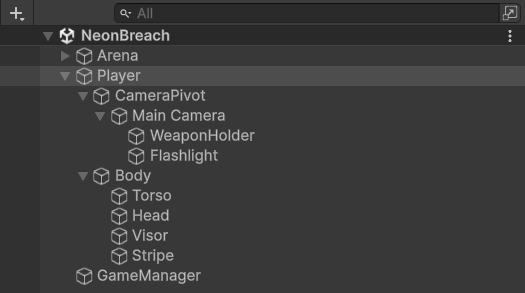
Figure 4.8 – NeonBreach scene hierarchy in edit mode (Player expanded).QQMK0076QQ
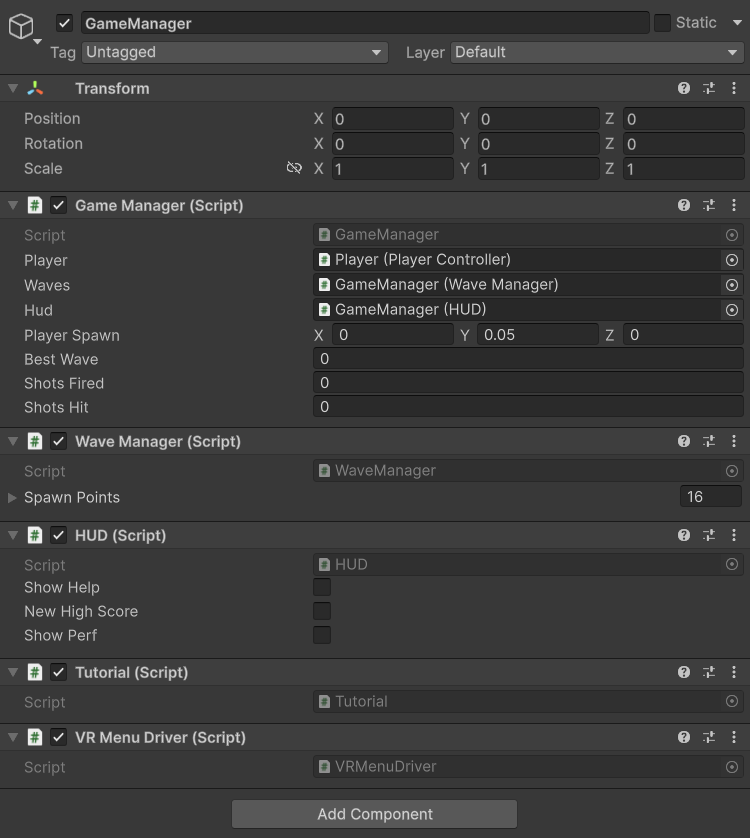
Figure 4.9 – GameManager components in edit mode: GameManager, WaveManager (16 spawn points), HUD, Tutorial and VRMenuDriver.QQMK0077QQ
Figure 4.10 – Runtime hierarchy with the VR rig active (OpenXR Mock Runtime): tracked hands, wrist display, laser, comfort vignette, VR menu panel and pointer, NavMesh object, enemies.QQMK0078QQFigure 4.11 – GameManager at runtime: ModeManager, WindSystem, ArcheryMode and ParachuteMode have been added.QQMK0079QQ
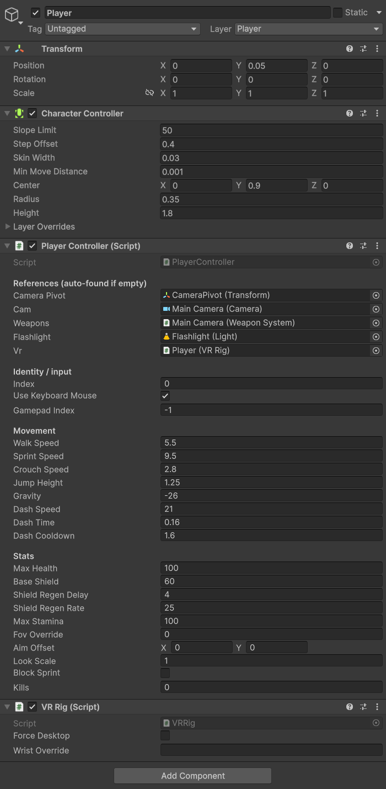
Figure 4.12 – Player Inspector: CharacterController (radius 0.35 m, height 1.8 m), PlayerController references and tuning (walk 5.5 m/s, sprint 9.5 m/s, gravity −26 m/s², dash 21 m/s), and the VRRig component.QQMK0080QQ
4.10 Rat Shooter ArchitectureQQMK0081QQ
The Rat Shooter has its own scene with three roots: Environment (the generated farmyard), Player and RatShooterGame (Figure 4.15). Figure 4.13 shows its components and Figure 4.14 its game states. The game reuses the shared DesktopInput, KeyBindings, GameSettings and NB_PostFX shader, but has its own HUD, audio synthesiser and toon shaders.
flowchart TB
G["RatShooterGame state, levels, score, combo, timer"]
H["RatHUD (IMGUI)"]
PL["RatShooterPlayer smoothed aim, recoil, ADS"]
GUN["CartoonGun hitscan, 8-round magazine, reload"]
SP["MouseSpawner burrows, NavMesh, hiding spots"]
AI["MouseAI walk, run, idle, flee, hide, peek"]
RIG["MouseRig procedural animation"]
VAR["MouseVariant x5"]
FX["RatFX, RatSurface, ShellCasing"]
AU["RatAudio, RatSynth"]
G --> H
G --> PL --> GUN
GUN -->|onShot| G
GUN --> FX
GUN -->|gunshot noise| SP
G --> SP --> AI --> RIG
VAR --> AI
G --> AU
Figure 4.13 – Component structure of the Rat Shooter.QQMK0082QQ
stateDiagram-v2
[*] --> Title
Title --> Countdown: Play
Countdown --> Playing
Playing --> Paused: Esc / P
Paused --> Playing: Resume
Playing --> LevelComplete: all mice caught
LevelComplete --> Countdown: Next level
Playing --> GameOver: time up / no ammo
LevelComplete --> Victory: after level 5
GameOver --> Countdown: Retry / New game
Victory --> Countdown: Play again
Figure 4.14 – Rat Shooter states (enum RatState).QQMK0083QQFigure 4.15 – RatShooter scene hierarchy (Environment expanded).QQMK0084QQ
Figure 4.16 – Component structure of the Farm Sniper. Its states are Title → Briefing → Playing ⇄ Paused → Victory | GameOver (enum FarmState).QQMK0086QQFigure 4.17 – FarmSniper scene hierarchy: Sun, Environment, Rat Burrows, the Farmer (player) with its tracking space, the game manager and the rat template.QQMK0087QQ
4.12 Persistence DesignQQMK0088QQ
All persistent data is stored with Unity's PlayerPrefs key–value store under the company "COEP Tech" and product "Neon Breach". Complex records (the leaderboard, lifetime statistics and the death map) are serialised to JSON strings with versioned keys, so that a future format can coexist with old data.
Table 4.3 – Persistent data keys (PlayerPrefs)QQMK0089QQ
Key(s)
Content
nb_sens, nb_fov, nb_invy, nb_shake
Gameplay settings: mouse sensitivity, field of view, invert Y, screen-shake intensity
nb_quality, nb_postfx, nb_bloom, nb_vsync, nb_fps
Graphics settings
nb_vol, nb_music, nb_hrtf
Audio settings, including the binaural (HRTF) toggle
Top-10 leaderboard, lifetime statistics and the death heat map (JSON)
4.13 Design Patterns UsedQQMK0090QQ
Table 4.4 – Design patterns in the code baseQQMK0091QQ
Pattern
Where and why
Singleton / service locator
GameManager.Instance, ModeManager.Instance, WindSystem.Instance, RatShooterGame.Instance: one authoritative manager per scene
Adapter (input readers)
DesktopInput, GamepadInput, VRRig.Read and HandTracking convert device-specific input into PlayerInputState
Template method
The abstract MiniGame defines the life cycle; ArcheryMode and ParachuteMode fill in Begin, Teardown and the result rows
Strategy / delegation
IPlayerDriver lets the parachute replace the player's locomotion without changing PlayerController
State machine
GameState, RatState, FarmState, ParachuteController.Phase, the archery phases and the per-enemy AI states
Observer
CartoonGun.onShot events; mice react to relayed gunshot noise
Object pool / cache
Sfx pools 32 audio sources; Mats and ProcTex cache one material and texture per name
Builder
WorldBuilder, RatWorldBuilder and FarmWorldBuilder assemble whole levels from primitives; the editor builders save the result
Partial class
HUD is split across HUD.cs, HUDMenus.cs, HUDShop.cs, HUDGameOver.cs and HUDModes.cs
Chapter 5AR/VR Technology ImplementationQQMK0092QQ Rubric Criterion 4 of 10
Evidence in this chapter
The exact XR packages and versions (Listing 5.1) and the XR Plug-in Management and OpenXR configuration, captured from the Editor (Figure 5.1, Figure 5.2, Figure 5.3).
A configuration gap found during the audit and fixed with the project's own OpenXR set-up tool (Listing 5.2).
Source listings of the VR rig, controller mapping, hand-gesture recognition, mixed-reality mode, haptics and VR menu pointer.
End-to-end verification of the VR pipeline with Unity's OpenXR Mock Runtime and the conformance-automation extension: real VR frames, haptic events and measured values (Section 5.12, Table 5.4, Figure 5.7).
5.1 XR Technology StackQQMK0093QQ
The project is a standard Unity package-manager project. Listing 5.1 shows the dependencies that make up the XR stack; Table 3.2 in Chapter 3 explains the role of each. com.unity.pipeline is a development dependency: it lets the Unity command-line interface drive the running Editor, which was used to capture the evidence in this report.
Listing 5.1 – Package manifest: the XR, input and navigation packages used by the project (Packages/manifest.json, lines 1-22)QQMK0094QQ
5.2 XR Plug-in Management and OpenXR ConfigurationQQMK0095QQ
Unity starts XR through XR Plug-in Management. For each build target it stores a list of loaders and a flag, Initialize XR on Startup. At start-up the first loader whose runtime is available initialises the XR subsystems: display, input, hands, camera and session.
Gap found during the ESE audit.Assets/XR/XRGeneralSettingsPerBuildTarget.asset contained no build targets, and every feature in OpenXR Package Settings.asset had m_enabled: 0. The VR code was complete, but VR could not start until a developer ran a manual set-up step that is easy to forget before a demonstration.
Improvement implemented. Default XR settings were created for the Standalone and Android targets through XR Management's own API. The project's menu tool Neon Breach → VR → 2 – Configure OpenXR features (Listing 5.2) was then run: it assigned the OpenXR loader and enabled the five controller profiles plus hand tracking (9 changes). Unity's OpenXR project validation reports 0 issues for Standalone, and XR Plug-in Management validation reports 0 issues in 12 checks after the Run In Background fix (Figure 5.3).
Listing 5.2 – Editor tool that assigns the OpenXR loader and enables the required OpenXR features (Assets/Scripts/Editor/ProjectMenu.cs, lines 29-66)QQMK0096QQ
[MenuItem("Neon Breach/VR/2 - Configure OpenXR features (controllers, hands, Quest passthrough)")]
static void ConfigureOpenXr()
{
int changed = 0;
BuildTargetGroup[] groups = { BuildTargetGroup.Standalone, BuildTargetGroup.Android };
foreach (BuildTargetGroup g in groups)
{
XRGeneralSettings general = XRGeneralSettingsPerBuildTarget.XRGeneralSettingsForBuildTarget(g);
if (general == null || general.AssignedSettings == null)
{
Debug.LogWarning("[Neon Breach] No XR settings for " + g + " yet. Open 'Neon Breach > VR > 1 - Open XR Plug-in Management' once, then run this again.");
continue;
}
if (XRPackageMetadataStore.AssignLoader(general.AssignedSettings, OpenXRLoader, g)) changed++;
OpenXRSettings settings = OpenXRSettings.GetSettingsForBuildTargetGroup(g);
if (settings == null) continue;
foreach (OpenXRFeature f in settings.GetFeatures())
{
if (f == null) continue;
string n = f.GetType().Name;
bool want =
n == "OculusTouchControllerProfile" || n == "MetaQuestTouchPlusControllerProfile" ||
n == "MetaQuestTouchProControllerProfile" || n == "ValveIndexControllerProfile" ||
n == "HTCViveControllerProfile" || n == "HandTracking" || n == "MetaHandTrackingAim" ||
(g == BuildTargetGroup.Android && (n == "MetaQuestFeature" || n == "ARSessionFeature" || n == "ARCameraFeature"));
if (want && !f.enabled)
{
f.enabled = true;
EditorUtility.SetDirty(f);
changed++;
}
}
EditorUtility.SetDirty(settings);
}
AssetDatabase.SaveAssets();
Debug.Log("[Neon Breach] OpenXR configured (" + changed + " changes). Check 'Project Validation' in XR Plug-in Management for any remaining fixes.");
}
Figure 5.1 – XR Plug-in Management (Windows tab) after the fix: OpenXR is the active plug-in provider and Initialize XR on Startup is enabled.QQMK0097QQFigure 5.2 – OpenXR settings: single-pass instanced rendering, five enabled interaction profiles, and the Hand Tracking Subsystem and Meta Hand Tracking Aim features.QQMK0098QQ
Table 5.1 – OpenXR features enabled for the Windows (Standalone) targetQQMK0099QQ
Feature
Purpose in NEON BREACH
Oculus Touch Controller Profile
Bindings for Quest 2/3 and Rift Touch controllers (triggers, grips, A/B/X/Y, sticks, menu)
Meta Quest Touch Plus / Touch Pro Controller Profiles
Bindings for the Quest 3 and Quest Pro controllers
Valve Index Controller Profile
Bindings for Index ("Knuckles") controllers through SteamVR
HTC Vive Controller Profile
Bindings for Vive wands (trackpad mapped to primary2DAxis)
Hand Tracking Subsystem (XR Hands)
Enables XR_EXT_hand_tracking; provides the 26-joint skeletons read by HandTracking.cs
Meta Hand Tracking Aim
Meta's aim pose and pinch data for hands on Quest
For the Android (Quest) target the same tool also enables Meta Quest Support, Meta Quest: Session and Meta Quest: Camera (Passthrough). These Android features only appear once the Android Build Support module is installed, which is not the case on the development PC (Section 2.8). The Android loader is already assigned, so installing the module and re-running the tool completes the Quest set-up.
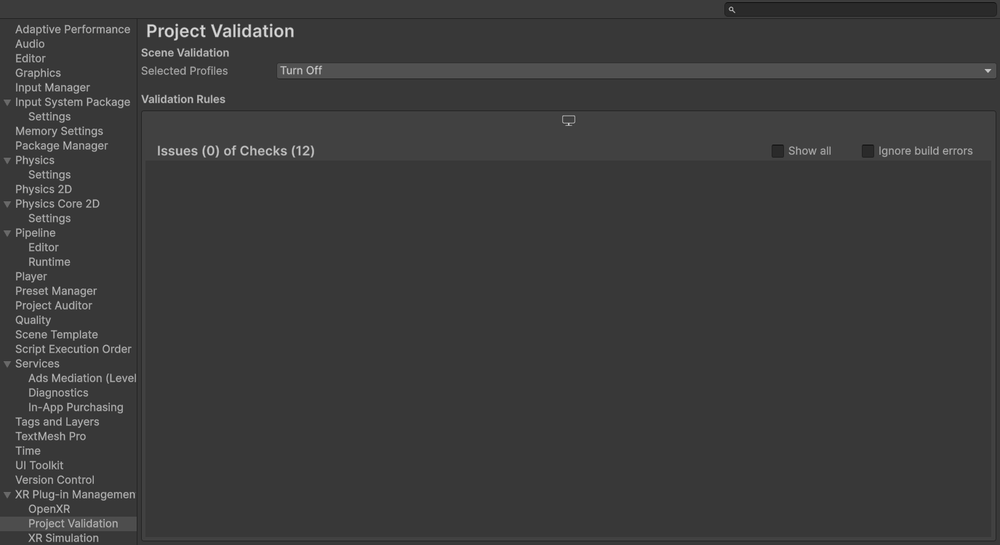
Figure 5.3 – XR Plug-in Management → Project Validation after the fixes: Issues (0) of Checks (12). Before the fix it reported that Run In Background must be enabled to avoid head-locked rendering when focus is lost.QQMK0100QQ
5.3 Runtime XR Detection and Desktop FallbackQQMK0101QQ
The same scene serves desktop and VR. VRRig decides at runtime whether a headset is present by asking the XR input API for a valid device at the Head node:
Listing 5.3 – Headset detection in VRRig (Assets/Scripts/VR/VRRig.cs, lines 27-28)QQMK0102QQ
public static bool HeadsetPresent { get { return InputDevices.GetDeviceAtXRNode(XRNode.Head).isValid; } }
public bool Active { get { return !forceDesktop && HeadsetPresent; } }
When Active is false, the rig hides its hands and stays idle, and the player uses the desktop camera and HUD. When it becomes true, the camera follows the tracked head, both hands appear, the HUD is replaced by world-space menus and the wrist display, and VR-incompatible effects (camera shake, recoil kick, head bob, FOV changes) are disabled. Figure 5.4 shows the desktop mirror of the game while a simulated headset was connected: the main menu gains the VR-only Mixed Reality Passthrough option and the message "VR headset detected – use the menu inside the headset".
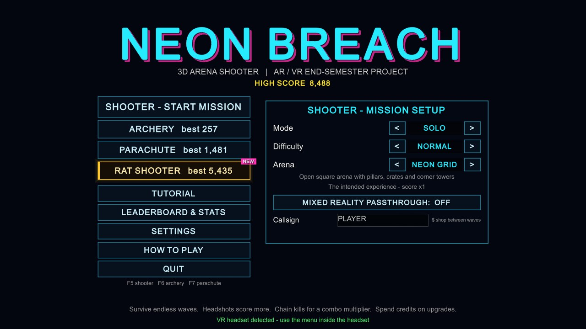
Figure 5.4 – Desktop window while an OpenXR headset (Mock Runtime) was active: the VR-only Mixed Reality Passthrough toggle and the "VR headset detected" message appear automatically.QQMK0103QQ
5.4 VR Rig ConstructionQQMK0104QQ
The rig is generated in code when the player spawns (Listing 5.4). Both hands are children of the CameraPivot, which represents the origin of the tracking space, so their local positions can be set directly from tracked poses. Each hand has a small controller shell and a coloured glow (cyan right, magenta left). The left hand carries the WristDisplay text; the right hand carries the laser sight and, at runtime, the weapon holder. The rig also adds the HandTracking and VRMenu components and creates the ComfortVignette quad in front of the camera.
Listing 5.4 – VRRig.Start and MakeHand – building the tracked hands, wrist display, banner, laser and comfort vignette (Assets/Scripts/VR/VRRig.cs, lines 62-93)QQMK0105QQ
void Start()
{
pc = GetComponent<PlayerController>();
cam = pc != null ? pc.cam : GetComponentInChildren<Camera>();
pivot = pc != null && pc.cameraPivot != null ? pc.cameraPivot : (cam != null ? cam.transform.parent : transform);
RightHand = MakeHand("RightHand", false, out rightShell);
LeftHand = MakeHand("LeftHand", true, out leftShell);
BuildWrist();
BuildBanner();
BuildLaser();
SetVisible(false);
Hands = gameObject.AddComponent<HandTracking>();
Menu = gameObject.AddComponent<VRMenu>();
Menu.Init(this);
if (cam != null) vignette = ComfortVignette.Create(cam);
}
Transform MakeHand(string name, bool left, out Transform shell)
{
GameObject h = new GameObject(name);
h.transform.SetParent(pivot, false);
// small controller shell so the hand is visible
GameObject s = Util.Part(h.transform, PrimitiveType.Cube, "Shell", new Vector3(0f, -0.02f, 0.02f), Vector3.zero,
new Vector3(0.05f, 0.04f, 0.12f), left ? "GunMetal" : "GunGrip");
Util.Part(h.transform, PrimitiveType.Sphere, "Glow", new Vector3(0f, 0.01f, 0.07f), Vector3.zero,
Vector3.one * 0.035f, left ? "NeonMagenta" : "NeonCyan");
Util.NoShadows(h);
shell = s.transform;
return h.transform;
}
5.5 Controller Integration and Input MappingQQMK0106QQ
VRRig.Read (Listing 5.5) is called by PlayerController every frame and translates controller state into the shared PlayerInputState. Devices are looked up by role (XRNode.LeftHand, XRNode.RightHand) and read through generic CommonUsages, so the same code works with every enabled interaction profile. Edge detection (trigR && !pTrigR) converts held buttons into single-frame "pressed" events. A dead-zone of 0.18 on the thumbsticks filters drift.
Listing 5.5 – VRRig.Read – translating XR controllers into the shared input state (Assets/Scripts/VR/VRRig.cs, lines 200-264)QQMK0107QQ
public void Read(PlayerInputState s)
{
InputDevice L = InputDevices.GetDeviceAtXRNode(XRNode.LeftHand);
InputDevice R = InputDevices.GetDeviceAtXRNode(XRNode.RightHand);
bool mr = MixedReality.Active;
float dt = Time.deltaTime;
// --- locomotion (disabled in mixed reality: you walk for real there)
Vector2 ls = Stick(L);
if (!mr) s.move = Vector2.ClampMagnitude(ls, 1f);
// --- turning: snap (with a short blink) or smooth
Vector2 rs = Stick(R);
TurnRate = 0f;
if (!mr)
{
if (GameSettings.Turn == TurnMode.Smooth)
{
float x = Mathf.Abs(rs.x) > 0.25f ? rs.x : 0f;
TurnRate = x * GameSettings.SmoothTurnSpeed;
s.snapTurn = TurnRate * dt;
}
else
{
snapCooldown -= dt;
if (Mathf.Abs(rs.x) > 0.7f && snapCooldown <= 0f)
{
s.snapTurn = Mathf.Sign(rs.x) * GameSettings.SnapAngle;
snapCooldown = 0.3f;
if (vignette != null) vignette.Blink();
}
if (Mathf.Abs(rs.x) < 0.3f) snapCooldown = 0f;
}
}
// pull the right stick back to crouch (essential in seated mode)
if (rs.y < -0.7f) s.crouchHeld = true;
// --- controller buttons
bool trigR = Btn(R, CommonUsages.triggerButton);
bool gripR = Btn(R, CommonUsages.gripButton);
bool a = Btn(R, CommonUsages.primaryButton);
bool b = Btn(R, CommonUsages.secondaryButton);
bool stickR = Btn(R, CommonUsages.primary2DAxisClick);
bool trigL = Btn(L, CommonUsages.triggerButton);
bool gripL = Btn(L, CommonUsages.gripButton);
bool x2 = Btn(L, CommonUsages.primaryButton);
bool y = Btn(L, CommonUsages.secondaryButton);
bool menu = Btn(L, CommonUsages.menuButton);
s.fireHeld |= trigR;
s.firePressed |= trigR && !pTrigR;
s.reloadPressed |= gripR && !pGripR;
s.jumpPressed |= a && !pA;
if (b && !pB) s.weaponCycle = 1;
s.dashPressed |= stickR && !pStickR && !mr;
s.grenadePressed |= trigL && !pTrigL;
s.zoomHeld |= trigL;
s.meleePressed |= gripL && !pGripL;
s.flashlightPressed |= x2 && !pX;
s.medkitPressed |= y && !pY;
s.sprintHeld |= Btn(L, CommonUsages.primary2DAxisClick) && !mr;
MenuPressed = menu && !pMenu;
pTrigR = trigR; pGripR = gripR; pA = a; pB = b; pStickR = stickR;
pTrigL = trigL; pGripL = gripL; pX = x2; pY = y; pMenu = menu;
Table 5.2 – XR controller mapping (CommonUsages to game actions)QQMK0108QQ
Controller
CommonUsage
Game action (shooter)
Archery / parachute
Right
triggerButton
Fire (held) / fire pressed; VR menu click
Draw and release / flare
Right
gripButton
Reload
Ripcord
Right
primaryButton (A)
Jump; menu click
Jump / open canopy
Right
secondaryButton (B)
Next weapon
–
Right
primary2DAxis (stick)
Snap or smooth turn; pull back to crouch
Turn
Right
primary2DAxisClick
Dash
–
Left
primary2DAxis (stick)
Locomotion (disabled in MR)
Track / steer
Left
triggerButton
Throw grenade; also zoomHeld
Zoom / slow down
Left
gripButton
Melee
–
Left
primaryButton (X) / secondaryButton (Y)
Flashlight / medkit
–
Left
primary2DAxisClick, menuButton
Sprint; pause / VR menu
Speed up; pause
5.6 Hand Tracking with XR HandsQQMK0109QQ
When no controller is held, hands can play the game. HandTracking (Listing 5.6) locates a running XRHandSubsystem once per second until one appears, then reads eight joints per hand every frame: the thumb, index, middle, ring and little fingertips, the palm, the wrist and the middle proximal knuckle. Two gestures are recognised from joint distances:
Pinch (thumb tip to index tip): starts below 2.0 cm and ends above 3.5 cm. This hysteresis prevents tracking jitter from producing double shots.
Open palm: every fingertip more than 6–8 cm from the palm and the thumb spread more than 6 cm, held for 0.4 s, latched so that it fires once per opening.
The right hand's aim pose is computed from the wrist-to-knuckle vector, so the weapon follows the back of the hand. Right pinch fires and also clicks VR menus, right palm reloads, left pinch throws a grenade and left palm uses a medkit. VRRig.Read applies a hand's gestures only when no controller is held in that hand.
Listing 5.6 – HandTracking.UpdateHand – joint reading, pinch hysteresis, open-palm detection and the aim pose (Assets/Scripts/VR/HandTracking.cs, lines 83-119)QQMK0110QQ
void UpdateHand(XRHand hand, HandState st)
{
bool wasPinch = st.pinch;
st.pinchDown = false;
st.pinchUp = false;
st.tracked = hand.isTracked;
Vector3 thumb, index, middle, ring, little, palm, wrist, knuckle;
if (!st.tracked ||
!Joint(hand, XRHandJointID.ThumbTip, out thumb) || !Joint(hand, XRHandJointID.IndexTip, out index) ||
!Joint(hand, XRHandJointID.MiddleTip, out middle) || !Joint(hand, XRHandJointID.RingTip, out ring) ||
!Joint(hand, XRHandJointID.LittleTip, out little) || !Joint(hand, XRHandJointID.Palm, out palm) ||
!Joint(hand, XRHandJointID.Wrist, out wrist) || !Joint(hand, XRHandJointID.MiddleProximal, out knuckle))
{
Clear(st);
if (wasPinch) st.pinchUp = true;
return;
}
// pinch with hysteresis
st.pinchDistance = Vector3.Distance(thumb, index);
st.pinch = wasPinch ? st.pinchDistance < 0.035f : st.pinchDistance < 0.02f;
st.pinchDown = st.pinch && !wasPinch;
st.pinchUp = !st.pinch && wasPinch;
// open palm: every fingertip extended away from the palm and the thumb spread
st.palmOpen = Vector3.Distance(index, palm) > 0.075f && Vector3.Distance(middle, palm) > 0.08f &&
Vector3.Distance(ring, palm) > 0.075f && Vector3.Distance(little, palm) > 0.06f &&
st.pinchDistance > 0.06f;
st.palmOpenTime = st.palmOpen ? st.palmOpenTime + Time.unscaledDeltaTime : 0f;
st.Latch(st.palmOpen);
// aim pose: along the back of the hand, from the wrist towards the middle knuckle
Vector3 fwd = knuckle - wrist;
if (fwd.sqrMagnitude < 0.000001f) fwd = Vector3.forward;
st.aim = new Pose(Vector3.Lerp(palm, knuckle, 0.5f), Quaternion.LookRotation(fwd.normalized, Vector3.up));
}
5.7 Camera SystemsQQMK0111QQ
Table 5.3 – Camera systems and how each behaves in VRQQMK0112QQ
Camera
Desktop behaviour
VR behaviour
Player camera (shooter)
First person on a CameraPivot: eye height follows crouching, head bob, lean roll, recoil, screen shake, sprint/dash/ADS FOV changes
Pose from the tracked CenterEye; no bob, shake, recoil kick or FOV writes; stereo with single-pass instanced rendering
Split-screen co-op
Two cameras with half-screen viewport rectangles; each player's body is on its own layer (P1Body / P2Body) and hidden from its own camera
Not applicable
Parachute chase camera
Third-person camera blended with SmoothStep, adaptive near plane (big at altitude, small near the jumper), V toggles first person
Always first person; the comfort vignette reacts to fall speed
Archery zoom
FOV narrows to 28° with breath sway
Disabled (a headset's FOV is fixed by its lenses)
Rat Shooter / Farm Sniper
Porch camera with smoothed aim and ADS zoom / farmer camera with a 4×/8×/12× scope and third-person view
Farm Sniper: the rifle has a live render-texture scope in VR
The audit found that several code paths still assigned Camera.fieldOfView while a headset was rendering, which made Unity log a warning on every mode switch in VR. All such writes now go through a guard (Listing 5.7). The fix was verified both ways: in VR, switching between Archery, Parachute and Shooter produced no warnings; on the desktop, sprinting still widens the FOV from 87.4° to 94.4°.
Listing 5.7 – Util.SetFov – the guard added during the audit (Assets/Scripts/Core/Util.cs, lines 8-15)QQMK0113QQ
/// <summary>/// Set a camera's field of view, except while an XR headset renders it in stereo: the lens fixes the FOV there/// and Unity warns "Cannot set field of view on camera ... while VR is enabled"./// </summary>
public static void SetFov(Camera cam, float fov)
{
if (cam != null && !cam.stereoEnabled) cam.fieldOfView = fov;
}
5.8 Mixed-Reality Implementation (AR Foundation)QQMK0114QQ
MR mode is enabled from the VR menu (MIXED REALITY: ON) and applied by ArenaManager.Prepare when a mission starts. MixedReality.Enable (Listing 5.8) performs five steps:
Disables every renderer and collider of the virtual arena; keeps its lights (with shadows off) so that enemies stay lit, and turns fog off.
Builds the room from the tracked boundary: an invisible floor, invisible walls along every boundary edge and 12 spawn points along the perimeter (Chapter 6).
Sets the camera to clear with transparent black (0,0,0,0) so that the compositor shows the passthrough feed behind the rendered content.
Adds an AR Foundation ARCameraManager to the camera and creates an ARSession; on Quest, Unity's Meta OpenXR package uses them to enable passthrough.
Locks artificial locomotion and turning (VRRig.Read checks MixedReality.Active), so the virtual and real rooms stay aligned.
Listing 5.8 – MixedReality.Enable – hiding the arena, building the room and enabling passthrough (Assets/Scripts/VR/MixedReality.cs, lines 36-78)QQMK0115QQ
public static void Enable(ArenaInfo arena)
{
if (Active) return;
Active = true;
GameManager gm = GameManager.Instance;
Camera cam = gm != null && gm.Player != null ? gm.Player.cam : Camera.main;
// hide the virtual arena (keep its lights so enemies are still lit)
hiddenRenderers.Clear();
hiddenColliders.Clear();
dimmedLights.Clear();
if (arena != null)
{
Renderer[] rs = arena.GetComponentsInChildren<Renderer>();
for (int i = 0; i < rs.Length; i++) if (rs[i].enabled) { rs[i].enabled = false; hiddenRenderers.Add(rs[i]); }
Collider[] cs = arena.GetComponentsInChildren<Collider>();
for (int i = 0; i < cs.Length; i++) if (cs[i].enabled) { cs[i].enabled = false; hiddenColliders.Add(cs[i]); }
Light[] ls = arena.GetComponentsInChildren<Light>();
for (int i = 0; i < ls.Length; i++) if (ls[i].type == LightType.Directional) { ls[i].shadows = LightShadows.None; dimmedLights.Add(ls[i]); }
}
savedFog = RenderSettings.fog;
RenderSettings.fog = false;
BuildRoom();
// passthrough
if (cam != null)
{
savedClear = cam.clearFlags;
savedBg = cam.backgroundColor;
cam.clearFlags = CameraClearFlags.SolidColor;
cam.backgroundColor = new Color(0f, 0f, 0f, 0f);
camManager = cam.GetComponent<ARCameraManager>();
if (camManager == null) camManager = cam.gameObject.AddComponent<ARCameraManager>();
camManager.enabled = true;
}
if (session == null)
{
session = new GameObject("AR Session");
session.AddComponent<ARSession>();
}
session.SetActive(true);
}
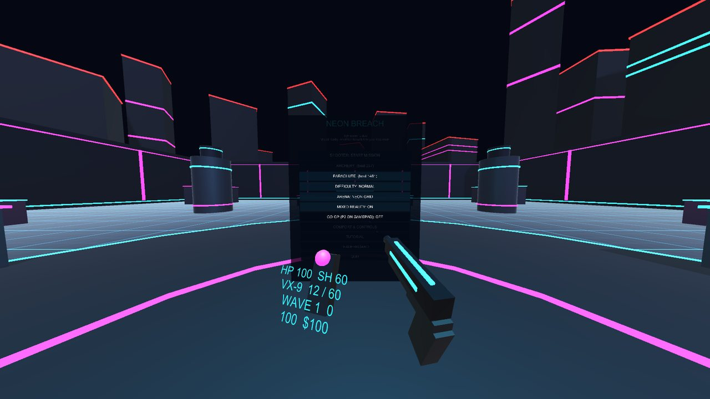
Figure 5.5 – VR main menu after the pointer and trigger switched MIXED REALITY to ON (OpenXR Mock Runtime).QQMK0116QQ
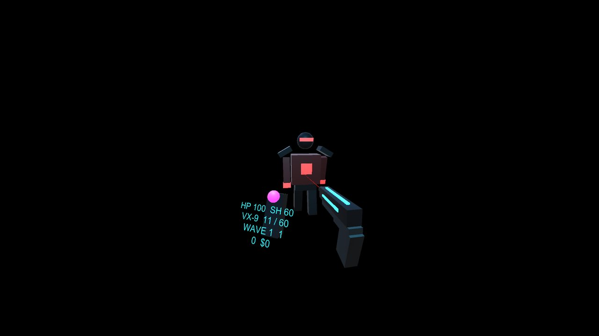
Figure 5.6 – MR mode running: the arena is hidden and the camera clears to transparent black; an enemy 2.5 m away inside the registered room, with the tracked weapon and wrist display. On a Quest, the black region shows the passthrough camera image.QQMK0117QQ
5.9 Haptic FeedbackQQMK0118QQ
Haptics sends impulses through InputDevice.SendHapticImpulse after checking HapticCapabilities.supportsImpulse, which works with any OpenXR controller; gamepads get matching low/high-frequency rumble. Amplitude and duration are derived from game data. A shot pulses the gun hand with a strength that grows with the weapon's recoil; damage pulses both hands in proportion to the damage; explosions rumble according to their distance.
Listing 5.9 – Haptics.PulseXR and Haptics.OnShot (Assets/Scripts/Core/Haptics.cs, lines 30-37,69-75)QQMK0119QQ
public static void PulseXR(XRNode node, float amplitude, float duration)
{
if (!GameSettings.Haptics) return;
InputDevice d = InputDevices.GetDeviceAtXRNode(node);
if (!d.isValid) return;
HapticCapabilities caps;
if (d.TryGetHapticCapabilities(out caps) && !caps.supportsImpulse) return;
d.SendHapticImpulse(0u, Mathf.Clamp01(amplitude), Mathf.Max(0.01f, duration));
// ...
public static void OnShot(PlayerController p, WeaponStats st)
{
if (p == null) return;
float strength = Mathf.Clamp01(0.25f + st.recoil * 0.09f);
if (p.vr != null && p.vr.Active) PulseXR(XRNode.RightHand, strength, 0.04f + st.recoil * 0.008f);
if (p.gamepadIndex >= 0) Rumble(p.gamepadIndex, strength * 0.3f, strength * 0.6f, 0.07f);
}
5.10 World-Space VR User InterfaceQQMK0120QQ
Screen-space overlays do not work in a headset, so the VR interface consists of world-space objects. VRMenuDriver decides which page to show for the current game state: main, pause, shop, game over, comfort and controls, switch mode, or leaderboard. VRMenu places the panel 1.6 m in front of the head, 0.1 m below eye height, and selects rows with a ray from the right hand (Listing 5.10). A LineRenderer draws the ray and a cursor marks the hit point; the hovered row is highlighted; the right trigger, the A button or a right-hand pinch clicks; and every click sends a short haptic pulse. During play, a TextMesh on the left wrist shows health, shield, weapon and ammunition, wave and score. Each mini-game can override this text (the archery round and wind, the parachute altitude and distance to the pad).
Listing 5.10 – VRMenu.LateUpdate – hand-ray selection, hover highlight and click with haptic confirmation (Assets/Scripts/VR/VRMenu.cs, lines 193-226)QQMK0121QQ
Transform hand = rig.RightHand;
Vector3 origin = hand.position;
Vector3 dir = hand.forward;
Vector3 end = origin + dir * 3f;
hover = -1;
RaycastHit hit;
if (Physics.Raycast(origin, dir, out hit, 6f, 1 << Layers.UI, QueryTriggerInteraction.Collide))
{
end = hit.point;
for (int i = 0; i < rows.Count && i < items.Count; i++)
if (rows[i].go == hit.collider.gameObject) { hover = i; break; }
}
if (!pointer.gameObject.activeSelf) pointer.gameObject.SetActive(true);
pointer.SetPosition(0, origin);
pointer.SetPosition(1, end);
cursor.gameObject.SetActive(hover >= 0);
cursor.position = end;
for (int i = 0; i < rows.Count && i < items.Count; i++)
rows[i].bg.sharedMaterial = i == hover ? rowHoverMat : rowMat;
// click: right trigger / A button / right-hand pinch (or left trigger if there is no right controller)
InputDevice R = InputDevices.GetDeviceAtXRNode(XRNode.RightHand);
InputDevice L = InputDevices.GetDeviceAtXRNode(XRNode.LeftHand);
bool click = Pressed(R, CommonUsages.triggerButton) || Pressed(R, CommonUsages.primaryButton) ||
(!R.isValid && Pressed(L, CommonUsages.triggerButton)) ||
(rig.Hands != null && rig.Hands.Right.pinch);
if (click && !prevClick && hover >= 0 && hover < items.Count)
{
Sfx.Play2D(SfxId.Click, 0.8f);
Haptics.PulseXR(XRNode.RightHand, 0.3f, 0.03f);
System.Action a = items[hover].action;
if (a != null) a();
}
prevClick = click;
5.11 Desktop and Gamepad Input (Input System)QQMK0122QQ
DesktopInput compiles against both of Unity's input back-ends and addresses keys with KeyCode, so rebinding is stored independently of the back-end. With the Input System package (the project's setting), each KeyCode is translated to an Input System Key. The audit found that the translation assumed contiguous digit keys. In the Input System enum, Digit0 comes afterDigit9 (Digit1 = 41 … Digit9 = 49, Digit0 = 50), so keys 1/2/3 were read as Left Shift, Right Shift and Left Alt. The corrected mapping is shown in Listing 5.11.
Listing 5.11 – DesktopInput.ToKey after the fix (Assets/Scripts/Player/DesktopInput.cs, lines 23-31)QQMK0123QQ
static Key ToKey(KeyCode kc)
{
Key k;
if (keyMap.TryGetValue(kc, out k)) return k;
k = Key.None;
// the Input System's Key enum orders the digits 1..9 then 0 (Digit0 comes after Digit9)
if (kc == KeyCode.Alpha0) k = Key.Digit0;
else if (kc >= KeyCode.Alpha1 && kc <= KeyCode.Alpha9) k = Key.Digit1 + (kc - KeyCode.Alpha1);
else if (kc >= KeyCode.Keypad0 && kc <= KeyCode.Keypad9) k = Key.Numpad0 + (kc - KeyCode.Keypad0);
5.12 End-to-End VR Verification with the OpenXR Mock RuntimeQQMK0124QQ
No physical headset was available during the ESE preparation. Rather than leave the VR code compile-checked only, the team verified it with the OpenXR Mock Runtime, a simulated OpenXR runtime that ships with Unity's OpenXR plug-in [13]. It runs the real OpenXR loader, session and action system without hardware. Together with the conformance-automation extension (XR_EXT_conformance_automation), test code can set controller poses and button states inside the runtime. Those values then reach the game through exactly the same path a real headset uses: the OpenXR action system, Unity's XR input subsystem, InputDevices, and finally VRRig.
5.12.1 Method
Temporarily enabled the Mock Runtime, Conformance Automation and Khronos Simple Controller features for Standalone, and entered Play mode in the NeonBreach scene.
Confirmed that the OpenXR session reached the Focused state and that Unity reported a head device and left and right controllers.
Set the head pose with MockRuntime.SetSpace(View, …) and the controller grip and aim poses with ConformanceAutomationSetPose; pressed buttons with ConformanceAutomationSetBool, SetFloat and SetVec2.
Subscribed to MockRuntime.onScriptEvent to count the haptic impulses that the game sent to the runtime.
Rendered the tracked camera view to 1600×900 images and read back game state with the Unity CLI.
Disabled the three test features again afterwards, so the shipped configuration contains only the 7 production features.
These steps were driven from the command line through the Unity CLI's script eval, not added to the game code. Appendix A lists the calls used.
5.12.2 Results
Table 5.4 – Results of the OpenXR Mock Runtime verification (22 Nov 2026)QQMK0125QQ
#
Check
Observed result
Status
1
OpenXR session and devices
Loader OpenXRLoader; session state Focused; devices "Head Tracking – OpenXR" [HeadMounted, TrackedDevice] and left/right controllers (the Mock Runtime emulates the first bound profile, HTC Vive)
VRRig.HeadsetPresent = true, GameManager.VrActive = true; desktop menu shows the MR toggle (Figure 5.4)
Pass
4
Pose registration
Right grip set to (0.20, −0.35, 0.35) m in tracking space → read back exactly by InputDevices → RightHand world position (0.20, 1.30, 0.35) m (Chapter 6)
Pass
5
VR menu pointer
Hand ray hit row 0 "SHOOTER: START MISSION" (hover = 0); the trigger click started the mission (state Playing)
Pass
6
Firing with the tracked weapon
4 trigger presses aimed at the nearest enemy: 5 shots fired, 3 hits, 1 kill, score 100; the wrist display updated (ammo 7 → 6)
Pass
7
Haptics
The runtime received 2 impulses for the menu click, 6 after the shots, and 78 after the archery draw and release
Pass
8
Locomotion + comfort vignette
Left stick forward: speed 4.13 m/s, moved 7.17 m, vignette visible with amount 0.64; after release, amount returned to 0
Pass
9
Snap turn
Right stick fully deflected: body yaw changed by 45° (0° → 315°) in one step
Pass
10
Mixed-reality mode
Toggled with the VR pointer; MixedReality.Active = true; clear flags SolidColor with alpha 0; fog off; room 3.50 × 3.50 m (fallback, as the Mock Runtime provides no boundary); 4 walls; 12 spawn points; NavMesh rebuilt; enemy spawned inside the room
Pass (logic)
11
VR archery
The bow follows the tracked right hand; the trigger drew it to 91 %; release hit the 20 m target for +10; the wrist display showed the round, arrows and wind
Pass
12
VR parachute
First-person plane-door view, world-space "SKYDIVE" banner, wrist altimeter (ALT 2,999 m, PAD 1,192 m, RINGS 0/12)
Pass
13
Mode switching in VR
Shooter → Archery → Parachute → Shooter with VR active: 0 warnings and 0 errors in the console (after the FOV fix)
Pass
14
Hand tracking
No XRHandSubsystem is created by the Mock Runtime (it has no hand-tracking extension); gesture code is not exercised
Needs hardware
15
Passthrough camera feed
ARSession.state = None: the Mock Runtime has no camera; the passthrough image needs a Quest
Needs hardware
(a) World-space main menu, hand ray on "SHOOTER: START MISSION"(b) Pistol in the tracked right hand, laser sight on an enemy, wrist display(c) Stick locomotion at 4.13 m/s with the tunnelling vignette(d) VR archery: bow at full draw in the tracked hand, wrist shows round, arrows and wind
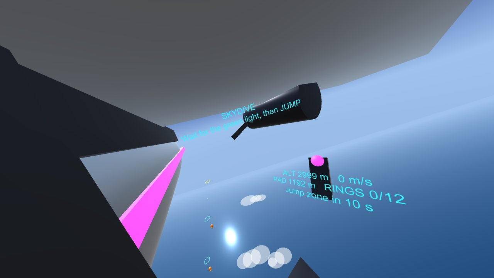
(e) VR parachute: plane door, world-space banner, wrist altimeter(f) After a 45° snap turn: enemies that were to the side are now ahead
Figure 5.7 – Frames rendered from the tracked head pose during the Mock Runtime session. All content, poses and interactions are the real game responding to OpenXR input; the only simulated part is the device itself.QQMK0126QQ
What this verification does and does not prove. It proves that the XR configuration is valid, that the OpenXR session starts, that tracked poses and controller input flow through the action system into gameplay, and that the VR rig, menus, comfort features, haptics, MR registration logic and all three modes work in VR. It cannot measure on-device frame rate, lens distortion, real tracking quality, hand-tracking gestures or the passthrough image; those remain hardware tests (Chapter 10).
The tracking pipeline from the OpenXR runtime to Unity transforms (Figure 6.1) and the handedness conversion, taken from the OpenXR plug-in source (Listing 6.1).
The registration chain written as an equation (6.2) and checked numerically with measured poses (Table 6.1).
Height calibration, room-scale head following and snap turns about the head, with the source and the geometry.
Mixed-reality spatial understanding: the boundary polygon becomes walls, spawn points and a NavMesh (Figure 6.2, Listing 6.6).
Collision detection: physics layers, the collision matrix and every spatial query the game performs (Table 6.3, Table 6.4).
6.1 Tracking PipelineQQMK0128QQ
NEON BREACH tracks three body parts in VR: the head (centre eye) and the left and right hands. Each hand is tracked either as a controller or as an articulated hand skeleton. The headset's tracking system estimates poses in its own tracking space. OpenXR reports them relative to the application's reference space, Unity converts them into its coordinate system, and the game maps them into the virtual world (Figure 6.1).
flowchart LR
S["Headset sensors cameras + IMU (inside-out SLAM/VIO)"] --> RT["OpenXR runtime poses in STAGE / LOCAL space right-handed, -Z forward"]
RT --> UX["Unity XR input subsystem converts to left-handed, +Z forward"]
UX --> ID["InputDevices devicePosition, deviceRotation, isTracked (Head, LeftHand, RightHand)"]
UX --> XH["XRHandSubsystem 26 joint poses per hand"]
ID --> TR["VRRig.Track() + height offset"]
XH --> HT["HandTracking aim pose, gestures"]
TR --> TF["Transforms under CameraPivot Main Camera, RightHand, LeftHand"]
HT --> TF
TF --> W["World space via Player and CameraPivot"]
Figure 6.1 – Tracking pipeline: from sensor data to the poses of the camera and hands in the game world.QQMK0129QQ
6.2 Coordinate Systems and HandednessQQMK0130QQ
OpenXR uses a right-handed coordinate system with +X right, +Y up and −Z forward. Unity uses a left-handed system with +X right, +Y up and +Z forward. Converting between them mirrors the Z axis. For positions this negates z; for rotation quaternions, mirroring one axis negates the quaternion components of the two other axes (Listing 6.1):
pU = (x, y, −z) qU = (−qx, −qy, qz, qw)(6.1)The mapping is its own inverse, so the same formula converts Unity to OpenXR. Unity's OpenXR plug-in applies it in the XrVector3f and XrQuaternionf constructors.
Listing 6.1 – Unity-to-OpenXR position conversion in the OpenXR plug-in (Library/PackageCache/com.unity.xr.openxr@58837b2992e0/Runtime/NativeTypes/Core/XrVector3f.cs, lines 52-57)QQMK0131QQ
public XrVector3f(Vector3 value)
{
X = value.x;
Y = value.y;
Z = -value.z;
}
Listing 6.2 – Unity-to-OpenXR rotation conversion in the OpenXR plug-in (Library/PackageCache/com.unity.xr.openxr@58837b2992e0/Runtime/NativeTypes/Core/XrQuaternionf.cs, lines 59-65)QQMK0132QQ
public XrQuaternionf(Quaternion quaternion)
{
X = -quaternion.x;
Y = -quaternion.y;
Z = quaternion.z;
W = quaternion.w;
}
This convention mattered in practice. During verification, a 15° downward head pitch was first converted by hand with Eq. 6.1 before it was passed to the Mock Runtime's raw SetSpace call. Unity reported it back as 345°, a 15° upward pitch, which showed that the call already performs the conversion, so it had been applied twice. Passing the Unity-space rotation directly gave exactly 15.0°. The conformance-automation API also converts internally, and the right-hand pose set through it was read back unchanged (Section 5.12).
6.2.1 Tracking origin modes
OpenXR offers a LOCAL space (origin at the initial head pose; Unity's Device mode) and a STAGE space (origin on the floor at the centre of the play area; Unity's Floor mode). With Floor origin a standing user's head is reported at about 1.6–1.8 m; with Device origin it is near 0. The rig handles both with the height calibration in Section 6.4. During verification the input subsystem reported origin mode Floor.
6.3 Transform Hierarchy and the Registration ChainQQMK0133QQ
Registration means placing tracked objects at the correct place in the virtual world. NEON BREACH registers the tracking space to the world through a fixed chain of transforms (Figure 4.8):
xworld = TPlayer(p, ψ) · TCameraPivot(o) · ( xtrack + h ŷ )(6.2)TPlayer: the player's world position p and yaw ψ (moved by locomotion, snap turns and the CharacterController); TCameraPivot: the tracking-space origin o inside the player (shifted by room-scale compensation); xtrack: the device pose reported by OpenXR; h: the calibrated height offset; ŷ: the up vector.
Listing 6.3 – VRRig.ApplyPose and VRRig.Track – applying tracked poses with height calibration (Assets/Scripts/VR/VRRig.cs, lines 361-396)QQMK0134QQ
void ApplyPose(Transform t, Pose trackingPose)
{
t.localPosition = trackingPose.position + Vector3.up * heightOffset;
t.localRotation = trackingPose.rotation;
}
bool Track(XRNode node, Transform t, bool calibrate)
{
InputDevice d = InputDevices.GetDeviceAtXRNode(node);
Vector3 pos;
Quaternion rot;
if (!d.isValid) return false;
bool tracked;
if (d.TryGetFeatureValue(CommonUsages.isTracked, out tracked) && !tracked && !calibrate) return false;
if (!d.TryGetFeatureValue(CommonUsages.devicePosition, out pos)) return false;
if (!d.TryGetFeatureValue(CommonUsages.deviceRotation, out rot)) return false;
if (calibrate && !calibrated)
{
calibrated = true;
calibratedSeated = GameSettings.Seated;
if (GameSettings.Seated)
{
// seated: lift the view to standing eye height so cover and enemies line up
heightOffset = Mathf.Max(0f, 1.62f - pos.y);
}
else
{
// headsets that track relative to the device (not the floor) report a head height near zero
heightOffset = pos.y < 0.7f ? 1.6f : 0f;
}
}
t.localPosition = pos + Vector3.up * heightOffset;
t.localRotation = rot;
return true;
}
The chain was checked with known inputs during the Mock Runtime session. The Player object stood at (0, 0.05, 0) (its saved position, Figure 4.12), the head was reported at the tracking-space origin, and the first calibration therefore chose h = 1.6 m. Table 6.1 compares the values predicted by Equation 6.2 with the values the game produced.
Table 6.1 – Registration check: injected tracking-space poses, predicted and measured world positionsQQMK0135QQ
A tracking-space height of zero means different things on different runtimes, and seated players need their view lifted to standing height so that cover and enemies line up. On the first valid head sample after start-up, after a recenter, or after the Seated option changes, VRRig.Track computes the offset h:
h = max(0, 1.62 − yhead) (seated) h = 1.6 if yhead < 0.7 m, otherwise 0 (standing)(6.3)The standing rule detects device-relative tracking (head near zero) and lifts it to a typical eye height; a floor-relative headset is left unchanged. Recenter clears the calibration and re-centres the player under the head.
6.5 Room-Scale Head FollowingQQMK0137QQ
When the player physically walks, the head moves away from the body collider. If nothing corrected this, enemies would aim at the wrong place and walls would not stop the player. FollowHead (Listing 6.4) moves the CharacterController towards the head's horizontal position through CharacterController.Move, which respects walls, and shifts the camera pivot back by the distance actually moved, so that the camera does not jump.
Δ = projXZ(pcamera − pbody), m = CC.Move(Δ), o ← o − projXZ(m)(6.4)If |Δ| < 2 cm nothing happens, which filters out head sway. If a wall blocks the move, m is shorter than Δ, and the body stays at the wall.
Listing 6.4 – PlayerController.FollowHead – keeping the collision capsule under the tracked head (Assets/Scripts/Player/PlayerController.cs, lines 570-585)QQMK0138QQ
/// <summary>/// VR room-scale: when the player physically walks, move the collision capsule under the head (and shift the/// tracking origin back), so enemies, bullets and pickups react to where the player really is./// </summary>
void FollowHead()
{
if (cam == null || cameraPivot == null) return;
Vector3 delta = cam.transform.position - transform.position;
delta.y = 0f;
if (delta.sqrMagnitude < 0.0004f) return;
Vector3 before = transform.position;
cc.Move(delta);
Vector3 moved = transform.position - before;
moved.y = 0f;
cameraPivot.position -= moved;
}
6.6 Turning about the HeadQQMK0139QQ
A snap or smooth turn rotates the player object about its own origin. In room-scale play the head is usually not above that origin, so rotating the body would swing the view sideways. That is disorienting and a known sickness trigger. The rig measures the head's horizontal displacement caused by the rotation and cancels it by moving the pivot (Listing 6.5), so the rotation happens about the head:
d = projXZ( Ry(Δψ) r − r ), o ← o − d(6.5)r: the vector from the body origin to the head; Δψ: the turn angle (45° by default for snap turns). The Mock Runtime test showed a single 45° step (0° → 315°).
Listing 6.5 – PlayerController.DoLook (VR branch) – snap or smooth turn about the head (Assets/Scripts/Player/PlayerController.cs, lines 220-235)QQMK0140QQ
void DoLook(bool vrOn)
{
if (vrOn)
{
// snap or smooth turn (VRRig fills snapTurn with the degrees for this frame)
if (Mathf.Abs(Inp.snapTurn) > 0.001f)
{
// rotate around the head, not the body origin, so the view does not swing sideways
Vector3 head = cam.transform.position;
yaw += Inp.snapTurn;
transform.rotation = Quaternion.Euler(0f, yaw, 0f);
Vector3 drift = cam.transform.position - head;
drift.y = 0f;
cameraPivot.position -= drift;
}
return;
6.7 Hand Pose and Gesture GeometryQQMK0141QQ
For controller-free play, HandTracking derives an aim pose and two gestures from the joint positions (Listing 5.6). Table 6.2 lists the thresholds. The pinch has two thresholds (hysteresis), so a pinch is a small state machine: it starts below 2.0 cm and ends only above 3.5 cm. Fluctuations between the two thresholds therefore cannot produce repeated clicks.
Table 6.2 – Hand-tracking geometry and thresholdsQQMK0142QQ
Quantity
Definition
Threshold / value
Pinch distance
|pThumbTip − pIndexTip|
Pinch on < 0.020 m; off > 0.035 m
Open palm
Each fingertip's distance from the palm joint, and the thumb spread
Index > 0.075 m, middle > 0.08 m, ring > 0.075 m, little > 0.06 m, pinch distance > 0.06 m
Palm trigger
Open palm held continuously, latched until the hand closes
≥ 0.4 s
Aim pose position
Midpoint of the palm and the middle proximal knuckle
–
Aim pose forward
LookRotation(pknuckle − pwrist, up)
The weapon follows the back of the hand
6.8 Mixed Reality: Spatial Understanding of the RoomQQMK0143QQ
In MR mode the virtual enemies must move inside the user's real room. The game builds its spatial model of the room from the play-area boundary that the user drew during headset set-up. RoomPolygon queries every running XRInputSubsystem for TryGetBoundaryPoints. If a polygon with at least three points is returned, it is used (UsedRealBoundary = true); otherwise a 3.5 × 3.5 m square is used as a fallback. BuildRoom (Listing 6.6) then:
computes the centroid c of the polygon;
adds an invisible floor collider (40 × 1 × 40 m, top at y = 0) on the Environment layer;
for every edge from a to b of length L ≥ 5 cm, adds an invisible wall collider (0.3 × 3 × (L + 0.3) m) at the edge midpoint, pushed 0.15 m outward along normalise(mid − c) and oriented along the edge;
places N = 12 spawn points at equal arc-length intervals dk = P·k/N around the perimeter P, each pulled towards the centroid by min(0.5 m, 0.4·|c − p|);
marks the NavMesh as stale, so that ArenaManager rebuilds it from the new colliders and enemies plan paths inside the real room.
Figure 6.2 – The room model produced by BuildRoom for the 3.5 × 3.5 m fallback room recorded during verification, computed with the same algorithm: boundary (dashed), wall colliders (grey) and spawn points 0–11 (magenta). On a Quest the user's own boundary polygon replaces the square.QQMK0144QQ
Listing 6.6 – MixedReality.RoomPolygon and BuildRoom – boundary query, wall colliders and spawn points (Assets/Scripts/VR/MixedReality.cs, lines 105-123,125-194)QQMK0145QQ
/// <summary>Read the guardian / play-area polygon in tracking space (falls back to a 3.5 m square).</summary>
static List<Vector3> RoomPolygon()
{
List<Vector3> pts = new List<Vector3>();
List<XRInputSubsystem> subs = new List<XRInputSubsystem>();
SubsystemManager.GetSubsystems(subs);
for (int i = 0; i < subs.Count; i++)
{
if (subs[i] == null || !subs[i].running) continue;
pts.Clear();
if (subs[i].TryGetBoundaryPoints(pts) && pts.Count >= 3) { UsedRealBoundary = true; return pts; }
}
UsedRealBoundary = false;
pts.Clear();
float h = 1.75f;
pts.Add(new Vector3(-h, 0f, -h)); pts.Add(new Vector3(h, 0f, -h));
pts.Add(new Vector3(h, 0f, h)); pts.Add(new Vector3(-h, 0f, h));
return pts;
}
// ...
static void BuildRoom()
{
room = new GameObject("MR Room");
List<Vector3> poly = RoomPolygon();
Vector3 centroid = Vector3.zero;
for (int i = 0; i < poly.Count; i++) centroid += poly[i];
centroid /= poly.Count;
centroid.y = 0f;
// invisible real floor
GameObject floor = new GameObject("RealFloor");
floor.transform.SetParent(room.transform, false);
floor.layer = Layers.Environment;
BoxCollider fc = floor.AddComponent<BoxCollider>();
fc.center = new Vector3(centroid.x, -0.5f, centroid.z);
fc.size = new Vector3(40f, 1f, 40f);
// invisible walls along the boundary
Vector2 min = new Vector2(float.MaxValue, float.MaxValue), max = new Vector2(float.MinValue, float.MinValue);
for (int i = 0; i < poly.Count; i++)
{
Vector3 a = poly[i];
Vector3 b = poly[(i + 1) % poly.Count];
a.y = 0f; b.y = 0f;
min = Vector2.Min(min, new Vector2(a.x, a.z));
max = Vector2.Max(max, new Vector2(a.x, a.z));
Vector3 mid = (a + b) * 0.5f;
Vector3 edge = b - a;
float len = edge.magnitude;
if (len < 0.05f) continue;
Vector3 outward = mid - centroid;
outward.y = 0f;
outward = outward.sqrMagnitude > 0.0001f ? outward.normalized : Vector3.forward;
GameObject w = new GameObject("RealWall" + i);
w.transform.SetParent(room.transform, false);
w.layer = Layers.Environment;
w.transform.position = mid + outward * 0.15f + Vector3.up * 1.5f;
w.transform.rotation = Quaternion.LookRotation(edge.normalized, Vector3.up);
BoxCollider bc = w.AddComponent<BoxCollider>();
bc.size = new Vector3(0.3f, 3f, len + 0.3f);
}
RoomSize = max - min;
// spawn points spread along the boundary, pulled 0.5 m into the room
List<Transform> spawns = new List<Transform>();
float perimeter = 0f;
for (int i = 0; i < poly.Count; i++) perimeter += Vector3.Distance(poly[i], poly[(i + 1) % poly.Count]);
int count = 12;
for (int k = 0; k < count; k++)
{
float d = perimeter * k / count;
for (int i = 0; i < poly.Count; i++)
{
Vector3 a = poly[i], b = poly[(i + 1) % poly.Count];
float len = Vector3.Distance(a, b);
if (d > len) { d -= len; continue; }
Vector3 p = Vector3.Lerp(a, b, len > 0.001f ? d / len : 0f);
p.y = 0f;
Vector3 inward = centroid - p;
inward.y = 0f;
if (inward.sqrMagnitude > 0.0001f) p += inward.normalized * Mathf.Min(0.5f, inward.magnitude * 0.4f);
GameObject s = new GameObject("RoomSpawn" + k);
s.transform.SetParent(room.transform, false);
s.transform.position = p + Vector3.up * 0.05f;
spawns.Add(s.transform);
break;
}
}
SpawnPoints = spawns.ToArray();
}
Measured outcome. In the Mock Runtime session the MR mode produced RoomSize = (3.50, 3.50), 4 wall colliders, 12 spawn points and a rebuilt NavMesh, and the first enemy spawned 2.5 m from the player inside the room (Figure 5.6). The Mock Runtime provides no boundary, so the fallback path was exercised. The real-boundary path uses the same code with the polygon from the headset.
Limitation. The boundary describes the free floor area, not furniture or wall geometry. Scene understanding (Meta's scene model, planes and meshes) would allow enemies to appear behind real furniture; this is listed as future work.
6.9 Collision Detection and Physics LayersQQMK0146QQ
Every body that moves under player or AI control uses a Unity CharacterController capsule (the player: radius 0.35 m, height 1.8 m; enemies: per type, e.g. a grunt has radius 0.4 m and height 1.5 m), whose move-and-slide resolves collisions against static geometry. Gameplay queries use explicit raycasts with layer masks. Table 6.3 lists the layers and Listing 6.7 the runtime collision matrix.
Table 6.3 – Physics layersQQMK0147QQ
Layer
Name
Contents and purpose
5
UI
VR menu rows (hit by the hand ray only)
8
Player
Player CharacterControllers
9
Enemy
Enemy bodies
10
Environment
Arena, range and island geometry; MR floor and walls; the source of the NavMesh
11
FX
Debris and grenades (never collide with actors or other FX)
12
EnemyHead
Head hit boxes (trigger-like: hit only by weapon raycasts)
13 / 14
P1Body / P2Body
Visible player bodies, each hidden from its own camera in split screen
Listing 6.7 – Layer masks and the runtime collision matrix (Assets/Scripts/Core/Layers.cs, lines 21-37)QQMK0148QQ
public static int EnvMask { get { return 1 << Environment; } }
public static int EnemyMask { get { return (1 << Enemy) | (1 << EnemyHead); } }
public static int ShootMask { get { return (1 << Enemy) | (1 << EnemyHead) | (1 << Environment); } }
public static int PlayerShotMask { get { return (1 << Player) | (1 << Environment); } }
/// <summary>Called once at runtime: debris/grenades never collide with actors, heads never collide with anything.</summary>
public static void SetupCollisionMatrix()
{
Physics.IgnoreLayerCollision(FX, Player, true);
Physics.IgnoreLayerCollision(FX, Enemy, true);
Physics.IgnoreLayerCollision(FX, EnemyHead, true);
Physics.IgnoreLayerCollision(FX, FX, true);
Physics.IgnoreLayerCollision(EnemyHead, Player, true);
Physics.IgnoreLayerCollision(EnemyHead, Enemy, true);
Physics.IgnoreLayerCollision(EnemyHead, EnemyHead, true);
Physics.IgnoreLayerCollision(EnemyHead, Environment, true);
}
Table 6.4 – Spatial queries used by the gameQQMK0149QQ
Query
Call and mask
Spatial reasoning performed
Hitscan weapons
Physics.Raycast, ShootMask, range 45–160 m
One ray per pellet inside a cone of half-angle σ (Eq. 6.6); the first hit decides; HitZone multipliers give headshots ×2.4 (most enemies), ×1.8 (tank, drone) or ×1.6 (boss); damage falls off linearly with distance
VR laser sight
Raycast, ShootMask, 30 m
Ends the visible laser at the first surface
VR menu pointer
Raycast, UI layer, 6 m
Selects the menu row under the hand ray
Arrow flight
Up to 8 sub-stepped raycasts per frame, Environment
A swept path (segments of at most 0.75 m) so fast arrows never pass through thin targets; arrows stick at the hit point
Enemy line of sight
Physics.Linecast, EnvMask
Decides whether a gunner fires or flanks, and whether a sniper's perch is valid
Navigation
NavMesh.SamplePosition, CalculatePath
Projects positions onto the NavMesh and plans a corner path, re-planned every 0.3–0.5 s
Parachute altitude
Downward Raycast, 8,000 m, EnvMask
Altitude above ground (AGL) for the deploy window, auto-deploy, flare prompt and landing
Farm Sniper bullets
Swept raycasts per frame
820 m/s bullets with gravity drop and travel time
d = normalise( f + rxright + ryup ), (rx, ry) ~ U(unit disc) · tan σ(6.6)σ is interpolated between the hip spread and the ADS spread by the aim amount (e.g. 2.6° → 0.45° for the rifle) and multiplied by the player's movement state. Each of the scatter cannon's 9 pellets draws its own direction.
NEON BREACH contains no imported 3D models, textures or audio files. A search of the Assets folder finds no FBX, OBJ, Blend, WAV, MP3 or OGG files. All visual and audio content is generated by C# code, either at runtime when a mode starts or by editor builders that run the same code and save the result as Unity assets (Table 7.1). This approach has four benefits for an XR project: no licensing questions, a small repository, worlds that can be rebuilt or swapped at runtime (which MR mode needs) and complete control over polygon counts.
Table 7.1 – Asset inventory of the project and how each asset type is producedQQMK0154QQ
Saved by builders from the cached generators (Mats, RatMats, FarmMats): 17 shared, 78 Rat Shooter, 54 Farm Sniper
Textures (.png)
51
Drawn into Texture2D by ProcTex, CartoonTex and FarmTextures and saved by the builders (neon grid, ground, bark, crops, labels, UI icons)
Mesh / NavMesh assets
4
RatMeshes.asset (19.8 MB) and FarmMeshes.asset (5.1 MB) hold generated meshes; two baked NavMeshes for mice and rats
Prefabs
6
Five cartoon-mouse variants and the cartoon rifle, saved by RatShooterSceneBuilder
Scenes
3
Built and saved by SceneBuilder, FarmSceneBuilder and RatShooterSceneBuilder
Sounds and music
–
Synthesised into AudioClips at start-up by AudioSynth, RatSynth and FarmAudioSynth (gunshots, explosions, footsteps, wind, birds, music loops)
7.2 Neon Arenas (Shooter)QQMK0155QQ
The two shooter arenas are built by WorldBuilder and ArenaManager from primitives with emissive neon trims. Neon Grid is an open square arena with a central raised platform, pillars, crates of varying height as cover, corner towers and a city skyline beyond the walls. Foundry is a long industrial hall with a raised platform, ramps, lanes and furnaces. The layout gives every enemy type a role: pillars break the sniper's line of sight, crates force gunners to flank, and the platform rewards high ground. All cover geometry is on the Environment layer, so the runtime NavMesh is built from it automatically.
Figure 7.1 – Neon Grid arena rendered from the saved scene (Editor).QQMK0156QQFigure 7.2 – Plan view: central platform, symmetric cover, pillars and corner towers.QQMK0157QQ
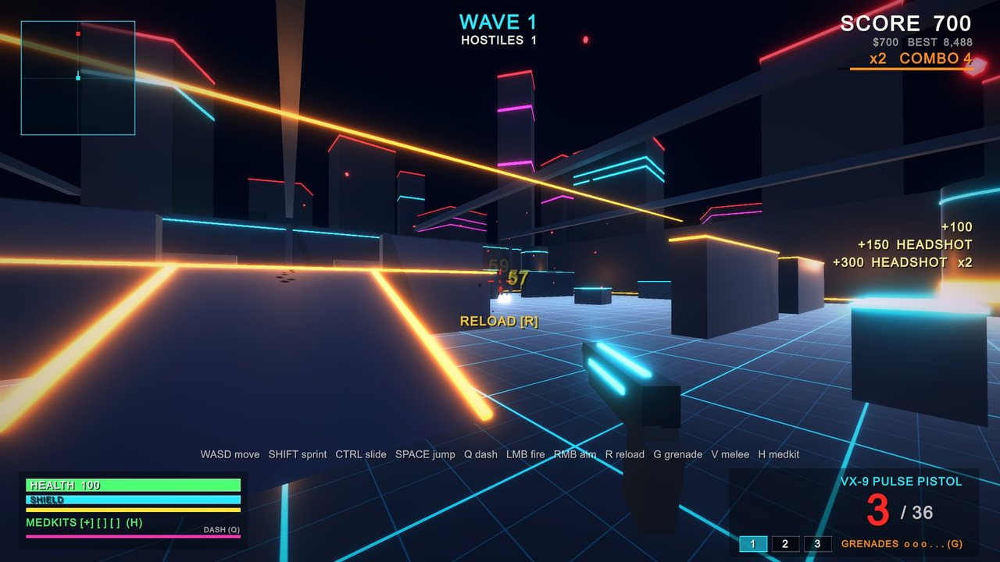
Figure 7.3 – Foundry arena in play.QQMK0158QQ
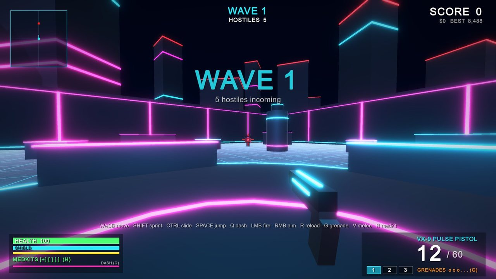
Figure 7.4 – Neon Grid at the start of wave 1, with the player's pistol viewmodel.QQMK0159QQ
7.3 CharactersQQMK0160QQ
Table 7.2 – Characters and how they are modelled and animatedQQMK0161QQ
Character
Model
Animation
Grunt, Gunner, Sniper
Humanoid from boxes, a sphere head with a glowing visor and emissive chest panel; colour per type
Procedural walk (leg swing, body bob), aiming, sniper laser telegraph
Drone
Flying sphere body with a glowing yellow eye and ring, two side pods and a fin
Hover bob, circling orbit, banking
Shield Tank
Heavy humanoid with a translucent frontal energy shield
Slow turning (so it can be flanked); the shield flashes when hit and regenerates after a quiet period
Boss "Overlord"
Large humanoid with a world-space health bar
Fan attack, ground slam, summoning
Player body / skydiver
Torso, head, visor and stripe; the SkydiverRig adds limbs, a jumpsuit and a canopy
Free-fall poses (belly, head-down dive, spread eagle), canopy deployment, landing knee bend and run-out
Cartoon mice (5 variants)
Rounded shapes from Shapes (lathes, rounded boxes, tubes), whiskers, ears and a 12-segment tail
MouseRig: scurrying legs, squash and stretch, wavy tail, sniffing, ear twitches, blinking, poses, a spin-and-dizzy-stars knock-out
Farm rats and the farmer
Low-poly rats; the farmer has a hat, a flannel shirt and a rifle
FarmerAnimator for movement and stance; rats scurry, feed and flee
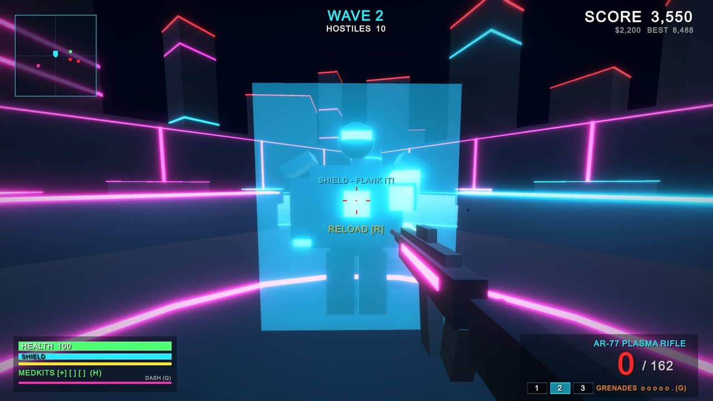
Figure 7.5 – Shield Tank and its energy shieldQQMK0162QQFigure 7.6 – Primitive-built enemies flashing white on hit during the slow-motion power-upQQMK0163QQFigure 7.7 – Cartoon mouse knocked out by a headshotQQMK0164QQ
7.4 Weapons and ToolsQQMK0165QQ
Table 7.3 – Weapon models and their statistics (from WeaponLibrary)QQMK0166QQ
Weapon
Damage
Rate (/s)
Magazine
Reload (s)
Spread hip / ADS (°)
Range (m)
Notes
VX-9 Pulse Pistol
26
5.5
12
1.15
1.2 / 0.15
140
Semi-automatic
AR-77 Plasma Rifle
16
11
30
1.9
2.6 / 0.45
160
Fully automatic
SG-12 Scatter Cannon
11 × 9
1.3
6
0.45 / shell
5.2 / 3.4
45
9 pellets, shell-by-shell reload
The bow (archery) has a string that bends with the draw amount and a nocked arrow. The Rat Shooter's cartoon rifle has gloved hands, flannel sleeves, an animated magazine and bolt, and ejects casings. The Farm Sniper's bolt-action rifle has a working scope; in VR it renders the magnified view to a render texture on the scope lens.
7.5 EnvironmentsQQMK0167QQ
7.5.1 Archery range
A covered booth faces a lane with nine targets: four static targets at 10, 20, 30 and 40 m, three pop-up targets at 15, 25 and 35 m, and two rail targets at 23 m (2.4 m/s) and 37 m (3.2 m/s). Target face radii grow with distance (0.50–1.00 m). Distance signs, glowing lane lines and wind flags that show the current wind complete the range (Figure 7.8).
Figure 7.9 – Zoomed view of the 20 m target in round 3 (wind 6.6 m/s).QQMK0169QQ
7.5.2 Parachute island
The island is a 200 × 200 height-field mesh covering 2.8 × 2.8 km. Its height function combines a fractal Brownian-motion noise, a radial island mask with an angular wobble, and a Gaussian mountain:
d = (r / 950)·[1 + 0.12 sin 3φ + 0.07 sin 5φ + 0.3(Nlow − 0.5)], land = 1 − smoothstep(0.6, 1.0, d)(7.2)
H(x,z) = lerp(−35, 16 + 60·fbm² + 150·e−|(x,z) − m|²/(2·170²), land) − 4(7.3)N is Unity's Perlin noise; r and φ are the polar coordinates of (x, z); m = (−220, 160) is the mountain centre. Within 8–70 m of the landing pad the height blends smoothly to the pad height, so the pad is flat.
A colour map shades beach, grass, rock and snow by height and slope. Then 230 trees are placed in noise-masked forests ("forests, not a carpet"), a 15 m landing pad with a light beacon, 12 rings, coins, drifting balloons and bird flocks are added, together with an ocean plane, clouds and a 32 × 16 segment sky dome. Fog and the sky gradient change with altitude (Figure 7.10).
From the plane at 3,000 mLanding pad and beacon
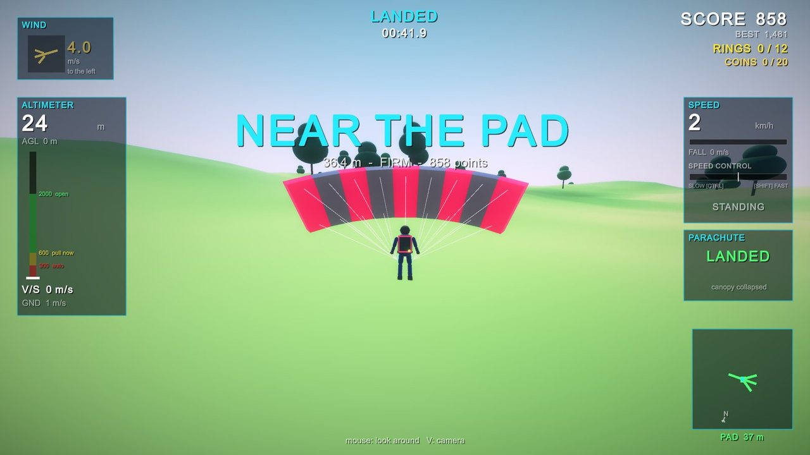
Terrain, trees and canopy at landing
Figure 7.10 – The procedurally generated parachute world at three altitudes.QQMK0170QQ
7.5.3 Rat Shooter farmyard
RatWorldBuilder generates a sunny cartoon farmyard around the porch the player shoots from: rolling hills, a fenced yard with a dirt path, a red barn, a silo, a windpump, trees, a vegetable garden with a scarecrow, corn and pumpkin patches, hay bales, barrels, crates, a trough, a wheelbarrow, sacks, a log pile, a well, bushes, rocks, sunflowers, mouse burrows and bait food. Grass and flowers are grown at load by GrassPlanter, and clouds and butterflies drift through the scene (Figure 7.11).
Figure 7.11 – Rat Shooter farmyard rendered from the saved scene (Editor).QQMK0171QQ
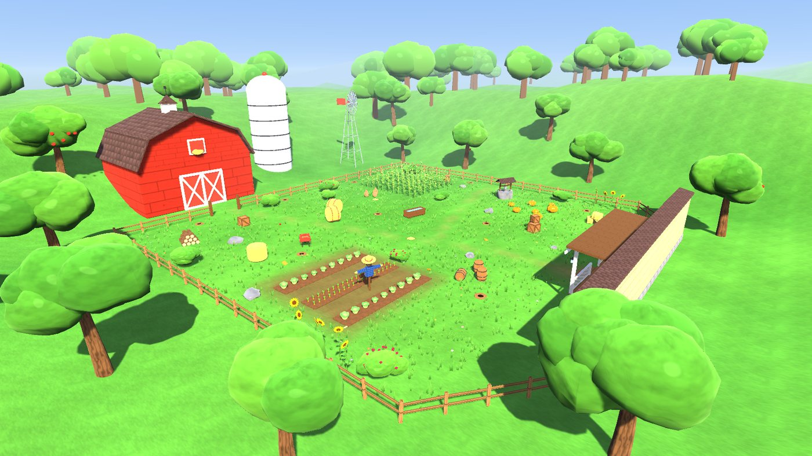
Figure 7.12 – Side view: barn, silo, windpump, garden and the farmhouse porch.QQMK0172QQ
7.5.4 Farm Sniper farm
FarmWorldBuilder creates rolling terrain with a pond, corn, wheat, cabbage and pumpkin fields, a vegetable garden, a farmhouse, a barn, a silo, a watchtower, a chicken coop, a well, a windmill, fences, trees, an orchard, hay bales, a tractor and power poles. Crops and grass are grown from a seed when the scene loads (VegetationPlanter) rather than being saved, which keeps the scene file small (Figure 7.13).
Figure 7.13 – Farm Sniper level (Editor render; crops are planted at runtime).QQMK0173QQ
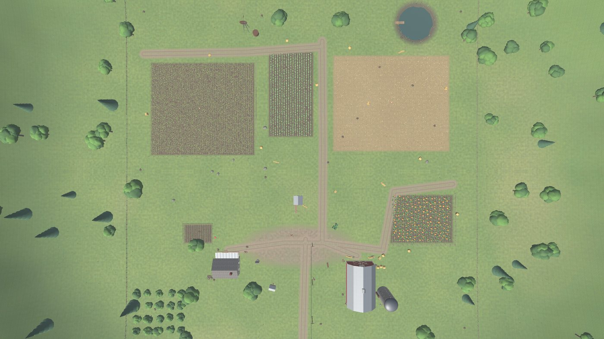
Figure 7.14 – Plan view: fields, roads, pond, farmhouse, barn and silo.QQMK0174QQ
7.6 Materials, Textures and ShadersQQMK0175QQ
Shared materials (Mats). One material per name, created once and cached, using Unity's Standard shader. Neon materials are emissive (cyan, magenta, red, green, orange, white). Every generated material has enableInstancing = true, and the editor script RenderingSettingsGuard keeps instancing on for all saved materials.
Procedural textures (ProcTex). The neon floor grid, target faces, the island colour map, vignette masks and UI icons are drawn pixel by pixel into Texture2D.
RatShooter/Toon shader. A Built-in pipeline toon shader with a soft lighting ramp (softness and offset parameters), a tinted shadow colour, a crisp highlight, rim lighting, vertex colours used as macro colour and ambient occlusion, real sun shadows, and an optional vertex wind sway for grass, corn and flowers. RatSky draws a gradient sky; RatFX is an unlit effects shader.
NB_Vignette. The comfort vignette, drawn on a quad in front of the camera so that it appears in both eyes.
7.6.1 Post-processing pipeline (NB_PostFX)
Because the project uses the Built-in Render Pipeline, it cannot use URP's post-processing volumes. PostFX instead runs a four-pass shader in OnRenderImage: (0) a bloom prefilter with a soft-knee threshold and a 2× downsample, (1) further downsampling into a mip chain, (2) additive tent upsampling, and (3) a composite pass that applies chromatic aberration (only while damaged), adds the bloom, applies exposure, a highlight-only soft clip, contrast, saturation around Rec. 709 luma, lift/gain split-tone grading, a gameplay tint (cold for slow motion, warm for double damage) and a vignette. The soft clip leaves dark and mid tones unchanged and rolls highlights off smoothly:
SoftClip(x) = min(x, 0.8) + e / (1 + 5e), e = max(x − 0.8, 0)(7.4)Applied per colour channel. A full filmic curve such as ACES would lift the shadows in gamma colour space and wash out the neon look, so the shader rolls off only the HDR highlights.
7.7 LightingQQMK0176QQ
The arenas are lit by a directional key light with soft shadows, coloured point lights at the neon features, and the emissive neon materials themselves, which bloom in post-processing. The parachute world uses a bright sun with altitude-dependent fog. The Rat Shooter uses realtime lighting only (no baking) with warm grading. The Farm Sniper sets a 150 m shadow distance with 4 cascades so that distant rats still receive shadows through the scope. In MR mode the arena's directional light keeps lighting the enemies, with shadows switched off.
7.8 Procedural AnimationQQMK0177QQ
The project has no Animator controllers or animation clips. Every motion is computed in code each frame from game state: enemy gaits from their velocity; weapon recoil, sway, bob, the reload sequence and the ADS transition in the viewmodel; the bow's string bend from the draw amount; the skydiver's limbs from body position and speed control; the canopy's inflation from the deploy progress; and the mice's legs, tail, ears, eyes and poses in MouseRig. Procedural animation keeps animations consistent with physics (a faster mouse scurries faster) and avoids asset files.
7.9 Visual EffectsQQMK0178QQ
Table 7.4 – Visual effectsQQMK0179QQ
Effect
Implementation
Muzzle flash and tracers
Flash mesh plus a point light on the muzzle for 45 ms; line-renderer tracers coloured per weapon
Impacts and decals
FX.Impact particles and decals oriented to the surface normal; Rat Shooter impacts vary by surface (RatSurface: grass, dirt, wood, metal, hay, leaves, stone, water)
Explosions
Grenade blast with light flash, debris on the FX layer, camera shake on the desktop and rumble in VR
Shields, lasers and telegraphs
Translucent tank shield; the sniper's green aiming laser shown for 1.4 s before it fires
Cartoon effects
Poof clouds, X-eyes, dizzy stars, confetti on victory, ejected shell casings, "!" alert bubbles over startled mice
Screen effects
Bloom, chromatic aberration on damage, slow-motion and double-damage tints, low-health desaturation; the VR comfort vignette and snap-turn blink
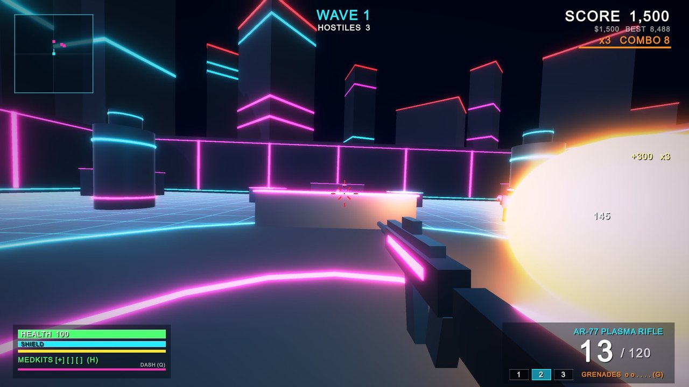
Figure 7.15 – Grenade explosionQQMK0180QQFigure 7.16 – Slow-motion tint and the power-up bannerQQMK0181QQ
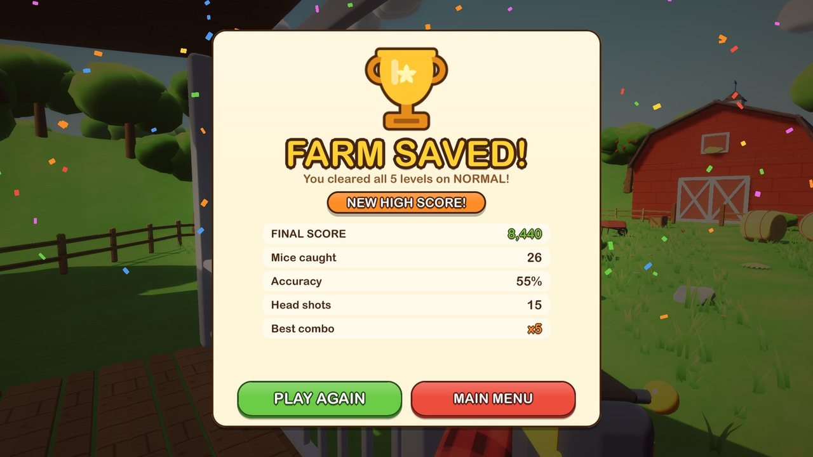
Figure 7.17 – Victory screen with confettiQQMK0182QQ
7.10 Asset Integration PipelineQQMK0183QQ
Procedural content is integrated into Unity in two ways. Content that must exist in the saved scene (the shooter arena, the Rat Shooter farmyard and the Farm Sniper farm) is produced by editor builders available under the Neon Breach menu. Each builder runs the generator, bakes the NavMesh, saves the meshes, textures and materials under the game's Generated/ folder and its prefabs under Prefabs/, writes the scene and registers it in Build Settings. Content that changes during play (the archery range, the parachute island, the MR room, enemies and effects) is generated at runtime when a mode starts and destroyed by Teardown when it ends. ProjectBootstrap runs the main builder automatically the first time the project is opened.
7.11 OptimisationQQMK0184QQ
Optimisations were made only when a measurement justified them, using the in-game F4 performance panel, which reads Unity's profiler counters (draw calls, SetPass calls, batches, shadow casters, triangles, main-thread time) through ProfilerRecorder. Table 7.5 lists the changes that were measured with the same camera pose at Ultra quality during development; Table 7.6 gives the statistics measured on 22 Nov 2026 for this report.
Table 7.5 – Measured optimisations (same camera pose, Ultra quality)QQMK0185QQ
Change
Scene
Metric
Before
After
Decision
GPU instancing on all generated materials + no shadows from emissive neon parts
Shooter arena
Shadow casters
277
95
Kept (Mats, Perf.NeonNoShadows)
Shooter arena
Triangles
16.7 k
12.7 k
Archery range
Shadow casters
441
214
Archery range
Draw calls
772
691
Runtime static batching
Shooter arena
Draw calls
321
453
Rejected: batched meshes lose instancing and are still drawn once per light (Perf.BatchingEnabled = false)
Archery range
Draw calls
691
812
Dynamic batching
Arena / parachute
Dynamic batches
0
–
Disabled: it produced no batches, while instancing produced 165 instanced batches (652 draws) in the arena
Other measures already in the code: a pool of 32 audio sources, one cached material and texture per name, a NavMesh built only from colliders on the Environment layer, an IMGUI HUD with no canvases to rebuild, stripping of colliders from decorative primitives (Util.Part) and noise masks that keep vegetation density bounded.
Table 7.6 – Rendering statistics per scene, measured on 22 Nov 2026 (Unity Editor, Play mode, 1920×1080, Ultra quality)QQMK0186QQ
Scene / mode
Draw calls
SetPass
Instanced batches (draws)
Shadow casters
Triangles
Shooter – Neon Grid (combat)
319
307
87 (279)
95
12.7 k
Shooter – Foundry
400
394
107 (386)
160
11.2 k
Archery range
701
684
168 (654)
214
25.1 k
Parachute (in the plane)
266
248
49 (112)
0
207.4 k
Rat Shooter (level 1)
999
369
823 (1,153)
543
1.38 M
Farm Sniper (mission)
932
330
857 (2,099)
751
2.27 M
The shooter arena's figures (95 shadow casters, 12.7 k triangles) reproduce the optimised values exactly. The two cartoon games draw far more triangles because their rounded meshes and planted grass are much denser, but GPU instancing keeps their SetPass calls in the same range as the arenas. Frame times are reported in Chapter 12.
Chapter 8Interaction, UI/UX & User ExperienceQQMK0187QQ Rubric Criterion 7 of 10
Evidence in this chapter
Main menu, game-mode selection and the complete navigation flow between the four game modes (Figure 8.1, Figure 8.4).
The gameplay HUD of every mode – Shooter, Archery, Parachute and Rat Shooter – with an element-by-element description (Table 8.2).
UI/UX polish added in the final pass (27 Nov 2026): animated hover feedback on all neon buttons, animated mode cards, fade transitions on every mode start and return to menu, a fading results screen and the archery trajectory guide (Table 1.3).
Pause, results, game-over, tutorial, help and settings screens; controls for keyboard/mouse, gamepad and VR controllers (Table 8.3); a heuristic usability review (Table 8.4).
8.1 Design Goals and Implementation ApproachQQMK0188QQ
The user interface was designed around four goals: (1) a single consistent neon identity (dark translucent panels, cyan borders, white bold text, magenta and yellow accents) across all modes; (2) immediate readability during fast action, so that health, ammunition, score and objectives are always at the screen edges and never over the crosshair; (3) discoverability, so that every screen shows the keys it accepts; and (4) device independence, so that the same menus work with a mouse, a gamepad and a VR laser pointer.
The desktop interface is drawn with Unity's immediate-mode GUI (IMGUI) by one partial class, HUD, split over HUD.cs, HUDMenus.cs, HUDGameOver.cs, HUDShop.cs and HUDModes.cs. All layout is written in a 1920×1080 reference space and scaled by S = screen height / 1080, so the layout is identical at every resolution and in each half of split-screen co-op. The Rat Shooter scene has its own cartoon-styled HUD (RatHUD) with the same structure. In VR the same menu content is shown on a world-space panel operated with a controller laser pointer (Section 8.11).
8.2 Main Menu and Game-Mode SelectionQQMK0189QQ
The main menu (Figure 8.1) is the hub of the application. The left column lists the four game modes with each mode's all-time best score, followed by the tutorial, leaderboard and statistics, settings, help and quit. The right panel is the mission set-up for the shooter (solo or split-screen co-op, difficulty, arena and call-sign). Behind the menu the camera slowly orbits the live arena, so the menu already shows the game world.
Figure 8.1 – Main menu captured on 27 Nov 2026 after the polish pass: four game-mode buttons with best scores (Rat Shooter in its gold accent), tutorial, leaderboard, settings, help and quit; mission set-up panel on the right.QQMK0190QQ
Table 8.1 – Main-menu entries and what each one doesQQMK0191QQ
Entry
Action
SHOOTER – START MISSION
Starts the wave shooter with the set-up chosen on the right (or the interactive tutorial on the very first run)
ARCHERY · best n
Builds the archery range and starts round 1 of 3 (10 arrows each)
PARACHUTE · best n
Builds the island and places the player in the aircraft door at 3,000 m
RAT SHOOTER · best n
Fades out and loads the separate RatShooter.unity scene through SceneFader
TUTORIAL
Eight guided steps: look, move, sprint and jump, shoot targets, reload, aim down sights, grenade, power-ups
LEADERBOARD & STATS
Local leaderboard and lifetime statistics, with a reset option protected by confirmation
SETTINGS
Six tabs: Gameplay, Graphics, Audio, Controls (key rebinding), VR Comfort and Language
HOW TO PLAY / QUIT
Controls and rules of every mode / exits the application
From inside any mode, the pause menu's SWITCH MODE panel and the results screen show the three in-scene modes as mode cards (name and hot-key, a short description and the best score), and the F5, F6 and F7 keys switch directly between Shooter, Archery and Parachute.
8.2.1 Button and mode-card feedback added in the polish pass
Before the polish pass a neon button only changed colour on hover. All buttons now share the hover language that the Rat Shooter button already used: a soft pulsing outer glow (two rings whose alpha follows a 5 rad/s sine), a white left accent bar and a white label; a selected button keeps a cyan accent bar. Each mode card now sits on its own panel that brightens and pulses its border while the pointer is over it, so the card behaves as one large target rather than a small button with loose text under it. Because the change is inside the shared Button method, every menu (main, pause, settings, results, shop) received it at once without layout changes (Listing 8.1).
Listing 8.1 – Shared neon button with the new hover glow and accent bar (Assets/Scripts/UI/HUD.cs, lines 228-252)QQMK0192QQ
bool Button(Rect r, string text, bool enabled = true, int size = 30, bool selected = false)
{
bool hover = enabled && r.Contains(Event.current.mousePosition);
Color bg = !enabled ? new Color(0.03f, 0.05f, 0.08f, 0.6f) : (hover ? new Color(0.1f, 0.55f, 0.65f, 0.85f) : (selected ? new Color(0.06f, 0.3f, 0.38f, 0.9f) : new Color(0.03f, 0.07f, 0.12f, 0.85f)));
if (hover)
{
// soft pulsing outer glow + left accent bar: the same hover language as the Rat Shooter button
float pulse = 0.5f + 0.5f * Mathf.Sin(Time.unscaledTime * 5f);
for (int i = 2; i >= 1; i--)
{
float g = i * 3f * S;
Border(new Rect(r.x - g, r.y - g, r.width + g * 2f, r.height + g * 2f), new Color(Cyan.r, Cyan.g, Cyan.b, (0.1f + 0.12f * pulse) / i), 2f);
}
}
Fill(r, bg);
if (hover || selected) Fill(new Rect(r.x, r.y, 6f * S, r.height), hover ? Color.white : Cyan);
Border(r, hover || selected ? Cyan : new Color(0.15f, 0.5f, 0.6f, enabled ? 0.9f : 0.4f), 2f);
Text(r, text, size, !enabled ? new Color(1f, 1f, 1f, 0.35f) : (hover ? Color.white : new Color(0.8f, 0.95f, 1f, 1f)), TextAnchor.MiddleCenter);
if (enabled && GUI.Button(r, GUIContent.none, GUIStyle.none))
{
Sfx.Play2D(SfxId.Click, 0.7f);
return true;
}
return false;
}
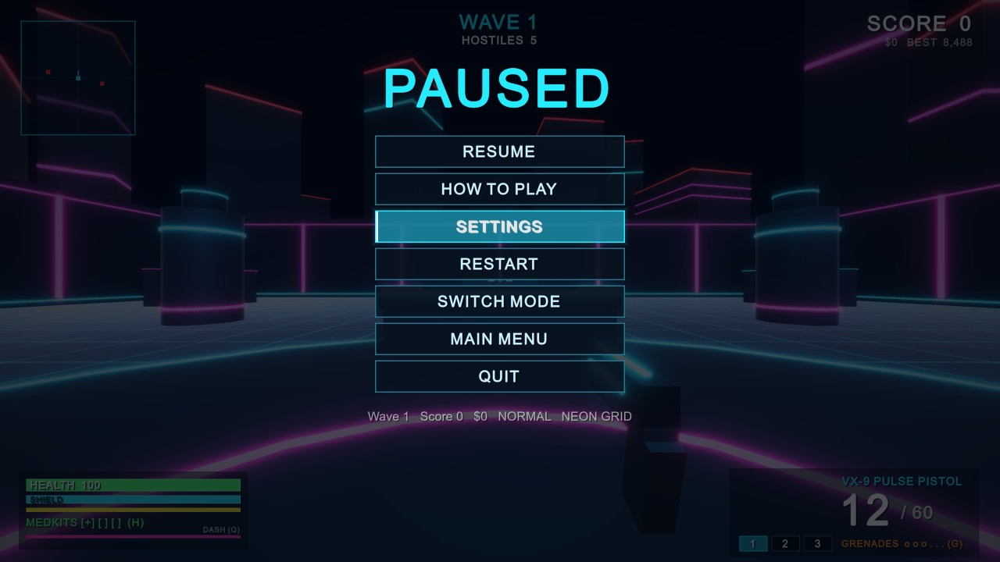
Figure 8.2 – Pause menu with the pointer over SETTINGS: glow, accent bar and highlighted label (27 Nov 2026).QQMK0193QQFigure 8.3 – Archery results screen with the new mode-card panels (Shooter, Archery, Parachute) and best scores.QQMK0194QQ
8.3 Navigation Flow and Scene TransitionsQQMK0195QQ
Figure 8.4 shows every path between screens. Shooter, Archery and Parachute live in the main scene and are switched by ModeManager without reloading; the Rat Shooter is a separate scene, loaded asynchronously behind a fade by SceneFader, and its own menu returns to the main scene the same way.
flowchart LR
M["Main menu"] -->|START MISSION| SH["Shooter waves"]
M -->|ARCHERY| AR["Archery range"]
M -->|PARACHUTE| PA["Skydive"]
M -->|RAT SHOOTER SceneFader| RS["Rat Shooter scene"]
M --> TU["Tutorial"] --> SH
SH <-->|Esc| P["Pause menu"]
AR <-->|Esc| P
PA <-->|Esc| P
P -->|SWITCH MODE / F5-F7| SH & AR & PA
P -->|RESTART| SH
P -->|MAIN MENU| M
SH -->|player dies| GO["Game over: summary, analytics, leaderboard"]
AR -->|3 rounds done| RE["Results + mode cards"]
PA -->|landed| RE
GO --> M
RE -->|PLAY AGAIN| AR
RE -->|MAIN MENU| M
RS -->|Main menu button SceneFader| M
Figure 8.4 – Navigation flow between the menus and the four game modes.QQMK0196QQ
Consistent transitions (polish pass). Previously only the scene change to the Rat Shooter faded; switching between in-scene modes cut instantly. A short fade from black now plays whenever a shooter mission, the tutorial, an archery or parachute run starts and whenever the player returns to the main menu (0.5–0.6 s, smoothstep easing), and the archery and parachute results screen fades in over 0.5 s instead of appearing at once. The fade is drawn last in OnGUI, over every other element, and is driven by unscaled time, so it also works while the game is paused or in slow motion. The fade clock starts on the first frame that is actually drawn after the request, not when it is requested: the first test showed that building the Parachute island takes longer than the fade itself, so without this the fade was used up before the first frame appeared (Listing 8.2, Figure 8.5, Figure 8.8). To let a whole screen fade, the Fill helper now multiplies its colour by the alpha of GUI.color; this is invisible everywhere else because that alpha is normally 1.
Listing 8.2 – Fade-in transition used on every mode start and on return to the menu (Assets/Scripts/UI/HUD.cs, lines 122-143)QQMK0197QQ
float fadeStart = -10f, fadeDur = 0.6f;
bool fadePending;
/// <summary>Fade the screen in from black (mode start, restart, return to menu) for a consistent transition.</summary>
public void FadeIn(float duration = 0.6f)
{
fadePending = true; // the clock starts on the first drawn frame, so a long mode build cannot use up the fade
fadeDur = Mathf.Max(0.05f, duration);
}
void DrawFade()
{
if (fadePending)
{
if (Event.current.type != EventType.Repaint) { Fill(new Rect(0f, 0f, Screen.width, Screen.height), new Color(0.004f, 0.01f, 0.025f, 1f)); return; }
fadePending = false;
fadeStart = Time.unscaledTime;
}
float t = (Time.unscaledTime - fadeStart) / fadeDur;
if (t >= 1f || t < 0f) return;
Fill(new Rect(0f, 0f, Screen.width, Screen.height), new Color(0.004f, 0.01f, 0.025f, 1f - Mathf.SmoothStep(0f, 1f, t)));
}
Figure 8.5 – Parachute start, first frame: black (mean brightness 3.0 of 255).QQMK0198QQFigure 8.6 – 0.25 s later: the island scene fading in (brightness 48.1).QQMK0199QQ
Figure 8.8 – Archery results 0.2 s after the run ended: the panel is still partly transparent.QQMK0201QQFigure 8.9 – The same screen after the 0.5 s fade-in.QQMK0202QQ
8.4 Gameplay HUDs of the Four ModesQQMK0203QQ
All four HUDs follow one grid: mode status top-centre, score and best score top-right, situational information top-left, player resources bottom-left or bottom-right, and a one-line control hint at the bottom centre. Table 8.2 lists the elements; the figures below show each HUD in play.
Table 8.2 – HUD elements of the four game modesQQMK0204QQ
Mode
HUD elements and feedback
Shooter
Wave number and hostiles left; score, best score and combo multiplier; radar; health, shield, medkits and dash bars; weapon name, magazine/reserve ammunition, grenades and weapon slots 1–3; crosshair; hit markers (white body, red head, X on kill); floating damage numbers; red damage-direction indicators; low-ammo and RELOAD prompts with a reload progress bar; wave banners and toasts
Archery
Round n/3 and one pip per arrow left; score and best; wind panel (speed, direction arrow and tail/head/crosswind label); draw meter (DRAW n% → FULL DRAW); breath bar when holding breath; hit text (MISS, +points, BULLSEYE! with streak multiplier); new trajectory guide; round summary with per-arrow scores
Parachute
Phase (IN THE PLANE, FREE FALL, DEPLOYING, CANOPY, LANDED) and timer; altimeter with an altitude tape that marks the deploy window, the “pull now” warning band and the auto-deploy line; vertical speed and ground speed; speed-control gauge; parachute state; rings and coins collected; landing-pad radar with distance; large OPEN PARACHUTE prompt that appears only inside the deploy window and blinks red below the warning altitude
Rat Shooter
Level, time left and mice remaining; score with combo; ammunition with a reload animation; headshot and combo call-outs; countdown; level-clear summary with time, ammo and accuracy bonuses and 1–3 stars; best score with a NEW! tag
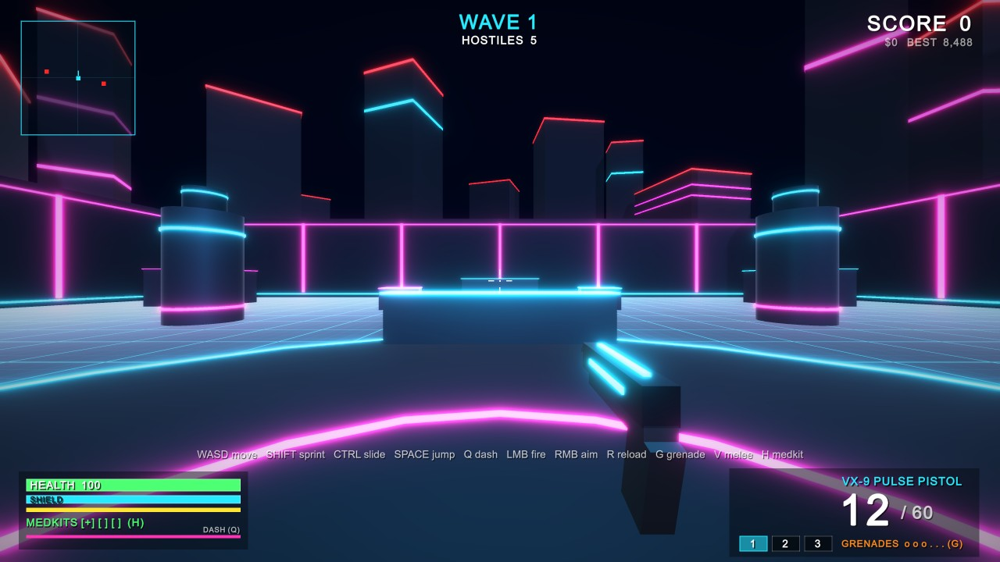
Figure 8.10 – Shooter HUD at the start of wave 1 (27 Nov 2026).QQMK0205QQ
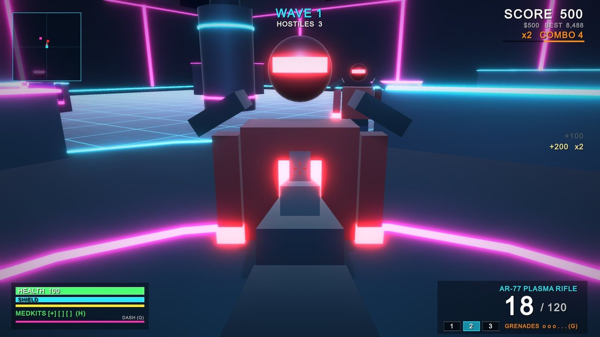
Figure 8.11 – Shooter: aiming down sights with the plasma rifle.QQMK0206QQ
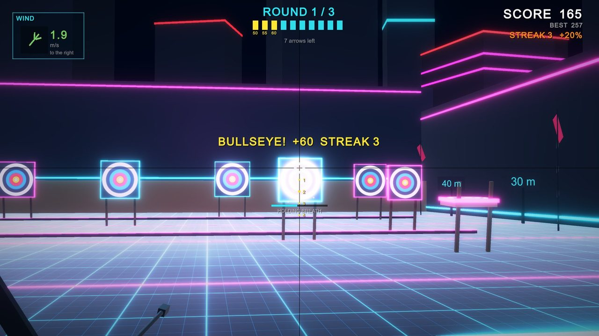
Figure 8.12 – Archery: bullseye with streak multiplier and the wind panel.QQMK0207QQFigure 8.13 – Parachute: the OPEN PARACHUTE prompt inside the deploy window.QQMK0208QQFigure 8.14 – Rat Shooter HUD: level, timer, mice left, score and ammunition.QQMK0209QQ
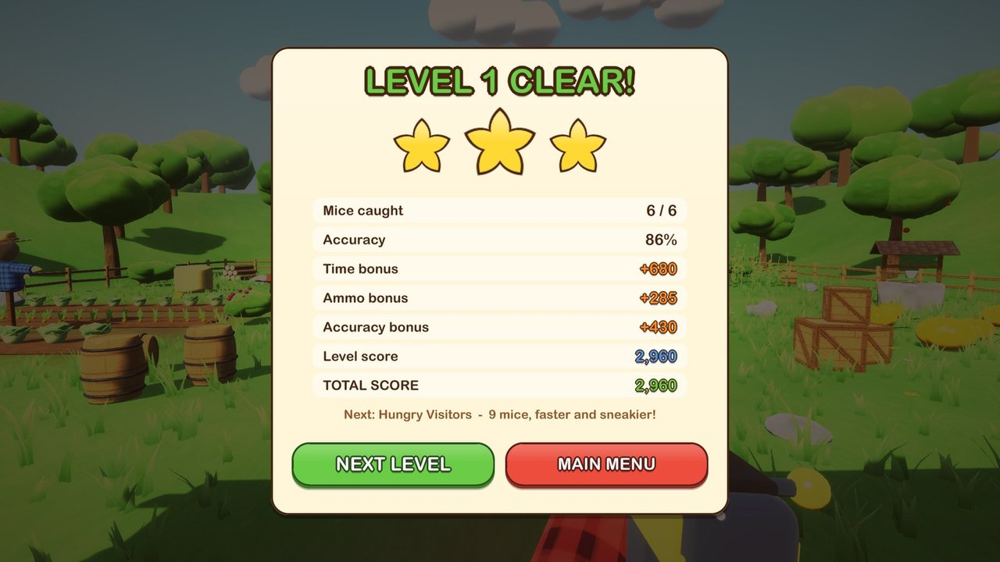
Figure 8.15 – Rat Shooter level-clear summary with bonuses and stars.QQMK0210QQ
8.4.1 Archery trajectory guide
The archery interface had no way to show how draw strength, gravity and wind shape a shot. The new guide is a dotted cyan arc that appears once the bow is drawn past 12 %, fades in with the draw and brightens at full draw. It is computed every frame by Arrow.Predict, which runs exactly the same integration as a real arrow (gravity, quadratic drag, the current round's wind and swept raycasts against the range), so the arc ends where the arrow would actually land (Section 9.2). Each dash is 40 ms of flight. On the desktop the arrow is launched from the eye, which would make the true path an end-on dot under the crosshair, so the guide starts at the tip of the nocked arrow and blends onto the predicted path with a (1−t)2 weight; the far end, including the predicted impact point, is unchanged. The far end is drawn at reduced opacity, so reading the exact impact remains part of the skill.
Figure 8.16 – Trajectory guide at 69 % draw (enlarged crop of a 1280×720 Game-view capture).QQMK0211QQ
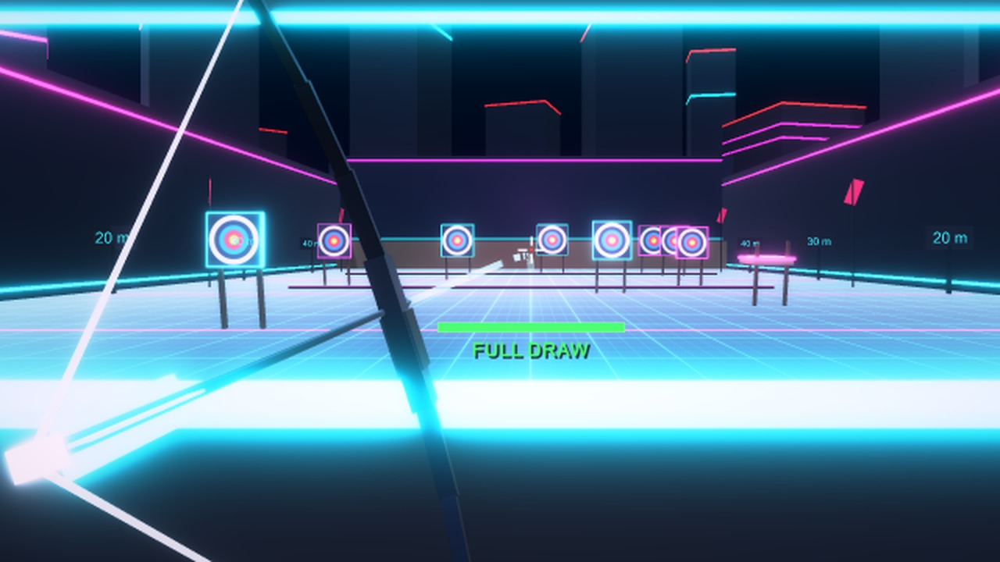
Figure 8.17 – Trajectory guide at full draw: a flatter, faster arc.QQMK0212QQ
8.5 Pause, Results and Game-Over ScreensQQMK0213QQ
The pause menu (Esc, or the VR menu button) freezes time and offers Resume, How to Play, Settings, Restart (or Skip Tutorial), Switch Mode, Main Menu and Quit. The shooter's game-over screen animates in over about a second and has three tabs: a summary (score, wave, kills, accuracy, headshots, new-high-score banner), analytics (a damage heat-map of the arena and a kills-per-wave chart) and the local leaderboard. The archery and parachute results screens show the score, a NEW HIGH SCORE! banner when the best is beaten, a per-round or per-phase breakdown, PLAY AGAIN and MAIN MENU, and the mode cards for a quick switch.
Figure 8.18 – Shooter game over: summary tab.QQMK0214QQFigure 8.19 – Game over: analytics tab with heat-map.QQMK0215QQFigure 8.20 – Parachute results with landing accuracy.QQMK0216QQ
8.6 Tutorial, Help and SettingsQQMK0217QQ
First-time players are taken through an eight-step interactive tutorial; each step states a goal (look around, move, sprint and jump, shoot the targets, reload, aim down sights, throw a grenade, collect a power-up) and advances only when the player has done it. F1 toggles a help overlay with the controls of the current mode, F3 an FPS counter and F4 a performance overlay. The settings screen has six tabs: gameplay (mouse sensitivity, field of view, screen shake, invert-Y, tutorial replay), graphics (post-processing, VSync, bloom intensity, FPS counter, full screen), audio (master and music volume, HRTF spatial audio), controls (rebinding of all 15 actions), VR comfort (vignette on/off and strength, snap or smooth turning with angle or speed, seated mode, hand tracking, haptics, mixed reality) and language (English, Spanish, French and German through the Loc table).
Every device writes into the same PlayerInputState (Chapter 4), so the controls in Table 8.3 drive identical gameplay code. Keyboard bindings are the defaults and can be changed in the settings.
Table 8.3 – Default controls for keyboard and mouse, gamepad and VR controllersQQMK0222QQ
Action
Keyboard + mouse
Gamepad
VR controllers (OpenXR)
Move / look
W A S D / mouse
Left stick / right stick
Left stick / head; right stick snap or smooth turn
Fire / draw bow
Left mouse button
Right trigger
Right trigger
Aim, zoom
Right mouse button
Left trigger
Left trigger (zoom)
Reload
R
X
Right grip
Jump / sprint
Space / Left Shift
A / left stick click
A / left stick click
Crouch, slide / dash
Left Ctrl / Q
B / LB
Right stick back / right stick click
Grenade / melee
G / V
RB / R3
Left trigger / left grip
Weapons / medkit / light
1, 2, 3 / H / F
Y (cycle)
B (cycle) / Y / X
Pause
Esc
Start
Left menu button
Switch mode
F5 Shooter, F6 Archery, F7 Parachute
Pause → Switch mode
VR menu
Archery breath
Hold Shift while zoomed
Left stick click
Left stick click
Parachute
Configurable inputs in SkydiveSettings; by default Space jumps from the aircraft and opens the parachute, W A S D track and steer, the mouse turns and leans, and the HUD hint line always shows the keys bound for the current phase.
Rat Shooter
Mouse aim, left button fire, right button aim down sights, R reload, Esc or P pause.
8.8 VR User InterfaceQQMK0223QQ
In VR, IMGUI cannot be seen inside the headset, so VRMenu draws the same menu as a world-space panel in front of the player, and VRMenuDriver casts a laser from the right controller (ray-casting selection [28]); the trigger clicks the highlighted button. During play a wrist display on the left hand shows health, ammunition, wave and score (mini-game modes put their own read-out there), so no head-locked HUD is needed. The VR menu was exercised end to end with the OpenXR Mock Runtime (Chapter 5) (Figure 8.24).
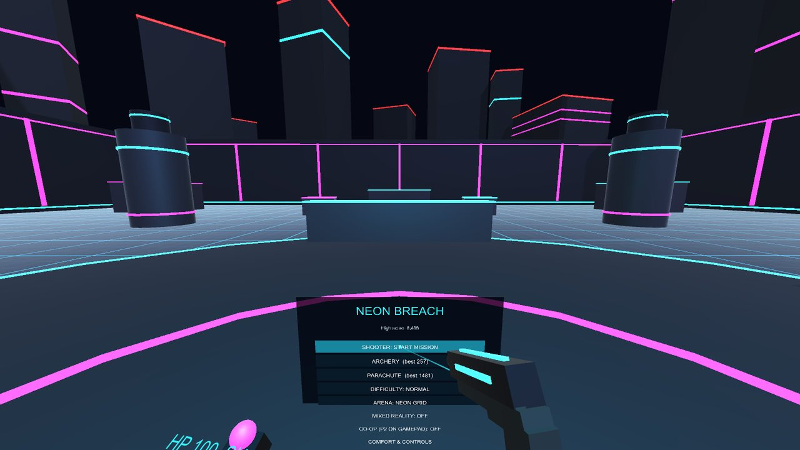
Figure 8.24 – World-space VR menu operated with the controller laser pointer (OpenXR Mock Runtime).QQMK0224QQFigure 8.25 – VR archery: the bow is held in the tracked hand.QQMK0225QQ
8.9 Heuristic Usability ReviewQQMK0226QQ
The interface was reviewed against Nielsen's ten usability heuristics [30]. Table 8.4 lists how the project addresses each one; the review was done by the two authors, not by external users, so it is an expert review rather than a user study (Chapter 14).
Table 8.4 – Review of the interface against Nielsen's usability heuristicsQQMK0227QQ
Heuristic
How NEON BREACH addresses it
Visibility of system status
Persistent HUD values; draw meter, reload bar, altitude tape and deploy window; trajectory guide while drawing
Match with the real world
Metres, m/s and km/h; physically based arrows and free fall; familiar shooter conventions
User control and freedom
Pause, restart, switch mode and main menu from every mode; skip tutorial; F5–F7 hot-keys
Consistency and standards
One button style, one panel style, one fade transition and one HUD grid in every mode
Error prevention
Confirmation before resetting statistics; deploy prompt and auto-deploy safety in Parachute
Recognition rather than recall
Bound keys printed in the hint line of every phase; mode cards show hot-keys
Flexibility and efficiency
Key rebinding, hot-keys, four input methods, quick restart
Aesthetic and minimalist design
Information at the screen edges; the centre is kept for the crosshair and the world
Help users recover from errors
Missed shots show MISS; the Parachute auto-deploys at the safety altitude; Rat Shooter retry level
Help and documentation
Interactive tutorial, How to Play screen and the F1 help overlay
Chapter 9Advanced AR/VR FeaturesQQMK0228QQ Rubric Criterion 8 of 10
Evidence in this chapter
A feature matrix that separates what was verified in Play mode, what was verified through the OpenXR Mock Runtime, what needs real hardware and what is planned (Table 9.1).
Physics-based gameplay with its equations: arrow ballistics with drag and wind, the new trajectory prediction, skydive free fall with terminal velocity, grenades (Section 9.2, Listing 9.1, Listing 9.2).
Enemy AI for six enemy types on NavMesh, and the cartoon mouse AI with stop/run/turn behaviour and reactions to shots and near misses (Figure 9.1, Listing 9.3).
Table 9.1 summarises the advanced features and how far each one has been verified. The labels are the ones defined in the Rubric-to-Evidence Map: Verified features ran in Unity Play mode during this project; Mock XR features ran through the real OpenXR pipeline with the Mock Runtime; Needs hardware features are implemented but their final check needs a physical headset; Planned features are not implemented.
Table 9.1 – Advanced features and their verification statusQQMK0230QQ
Feature
Implementation
Status
Arrow ballistics (gravity, drag, wind)
Arrow.Fly: sub-stepped integration with swept raycasts
Grenade: custom gravity and sphere-cast bounce, fuse, radial damage with fall-off
Verified
Enemy AI (6 types) on NavMesh
Enemy, WaveManager, runtime NavMeshSurface
Verified
Mouse AI (stop, run, turn, flee, hide)
MouseAI state machine on a baked NavMesh, MouseRig procedural animation
Verified
Procedural character animation
Enemy walk cycles, SkydiverRig, MouseRig squash and stretch
Verified
Split-screen local co-op
Two PlayerControllers, viewport split, gamepad for player 2
Verified
VR rig, controller input, laser-pointer menu
VRRig, VRMenu, VRMenuDriver (OpenXR)
Mock XR
VR comfort: vignette, snap turn, seated mode
ComfortVignette, VRRig
Mock XR
Controller haptics
Haptics.PulseXR (impulses counted by the runtime)
Mock XR
Hand tracking and gestures
HandTracking on XRHandSubsystem: pinch to fire, open palm
Needs hardware
Mixed-reality passthrough "breach"
MixedReality: AR Foundation camera, room boundary registration
Needs hardware (logic Mock XR)
Binaural audio (ITD, ILD, head shadow)
BinauralFilter on each 3D source
Verified (desktop)
Two-handed physical bow drawing in VR
–
Planned
9.2 Physics-Based GameplayQQMK0231QQ
9.2.1 Arrow ballistics
Arrows do not use a Rigidbody. Each arrow integrates its own state so that drag and wind can be modelled exactly and collisions are never missed at 78 m/s. With velocity v, wind w and the flight direction d = v/|v|, the acceleration is
a = g − kd |v| v + kw [(w − v) − ((w − v)·d) d](9.1)
where kd = 0.0006 m−1 (quadratic drag, about 3.6 m/s2 at full speed) and kw = 0.45 s−1 couples only the component of the relative air velocity that is perpendicular to the shaft. Each frame is split into up to 8 sub-steps of at most 0.75 m; for each sub-step the new position p + vh + ½ah2 is checked with a raycast against the environment layer, so a hit on a 4 cm bullseye ring is found even when the arrow moves 1.3 m per frame. Launch speed rises with the draw D ∈ [0, 1] as v0 = 14 + (78 − 14) D0.85 m/s.
9.2.2 Trajectory prediction (polish pass)
The trajectory guide (Chapter 8) needs the path before the arrow exists. Arrow.Predict runs Equation 9.1 with a fixed step of 40 ms and the same raycast test, writes up to 48 points (1.9 s of flight) into a pre-allocated array and reports whether the path ends on a surface (Listing 9.1). Using the identical model, rather than a simpler parabola, guarantees that the guide and the real arrow agree, including the round's wind. The cost is at most 48 short raycasts per frame, and the point array is pre-allocated and reused (only the small colour gradient is rebuilt each frame while the bow is drawn); with the guide visible the Archery mode measured 3.1 ms per frame (Chapter 12).
Listing 9.1 – Arrow.Predict: the same flight model as a real arrow, used by the trajectory guide (Assets/Scripts/Modes/Arrow.cs, lines 47-81)QQMK0232QQ
/// <summary>/// Predict the flight path of an arrow launched with this velocity using exactly the same model as Fly()/// (gravity, quadratic drag, current wind; swept raycasts against the environment). Fills buf with points/// spaced 'step' seconds apart and returns how many were written; hit tells whether the path ends on a surface./// Used by the archery trajectory guide./// </summary>
public static int Predict(Vector3 pos, Vector3 vel, Vector3[] buf, float step, out bool hit)
{
hit = false;
if (buf == null || buf.Length == 0) return 0;
Vector3 wind = WindSystem.Instance != null ? WindSystem.Instance.Current : Vector3.zero;
buf[0] = pos;
int n = 1;
while (n < buf.Length)
{
Vector3 accel = Physics.gravity - vel * (vel.magnitude * Drag);
Vector3 dir = vel.sqrMagnitude > 0.01f ? vel.normalized : Vector3.forward;
accel += Vector3.ProjectOnPlane(wind - vel, dir) * WindCoupling;
Vector3 next = pos + vel * step + 0.5f * accel * step * step;
Vector3 seg = next - pos;
float len = seg.magnitude;
RaycastHit h;
if (len > 0.0001f && Physics.Raycast(pos, seg / len, out h, len, Layers.EnvMask, QueryTriggerInteraction.Ignore))
{
buf[n++] = h.point;
hit = true;
break;
}
vel += accel * step;
pos = next;
buf[n++] = pos;
if (pos.y < -5f) break;
}
return n;
}
9.2.3 Free fall and parachute flight
In free fall the vertical velocity vy follows gravity against quadratic drag. The drag coefficient is not a constant: it is recomputed from the terminal velocity vt of the current body position, so that changing position (belly-to-earth, head-down dive, spread eagle) moves the jumper smoothly to a new equilibrium:
c = g / vt2, dvy/dt = −g + cvy2 (falling) (9.2)
At vy = −vt drag equals gravity, so the speed settles exactly on the terminal velocity; when the jumper slows down from a dive, the code clamps the speed so that it settles on, not past, the new vt (Listing 9.2).
Listing 9.2 – Free-fall vertical dynamics driven by the body position's terminal velocity (Assets/Scripts/Modes/ParachuteController.cs, lines 253-263)QQMK0233QQ
// --- vertical: gravity against quadratic air drag. The drag coefficient is chosen so that drag equals// gravity at the terminal velocity of the current body position, so changing position (lean, SPEED UP,// SLOW DOWN) accelerates or brakes you smoothly towards the new terminal velocity.
float vtBase = Mathf.Lerp(S.bellyTerminalVelocity, S.leanTerminalVelocity, Lean);
float vt = SpeedControl >= 0f ? Mathf.Lerp(vtBase, S.diveTerminalVelocity, SpeedControl)
: Mathf.Lerp(vtBase, S.spreadTerminalVelocity, -SpeedControl);
TerminalVelocity = vt;
float drag = S.gravity / (vt * vt);
float before = vy;
vy += (-S.gravity + drag * vy * vy * (vy < 0f ? 1f : -1f)) * dt;
if (before < -vt && vy > -vt) vy = -vt; // braking settles on, not past, vt
After deployment the canopy flies at a glide ratio with A/D steering and brakes; holding the flare input near the ground converts forward speed into lift for a soft landing. Touchdown is detected from the CharacterController's collision flags, and the run is scored as rings + coins + landing accuracy (distance to the pad) + landing softness + time bonus − penalties (for example an automatic deployment).
9.2.4 Other physics
Grenades use a custom integrator with gravity and a sphere-cast bounce, a 2.4 s fuse with an accelerating blink, a proximity trigger and radial damage with distance fall-off. Enemies are pushed by a knock-back vector that decays at 18 m/s2. In the Rat Shooter, ejected magazines are Rigidbodies that inherit the gun's velocity, and mice and the player move on NavMeshes and CharacterControllers with collision layers described in Chapter 6.
9.3 Character Movement and AnimationQQMK0234QQ
PlayerController moves a CharacterController with acceleration-based walking, sprinting with stamina, crouching, sliding, a dash and jumping, plus a field-of-view kick when sprinting or dashing on desktop (disabled in VR). All characters are animated procedurally rather than with imported clips: enemies have code-driven walk cycles, bobbing drones and boss slam wind-ups; SkydiverRig poses the skydiver's limbs from the body position, lean and canopy state; and MouseRig gives the cartoon mice squash and stretch, a wavy tail, head look-at, sniffing, ear twitches, blinking and poses for standing up, grooming and sitting.
9.4 Enemy AI (Shooter)QQMK0235QQ
All six enemy types share one Enemy class that follows NavMesh paths (AI Navigation package, NavMesh built at runtime) and adds per-type behaviour:
Table 9.2 – Enemy types and their behaviourQQMK0236QQ
Type
Behaviour
Grunt
Runs straight at the player and claws in melee range
Gunner
Keeps its distance, flanks and fires three-round bursts
Drone
Flies, circles the player and shoots
Sniper
Finds a distant perch with line of sight (states Reposition → Aim → Cooldown), telegraphs a laser for 1.4 s, then fires a high-damage bolt
Tank
Slow and heavy, with a frontal energy shield that blocks bullets; it must be flanked or hit with grenades
Boss
Fan attack, ground slam that the player dodges by jumping, and summoning of minions
Hit reactions. Every hit makes the enemy flash white for a few frames (through a MaterialPropertyBlock, so no material copies are made), applies a knock-back impulse along the shot direction, spawns a particle burst (yellow for headshots) and a floating damage number and plays a hit or headshot sound; kills add debris and, for large enemies, an explosion; headshots and kills show distinct hit markers on the HUD. Shots on the tank's shield flash the shield, play a block sound and tell the player through a blocked marker that the shot did no damage. Waves (WaveManager) scale enemy count and mix with the wave number and difficulty, announce each wave with a banner and open the upgrade shop between waves.
9.5 Cartoon Mouse AI (Rat Shooter)QQMK0237QQ
Each mouse is a NavMesh agent controlled by an eleven-state machine (Figure 9.1). Mice wander to random spots, food and cover with randomised gaits (walk, run, dash), zig-zag paths, sudden stops and direction changes, then idle for a random time with a non-repeating action (look around, stand up and sniff, groom, sit) before bolting again. Five variants differ in size, speed, boldness, erratic movement and burrow chance, which makes the population feel like individuals.
Figure 9.1 – State machine of a cartoon mouse (MouseAI.State).QQMK0238QQ
Reaction to shots and misses. Every shot is reported to every live mouse with the ray and the impact point. The mouse computes its distance to the impact and to the bullet's path; a near miss (under about 2.8 m) makes it panic: it hops, squeaks, and runs at panic speed to the nearest burrow, a hiding spot behind cover out of the player's line of sight, or a random point away from the threat. Shots within 7.5 m make a timid mouse panic and a bold one only startle (a short hop and a freeze); distant shots may startle it (Listing 9.3). A hit mouse plays a cartoon elimination (MouseRig.PlayDeath): a stunned expression, a spinning launch into the air along the shot direction, a landing on its back with twitching legs and circling stars, and finally a “poof”; the HUD awards points, headshot bonuses and the combo.
Listing 9.3 – How a mouse reacts to a gunshot: panic on near misses, startle on distant shots (Assets/RatShooter/Scripts/Mice/MouseAI.cs, lines 465-490)QQMK0239QQ
/// <summary>A shot was fired. Near misses make the mouse flee and hide; distant ones may only startle it.</summary>
public void OnGunshot(Vector3 rayOrigin, Vector3 rayDir, Vector3 impact)
{
if (!IsAlive || state == State.Burrowed || state == State.Submerging) return;
Vector3 pos = transform.position + Vector3.up * 0.15f;
float dImpact = Vector3.Distance(pos, impact);
float along = Vector3.Dot(pos - rayOrigin, rayDir);
float maxAlong = Vector3.Distance(rayOrigin, impact) + 1f;
float dRay = along > 0f && along < maxAlong ? Vector3.Distance(pos, rayOrigin + rayDir * along) : float.MaxValue;
float near = Mathf.Min(dImpact, dRay);
if (state == State.Fleeing)
{
if (near < 3f && Random.value < 0.6f) Panic(impact);
return;
}
if (state == State.Hiding)
{
if (near < 2.5f) Panic(impact);
else stateTime = Mathf.Max(0f, stateTime - 1.5f); // stays hidden a bit longer
return;
}
if (near < 2.8f) Panic(impact);
else if (near < 7.5f) { if (Random.value < 0.85f - variant.boldness * 0.5f) Panic(impact); else Startle(); }
else if (Random.value < 0.6f - variant.boldness * 0.4f) Startle();
}
Figure 9.2 – A near miss: mice flee towards cover and burrows.QQMK0240QQFigure 9.3 – A headshot with the cartoon elimination effect and score call-out.QQMK0241QQ
9.6 Interactive Objects and Gameplay EffectsQQMK0242QQ
Interactive objects include five pick-up types dropped by enemies (medkit, ammunition, grenade, double damage and slow motion, collected by walking close), training targets in the tutorial, static, sliding-rail and pop-up archery targets scored 50 (bullseye) / 10 / 8 / 6 / 4 / 2 from the centre outwards, with a bonus multiplier for moving targets, flight rings and coins in the Parachute mode, and the landing pad. Effects are generated in code: muzzle flashes with a short point light, tracers, sparks and impact bursts, explosion shock-waves, shield flashes, damage numbers, bow string and limb bending, arrow trails that fade, and the Rat Shooter's cartoon muzzle flash, smoke and recoil with weapon sway and breathing.
9.7 VR Comfort SystemQQMK0243QQ
Comfort follows the literature in Chapter 3. ComfortVignette narrows the visible field during artificial motion: its target strength is clamp(speed/4.5 + |turn rate|/100) × the user's strength setting, eased at 4 s−1 when rising and 2 s−1 when falling, and the inner radius shrinks from 0.85 to 0.18 of the view [6]. Snap turning rotates about the head (not the rig origin) in 15–90° steps with a 0.12 s blink [7]; smooth turning is optional. Seated mode recalibrates the player height for a seated user, and the camera never shakes, bobs or kicks in VR. In the Mock Runtime session the vignette reached 0.64 at 4.13 m/s and a 45° snap turn was measured (Figure 9.4).
Figure 9.4 – Comfort vignette during stick locomotion in VR (Mock Runtime).QQMK0244QQFigure 9.5 – Blink during a snap turn.QQMK0245QQ
9.8 Spatial Audio and HapticsQQMK0246QQ
BinauralFilter is an OnAudioFilterRead filter that turns a mono source into a binaural signal using the azimuth of the source relative to the listener's head: an interaural time difference from Woodworth's model, ITD = (r/c)(θ + sin θ) [22], an interaural level difference, and a one-pole low-pass on the far ear to imitate head shadow [21, 23]. It can be switched off in the audio settings. Haptics.PulseXR sends impulses to the controllers: the right controller pulses gently while a bow is drawn (amplitude rising with the draw), strongly on release, on a target hit and on every gunshot (scaled by weapon recoil); both controllers pulse on damage and nearby explosions, and on parachute opening and landing; 78 impulses were counted by the Mock Runtime during the VR verification.
9.9 XR Controller InteractionQQMK0247QQ
In VR the weapons and the bow are attached to the tracked right hand: the bow's aim direction is the controller's forward vector, so the arrow leaves from the bow rather than the eye (and the trajectory guide then starts at the bow, Chapter 8). The trigger draws and releases, the left trigger zooms, and the grips reload and melee. Menus use a controller laser pointer, and the wrist display replaces the screen HUD. Hand tracking (XRHandSubsystem joint data) maps a right-hand pinch to fire and to menu clicks, a left-hand pinch to a grenade, and an open palm held for 0.4 s to reload (right) or a medkit (left); pinch detection uses hysteresis (2 cm to start, 3.5 cm to release) so tracking jitter does not cause double shots. Figure 9.6 and the following figures show VR frames of the archery interaction from the Mock Runtime session.
Figure 9.6 – VR: full draw with the tracked bow.QQMK0248QQFigure 9.7 – VR: release.QQMK0249QQ
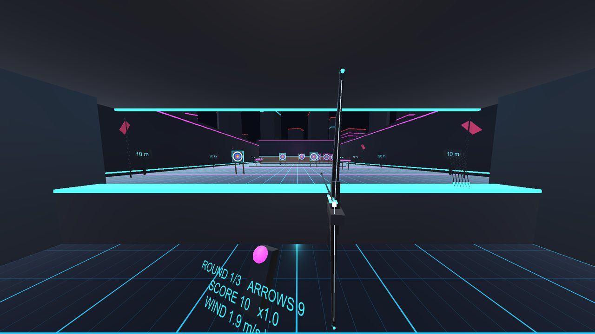
Figure 9.8 – VR: hit on the target.QQMK0250QQ
Chapter 10Technical DocumentationQQMK0251QQ Rubric Criterion 9 of 10
Evidence in this chapter
Measured development hardware, software versions and the technologies and tools used (Table 10.1, Table 10.2).
Code metrics and an explanation of the most important scripts (Table 10.3); Inspector evidence of designer-tunable parameters (Figure 10.1).
Implementation methodology, build and run steps.
The test plan with the results of the verification runs of 27 Nov 2026 and 22 Nov 2026 (Table 10.4), bugs fixed (Table 10.5) and limitations.
10.1 Hardware and Software RequirementsQQMK0252QQ
Table 10.1 lists the development machine, read from Unity's SystemInfo in the running Editor, and the software versions read from the project's package manifest. All measurements in this report were taken on this machine.
Table 10.1 – Development and test environment (measured) and requirementsQQMK0253QQ
Item
Development and test machine (measured)
To run the project
CPU
13th Gen Intel Core i7-13650HX (20 logical processors)
Post-processing, comfort vignette, cartoon toon shading, sky and effects
Unity CLI with the Pipeline package
Command-line recompiles, Play-mode control, script eval state checks and Game-view captures used for the verification runs and screenshots in this report
Git
Version control of the project
10.3 Code Metrics and Project StructureQQMK0256QQ
The project contains 123 C# scripts with 31,004 lines (counted on 27 Nov 2026 with find Assets -name "*.cs"; the 22 Nov count in Chapter 4 was 30,808, and the polish pass added about 200 lines). Code is organised in three namespaces: NeonBreach (shared framework, Shooter, Archery, Parachute, VR), NeonBreach.RatShooter and NeonBreach.FarmSniper, under Assets/Scripts (Core, Player, Weapons, Enemies, Modes, UI, VR, World, Rendering, Editor), Assets/RatShooter and Assets/FarmSniper. Gameplay constants are exposed in the Inspector, so the game can be tuned without code changes; for example SkydiveSettings exposes more than 60 skydive parameters (Figure 10.1).
Figure 10.1 – Unity Inspector of the ParachuteMode component: designer-tunable skydive parameters (altitudes, terminal velocities, canopy, inputs).QQMK0257QQ
10.4 Important ScriptsQQMK0258QQ
Table 10.3 – The most important scripts and their responsibilitiesQQMK0259QQ
Script (lines)
Responsibility
GameManager (568)
Singleton game state machine (Menu, Playing, Paused, Shop, GameOver), player set-up, score and high score, pause, cursor, transitions
ModeManager (342)
Switches between Shooter, Archery and Parachute in one scene; per-mode best scores; hot-keys F5–F7
PlayerController (636)
Movement (walk, sprint, crouch, slide, dash, jump), camera, health and shield, VR head following
PlayerInputState, DesktopInput, GamepadInput
Device-independent input: every device fills the same per-player state each frame
WeaponSystem (626)
Pistol, rifle and scatter cannon: hitscan with spread, recoil, reload, aim down sights, grenades, melee
Enemy (986), WaveManager (208)
Six enemy types on NavMesh, hit reactions; wave composition and difficulty scaling
ArcheryMode (~770), Arrow (~255), ArcheryTarget
Archery range, bow, draw, breath and sway, rounds and scoring; arrow ballistics and the new trajectory prediction; ring scoring and target motion
Editor tools that generate and save the scenes; the Neon Breach menu
AutoTest (275)
Automated smoke test, started with the command-line argument -nbSmokeTest
10.5 Implementation MethodologyQQMK0260QQ
Development was iterative. Each feature was first built as a small vertical slice in the main scene (for example a single target and arrow), played, tuned through Inspector parameters and only then extended. Three principles kept the project manageable:
One input abstraction. New devices only fill PlayerInputState; gameplay never reads devices directly, which is what made VR, gamepad and co-op support possible without branching gameplay code.
Procedural content with editor builders. Worlds, models, textures and sounds are generated by code; editor builders (Neon Breach > Build Game Scene, Rat Shooter > Build Rat Shooter Scene) run the same code to save scenes and assets, so content can always be regenerated.
Verify before documenting. Every change was compiled and played in the Editor, and the console was checked for errors and warnings. For this report the running Editor was driven from the command line (Unity CLI): recompile, enter Play mode, start modes through the game's own public methods, inject input through a virtual Input System gamepad, read state with script eval and capture the Game view. These helpers were not added to the game code.
The final polish pass followed the same method with a strict rule of small, low-risk changes: the existing scenes, assets and gameplay were not rebuilt, and each change was confined to one or two methods (Table 1.3).
10.6 Build and Run ProcedureQQMK0261QQ
Open the project folder in Unity Hub with Unity 6000.5.5f1; the Package Manager restores the packages.
Open Assets/Scenes/NeonBreach.unity (or use Neon Breach > Play From Start) and press Play. The Rat Shooter is reached from the main menu; FarmSniper.unity can be opened from Neon Breach > Farm Sniper.
For VR, run Neon Breach > VR > 2 – Configure OpenXR features once (already done in the submitted project), connect an OpenXR headset and set the OpenXR runtime (e.g. Meta Quest Link) before pressing Play; the game detects the headset and switches to the VR rig automatically.
To build: Neon Breach > Build Standalone Player, or File > Build Profiles with the three scenes in the order NeonBreach, FarmSniper, RatShooter, target Windows x86-64.
Automated smoke test: run the built player with -nbSmokeTest; it plays through the main systems, saves screenshots and writes SmokeTest/report.txt. Note that it resets the saved scores, so it should not be run on a demonstration machine.
10.7 Testing and ValidationQQMK0262QQ
Table 10.4 is the test plan. Each test was executed in the Unity Editor (Play mode) on the machine in Table 10.1; the Date column states which verification run produced the result. Tests marked 27 Nov were executed after the polish-pass changes and include the new features. Results are reported exactly as observed.
Table 10.4 – Test plan and resultsQQMK0263QQ
#
Test case
Observed result
Date
Result
1
Compile all scripts after the polish changes
Recompile completed; 0 errors, 0 warnings in the console
27 Nov
Pass
2
Enter Play mode in NeonBreach.unity
Main menu with four mode buttons and best scores (Figure 8.1)
27 Nov
Pass
3
Start Archery
GameState.Playing, mode Archery, round 1/3 with 10 arrows
27 Nov
Pass
4
Draw the bow (gamepad trigger)
Draw meter rose to 65–69 % after ~0.4 s and to FULL DRAW (1.0) after ~1 s
27 Nov
Pass
5
Trajectory guide while drawing
Guide enabled, 15–16 points, path ends on the range floor at 36.5–43.2 m; visible from the arrow tip (Figure 8.16)
27 Nov
Pass
6
Release the arrow
Arrow fired, arrows left 10 → 9, MISS feedback shown, guide hidden
27 Nov
Pass
7
Finish an archery run
State GameOver; results screen fades in (panel partly transparent in a frame captured 0.2 s after the end, opaque after 0.5 s); mode cards shown (Figure 8.8)
27 Nov
Pass
8
Switch to Parachute from the results screen
Playing, mode Parachute; player in the aircraft door at 2,999 m
27 Nov
Pass
8a
Fade-in on mode start (re-tested after the fix in Table 10.5)
Frames at 0 s, 0.25 s and 1.0 s after starting Parachute: mean brightness 3.0, 48.1, 128.3; Archery: 3.0, 24.8, 60.6 (Figure 8.5)
27 Nov
Pass
9
Return to menu and start a Shooter mission
Playing, mode Shooter; wave 1 with 5 hostiles; HUD complete
27 Nov
Pass
10
Pause
State Paused; pause menu with seven buttons; hover glow and accent bar on the button under the pointer
27 Nov
Pass
11
Load the Rat Shooter scene
Fade-out, asynchronous load; active scene RatShooter
27 Nov
Pass
12
Start a Rat Shooter game
Countdown, then Playing with 6 mice and 86 s left
27 Nov
Pass
13
Return from Rat Shooter to the main menu
Active scene NeonBreach, state Menu
27 Nov
Pass
14
Console after the complete run (tests 2–13)
0 errors, 0 warnings from the game
27 Nov
Pass
15
Persistent best scores
Best scores from earlier sessions still shown after restarting Play mode (Shooter 8,488, Archery 257, Parachute 1,481, Rat Shooter 5,435)
27 Nov
Pass
16
Saved scene unchanged by testing
NeonBreach.unity not marked dirty after the runs
27 Nov
Pass
17
Frame time in Archery with the guide visible
3.1 ms average (321 FPS), worst 10.3 ms in the averaging window
The polish-pass tests drove the game through its own public methods (ModeManager.SwitchTo, GameManager.Pause, RatShooterGame.StartGame …) and a virtual Input System gamepad, which exercises the same code paths as the menu buttons and real controllers. Restart from the pause menu and beating a high score were not re-run on 27 Nov; they are unchanged by the polish pass.
10.8 Bugs Found and FixedQQMK0264QQ
Table 10.5 – Bugs and issues found and fixed during the ESE preparationQQMK0265QQ
Issue
Fix
XR loader not enabled; OpenXR features disabled
Configured OpenXR loader and 7 features (Chapter 5)
Run In Background off (XR validation warning)
Enabled in Player Settings
Number keys mapped to wrong Input System keys
Corrected DesktopInput.ToKey (Input System orders Digit1–9 before Digit0)
“Cannot set field of view … while VR is enabled” warning
Util.SetFov skips FOV writes on stereo cameras
Fade-in used up by the Parachute island build, so no fade was visible (polish pass)
The fade clock now starts on the first drawn frame after the request
Trajectory guide invisible from the first-person view (polish pass)
The exact path is seen end-on from the eye; the guide now starts at the arrow tip and blends onto the predicted path, with a width proportional to distance
10.9 LimitationsQQMK0266QQ
No physical headset test. VR was verified with the OpenXR Mock Runtime only. On-device frame rate, lens distortion, real tracking quality, hand-tracking robustness and the passthrough image have not been measured.
Mixed reality depends on Meta Quest features (passthrough camera and boundary); other headsets run the VR mode only.
No formal user study. Comfort and usability were assessed by the authors (heuristic review), not with a simulator-sickness questionnaire on participants.
Desktop UI is IMGUI. It is efficient and fully scripted but is not visible inside a headset; VR uses a separate world-space menu with a subset of the screens.
Local only. Scores and statistics are stored on the machine (PlayerPrefs); there is no online leaderboard or networked multiplayer.
Farm Sniper is a standalone scene opened from the Editor menu; it is not linked from the main menu.
Chapter 11Final Demonstration & PresentationQQMK0267QQ Rubric Criterion 10 of 10
Evidence in this chapter
Set-up checklist and the execution procedure for the demonstration machine (Table 11.1).
A timed 15-minute demonstration script covering the main menu and all four game modes (Table 11.2).
The features to show in each mode with the expected outcome and the result observed in the rehearsal run of 27 Nov 2026 (Table 11.3).
A map from each rubric criterion to the moment of the demonstration that evidences it, technical talking points and a contingency plan (Table 11.4).
11.1 Demonstration Set-upQQMK0268QQ
Table 11.1 – Set-up checklist for the demonstrationQQMK0269QQ
#
Item
Check
1
Laptop on mains power, Windows performance mode, external display (optional)
Game view runs above 200 FPS (F3 counter)
2
Unity 6000.5.5f1 with the project open, NeonBreach.unity loaded, console cleared
0 errors, 0 warnings
3
Game view set to 1920×1080 (16:9), Maximize on Play on
HUD layout fills the screen
4
Mouse, keyboard, and a gamepad for co-op (optional)
Gamepad detected in the mission set-up
5
Audio output on, master volume about 70 %
Click and ambience sounds audible
6
Optional: OpenXR headset connected and set as the active OpenXR runtime
“VR headset detected” on the desktop menu
7
Backup: a Windows player built beforehand with Neon Breach > Build Standalone Player (no player build is included in the submitted folder), and this report's screenshots
Build starts from Explorer
8
Do not run the automated smoke test on the demo machine (it resets the saved best scores)
Best scores visible on the menu
11.2 Execution ProcedureQQMK0270QQ
Open Unity Hub → NEON BREACH project → wait for the Editor to finish importing.
Open Assets/Scenes/NeonBreach.unity and press Play (or Neon Breach > Play From Start).
The main menu appears with the arena orbiting behind it. Use the mouse to select a mode; Esc pauses any mode; F5/F6/F7 switch between the in-scene modes; F1 shows the help overlay; F4 the performance overlay.
To finish, choose MAIN MENU and QUIT (or stop Play mode in the Editor).
Problem statement, objectives, the four game modes and the single shared framework; show the main menu and its hover feedback, best scores and the mission set-up
1:30–4:30
Shooter
Start a mission: movement (sprint, slide, dash), the three weapons (keys 1–3), aim down sights, a grenade, hit markers and damage numbers, enemy hit flash and knock-back, the shield tank; clear a wave and show the shop; pause menu
4:30–7:00
Archery
Switch with F6 (fade transition). Draw slowly to show the trajectory guide changing with draw strength; read the wind panel; zoom and hold breath; hit a bullseye; show the streak multiplier and the round summary
7:00–10:00
Parachute
Switch with F7. Jump on the green light, track and turn through 360° with the mouse, dive and slow down (terminal velocity changes), collect a ring, wait for the OPEN PARACHUTE prompt in the deploy window, steer to the pad, flare and land; show the results and landing accuracy
10:00–12:30
Rat Shooter
Main menu → RAT SHOOTER (scene fade). Show mice that stop, run and change direction; fire a near miss and show them flee and hide; score a headshot and a combo; cartoon elimination; level-clear stars; return to the main menu
12:30–14:00
AR/VR implementation
Show the XR Plug-in Management and OpenXR feature screens, the VR rig code and the Mock Runtime VR frames in this report; if a headset is available, put it on and show the laser menu, combat and comfort vignette
14:00–15:00
Wrap-up
Performance overlay (F4), testing summary, limitations and future scope; questions
11.4 Features to Demonstrate in Each ModeQQMK0273QQ
Table 11.3 – Features to demonstrate, expected outcome and rehearsal result (27 Nov 2026)QQMK0274QQ
Mode
Feature
Expected outcome
Rehearsal
Menu
Mode buttons, hover feedback, best scores
Glow and accent bar on hover; best scores of all four modes
Observed
Transitions
Fade from black on every mode start; scene fade to the Rat Shooter
Observed
Shooter
Wave start, HUD, weapons
Wave banner, hostiles count, health/ammo bars
Observed
Pause / resume / main menu
Time stops, menu works, returns to the main menu
Observed
Archery
Draw, trajectory guide, release
Guide grows flatter with draw; arrow follows the guide
Observed
Results and mode cards
Results fade in; PLAY AGAIN / MAIN MENU / mode cards
Observed
Parachute
Plane door, altimeter, deploy window
Altitude tape with deploy and warning bands; OPEN PARACHUTE prompt only in the window
Observed (plane phase); prompt in earlier captures
Canopy, flare, landing
Soft landing near the pad, landing score
Earlier captures (22 Nov)
Rat Shooter
Countdown, mice movement
Mice emerge and move; timer runs
Observed
Near miss, hit, elimination
Mice flee and hide; cartoon elimination; score and combo
Earlier captures (22 Nov)
11.5 Criterion-to-Demonstration MapQQMK0275QQ
Table 11.4 – Where each evaluation criterion is evidenced during the demonstrationQQMK0276QQ
Mode switching without reloading; Rat Shooter scene load; architecture diagram
4
AR/VR implementation
OpenXR configuration screens, VR rig, Mock Runtime frames, headset if available
5
Tracking and registration
Coordinate chain and room-scale following (Chapter 6); collision and raycast hits in every mode
6
3D modelling and environment
Four procedurally built worlds, lighting and effects
7
Interaction and UI/UX
Menus, HUDs, transitions, trajectory guide, settings and tutorial
8
Advanced features
Arrow and free-fall physics, enemy and mouse AI, haptics and comfort
9
Technical documentation
This report, test plan and build procedure
10
Demonstration
The script above
11.6 Technical Talking PointsQQMK0277QQ
Why one input state? Every device fills PlayerInputState, so gameplay code is written once and works with mouse, gamepad, VR controllers and hands; this is what made VR and co-op affordable.
How does the arrow know where it will land?Arrow.Predict runs the same equations as the real arrow (gravity, quadratic drag, wind, raycasts) 40 ms at a time; the guide is therefore exact, and on desktop it is drawn from the arrow tip and blended onto the predicted path.
How is free fall modelled? Drag is set so that it equals gravity at the terminal velocity of the current body position (Equation 9.2), so the speed settles smoothly when the posture changes.
How do the mice decide to flee? Each shot is broadcast with its ray and impact point; each mouse measures its distance to both and panics, startles or ignores it depending on distance and its boldness.
What is verified in VR and what is not? The OpenXR pipeline was executed end to end with the Mock Runtime; on-device performance, hand-tracking robustness and passthrough need a real headset (Chapter 10).
Where are the assets? Everything is generated in code; editor builders save the generated scenes and meshes.
11.7 Contingency PlanQQMK0278QQ
Editor fails to open or import is slow: run the pre-built Windows player, or present from the screenshots in this report.
No headset or runtime problem: show the Mock Runtime VR frames and the OpenXR configuration screens (Chapter 5); state clearly that on-device testing is future work.
Low frame rate on the projector: lower the Game-view resolution; frame time is normally around 3 ms.
Input not reaching the Game view: click inside the Game view to give it focus (the Input System only sends mouse and keyboard input to a focused Game view).
Chapter 12Results and DiscussionQQMK0279QQ
12.1 PerformanceQQMK0280QQ
Frame times were read from Unity's built-in frame-timing counters through the project's performance overlay (F4) in Editor Play mode at the Game-view resolution, on the machine in Table 10.1. Table 12.1 and Figure 12.1 summarise the results. Every mode stays far inside the 11.1 ms budget of a 90 Hz headset; the trajectory guide added in the polish pass keeps Archery at 3.1 ms. Editor measurements include Editor overhead, so a standalone player is expected to be at least as fast; on-device VR frame times were not measured (Chapter 10).
Table 12.1 – Average frame time per mode on the development PCQQMK0281QQ
Mode / scene
Average frame time (ms)
Approx. FPS
Measured
Shooter – Neon Grid (combat)
3.3
300
22 Nov
Shooter – Foundry
2.7
370
22 Nov
Archery range
2.5
400
22 Nov
Archery range with the trajectory guide visible
3.1 (worst 10.3)
321
27 Nov
Parachute (in the plane)
3.0
330
22 Nov
Rat Shooter (level 1)
2.5
400
22 Nov
Farm Sniper (bonus scene)
2.8
360
22 Nov
Figure 12.1 – Average frame time per mode against the 90 Hz (11.1 ms) and 72 Hz (13.9 ms) VR frame budgets.QQMK0282QQ
12.2 Achievement of the ObjectivesQQMK0283QQ
Table 12.2 – Outcome against the main objectivesQQMK0284QQ
Objective
Outcome
Several complete game modes in one project
Four game modes reachable from one main menu, plus a bonus Farm Sniper scene; all four re-tested on 27 Nov 2026 with 0 errors and 0 warnings
Device-independent interaction
Keyboard/mouse, gamepad, VR controllers and hand tracking share one input state
Working XR implementation
OpenXR configured and validated (0 issues); VR pipeline executed end to end in the Mock Runtime; real-headset testing pending
Physically plausible gameplay
Arrow ballistics with drag and wind and an exact trajectory prediction; free fall with posture-dependent terminal velocity; grenades and knock-back
Polished and consistent UX
Shared neon style, hover animation, fade transitions in every mode, HUDs for all modes, tutorial, settings, four languages
Real-time performance
2.5–3.3 ms per frame in every mode
12.3 DiscussionQQMK0285QQ
The project's main strength is breadth on a single, coherent foundation: four quite different games share input, audio, UI and XR code, which kept each new mode small and made the VR and co-op support available everywhere. Procedural generation removed every licensing question and keeps the repository free of art files, at the cost of a stylised rather than photorealistic look. The final polish pass showed the value of verifying every change in the running game: both the trajectory guide (invisible end-on from the eye) and the fade transition (used up by a long mode build) worked in isolation but failed in the real game, and both were fixed only because the result was captured and measured rather than assumed. The main open risk is the absence of a physical headset test; the Mock Runtime proves the software path, but comfort and tracking quality can only be confirmed on hardware.
Chapter 13ConclusionQQMK0286QQ
NEON BREACH is a Unity 6 project with four playable game modes – a neon arena Shooter, Archery, Parachute and a cartoon Rat Shooter – built on one shared player, input, audio and user-interface framework and an OpenXR-based VR layer with hand tracking and a mixed-reality mode. The report has documented it against all ten ESE criteria: the problem and requirements, the technical background, the architecture, the XR implementation, tracking and registration, the procedurally generated assets, the user interface, the advanced features, the technical documentation and testing, and the demonstration plan.
In the final pass the existing project was preserved and improved only where it mattered: an exact archery trajectory guide, consistent fade transitions on every mode start, a fading results screen, and animated hover feedback for every button and mode card. Each change was compiled, played and measured, and the complete run of all four modes ended with no errors or warnings and frame times around 3 ms. What remains unverified is stated plainly: VR was executed through the OpenXR Mock Runtime but not yet on a physical headset, and the passthrough and hand-tracking features need Meta Quest hardware for their final check.
Chapter 14Future ScopeQQMK0287QQ
On-device VR evaluation on a Meta Quest 3 over Link and as a native Android build: frame timing, tracking quality, hand-tracking robustness and the mixed-reality passthrough.
User study with the Simulator Sickness Questionnaire [5] and a usability questionnaire to evaluate the comfort settings and the interface with real participants.
Physically two-handed bow in VR: draw the string with the second controller or hand, with haptic tension feedback.
Spatial anchors and scene understanding in MR mode, so enemies and targets use real furniture as cover.
Unified VR UI for all screens (settings and statistics), and a world-space version of the Rat Shooter HUD.
Online features: a cloud leaderboard and networked co-op.
Farm Sniper linked from the main menu, with its own best score and the shared fade transition.
ReferencesQQMK0288QQ
I. E. Sutherland, “A head-mounted three dimensional display,” in Proc. AFIPS Fall Joint Computer Conference, vol. 33, pp. 757–764, 1968.
P. Milgram and F. Kishino, “A taxonomy of mixed reality visual displays,” IEICE Transactions on Information and Systems, vol. E77-D, no. 12, pp. 1321–1329, 1994.
R. T. Azuma, “A survey of augmented reality,” Presence: Teleoperators and Virtual Environments, vol. 6, no. 4, pp. 355–385, 1997.
J. J. LaViola Jr., “A discussion of cybersickness in virtual environments,” ACM SIGCHI Bulletin, vol. 32, no. 1, pp. 47–56, 2000.
R. S. Kennedy, N. E. Lane, K. S. Berbaum and M. G. Lilienthal, “Simulator Sickness Questionnaire: an enhanced method for quantifying simulator sickness,” International Journal of Aviation Psychology, vol. 3, no. 3, pp. 203–220, 1993.
A. S. Fernandes and S. K. Feiner, “Combating VR sickness through subtle dynamic field-of-view modification,” in Proc. IEEE Symposium on 3D User Interfaces (3DUI), pp. 201–210, 2016.
Y. Farmani and R. J. Teather, “Evaluating discrete viewpoint control to reduce cybersickness in virtual reality,” Virtual Reality, vol. 24, pp. 645–664, 2020.
M. Slater, M. Usoh and A. Steed, “Taking steps: the influence of a walking technique on presence in virtual reality,” ACM Transactions on Computer-Human Interaction, vol. 2, no. 3, pp. 201–219, 1995.
G. Welch and E. Foxlin, “Motion tracking: no silver bullet, but a respectable arsenal,” IEEE Computer Graphics and Applications, vol. 22, no. 6, pp. 24–38, 2002.
S. Han et al., “MEgATrack: monochrome egocentric articulated hand-tracking for virtual reality,” ACM Transactions on Graphics, vol. 39, no. 4, art. 87, 2020.
The Khronos Group, The OpenXR Specification, version 1.1. [Online]. Available: https://registry.khronos.org/OpenXR/
Unity Technologies, AR Foundation package documentation, v6.5. [Online]. Available: https://docs.unity3d.com/Packages/com.unity.xr.arfoundation@6.5/manual/
Unity Technologies, Input System package documentation, v1.19. [Online]. Available: https://docs.unity3d.com/Packages/com.unity.inputsystem@1.19/manual/
M. Mononen, Recast & Detour navigation-mesh toolset. [Online]. Available: https://github.com/recastnavigation/recastnavigation
P. E. Hart, N. J. Nilsson and B. Raphael, “A formal basis for the heuristic determination of minimum cost paths,” IEEE Transactions on Systems Science and Cybernetics, vol. 4, no. 2, pp. 100–107, 1968.
C. W. Reynolds, “Steering behaviors for autonomous characters,” in Proc. Game Developers Conference, pp. 763–782, 1999.
Lord Rayleigh, “On our perception of sound direction,” Philosophical Magazine, series 6, vol. 13, no. 74, pp. 214–232, 1907.
R. S. Woodworth, Experimental Psychology. New York: Henry Holt, 1938.
D. R. Begault, 3-D Sound for Virtual Reality and Multimedia. Cambridge, MA: Academic Press, 1994.
K. Perlin, “An image synthesizer,” ACM SIGGRAPH Computer Graphics, vol. 19, no. 3, pp. 287–296, 1985.
J. Jimenez, “Next generation post processing in Call of Duty: Advanced Warfare,” Advances in Real-Time Rendering in Games, ACM SIGGRAPH course, 2014.
K. Narkowicz, “ACES filmic tone mapping curve,” 2016. [Online]. Available: https://knarkowicz.wordpress.com/2016/01/06/aces-filmic-tone-mapping-curve/
A. Lake, C. Marshall, M. Harris and M. Blackstein, “Stylized rendering techniques for scalable real-time 3D animation,” in Proc. 1st International Symposium on Non-Photorealistic Animation and Rendering (NPAR), pp. 13–20, 2000.
M. R. Mine, “Virtual environment interaction techniques,” Technical Report TR95-018, University of North Carolina at Chapel Hill, 1995.
D. A. Bowman, E. Kruijff, J. J. LaViola Jr. and I. Poupyrev, 3D User Interfaces: Theory and Practice. Boston: Addison-Wesley, 2004.
J. Nielsen, “10 usability heuristics for user interface design,” Nielsen Norman Group, 1994 (updated 2020). [Online]. Available: https://www.nngroup.com/articles/ten-usability-heuristics/
Valve Corporation, Half-Life: Alyx [VR video game], 2020.
Beat Games, Beat Saber [VR video game], 2019.
SUPERHOT Team, SUPERHOT VR [VR video game], 2016.
Cloudhead Games, Pistol Whip [VR video game], 2019.
Meta Platforms, First Encounters [mixed-reality application for Meta Quest 3], 2023.
This appendix lists the calls used in the VR verification of 22 Nov 2026 (Section 5.12). They were issued from the command line with the Unity CLI's script eval while the game ran in Play mode; none of them is part of the game code. The observed values are reported in Table 5.4; the raw console transcripts of that session were not archived, so only the procedure and the summarised results are given.
Table A.1 – Calls used in the OpenXR Mock Runtime verificationQQMK0290QQ
Purpose
API (OpenXR Plugin test features)
Enable the simulated device for the session
Mock Runtime, Conformance Automation and Khronos Simple Controller OpenXR features enabled for Standalone (disabled again afterwards)
VRRig.HeadsetPresent, GameManager.VrActive, UnityEngine.XR.InputDevices device list and poses
Appendix BScreenshot GalleryQQMK0291QQ
All images are unedited Game-view or Editor captures of the project (captured 22 Nov 2026, and 27 Nov 2026 for the files marked new in the report sources), resized for print.
Figure B.14 – MR mode in the Mock Runtime: the arena is hidden for passthrough (black, as the mock device has no camera feed).QQMK0305QQFigure B.15 – Unity Editor with the project open.QQMK0306QQ